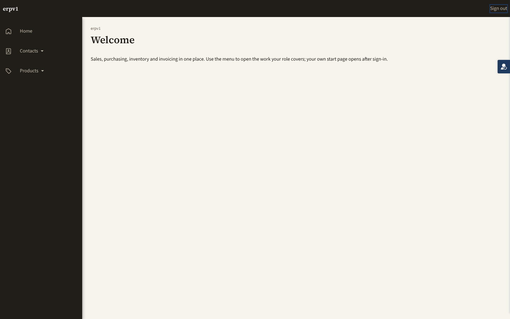
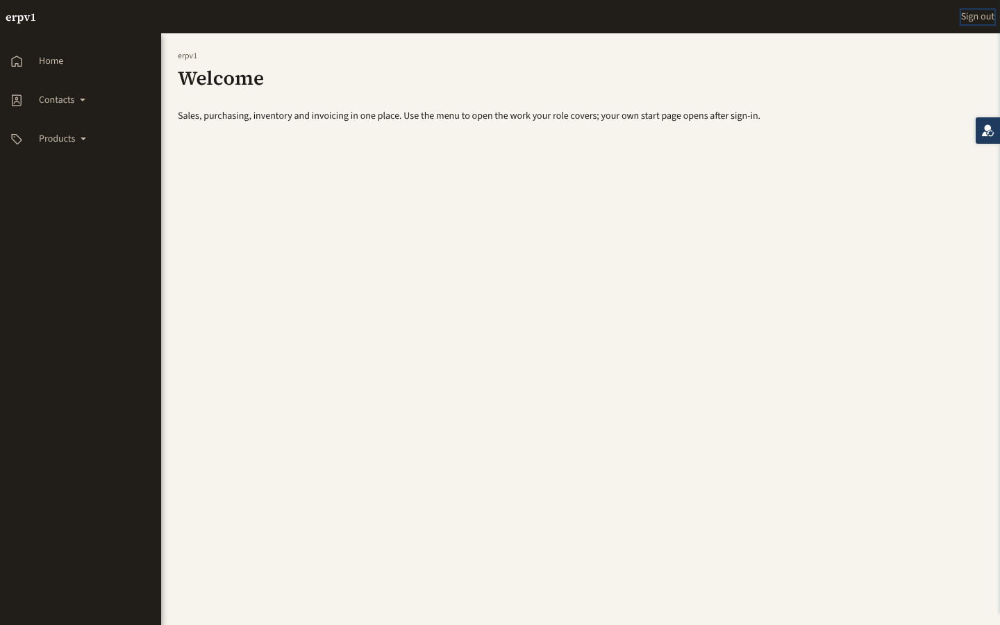
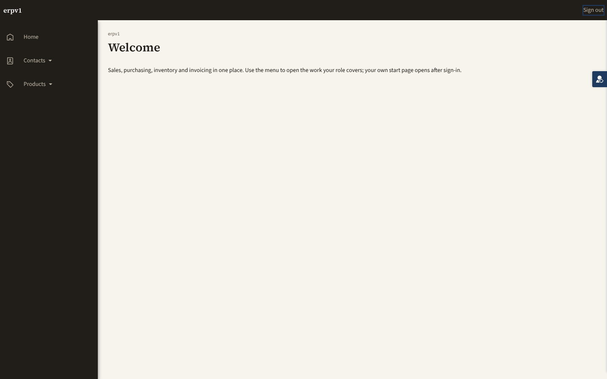
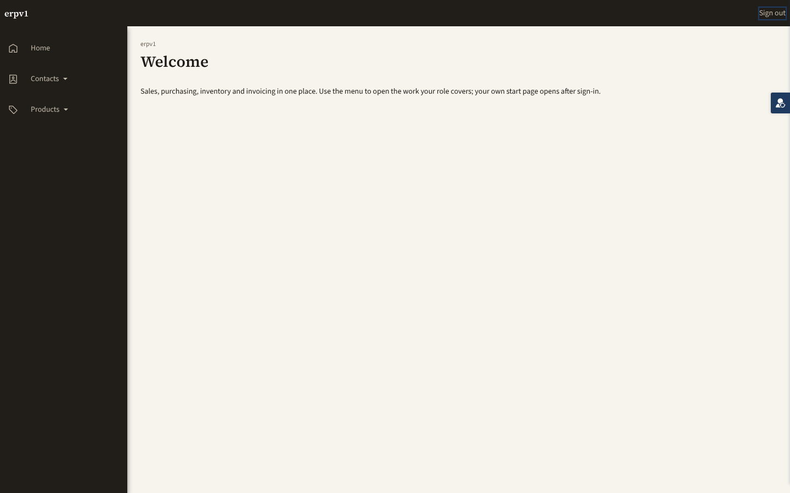
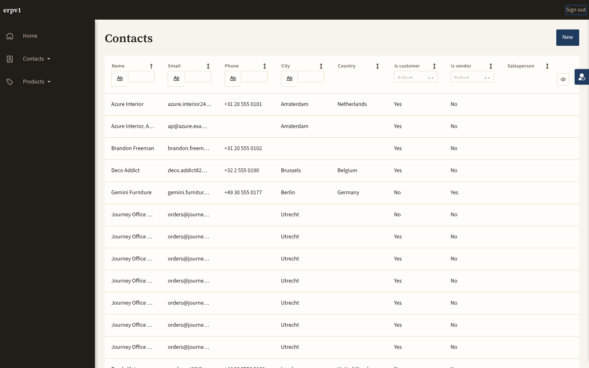
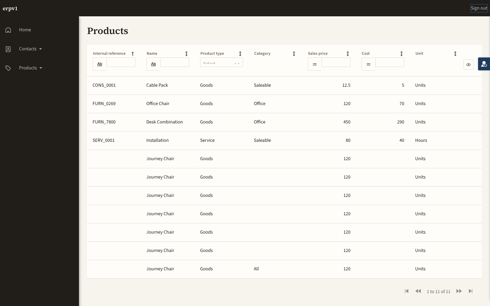

19 of 19 in-scope pages were never walked. Everything measured below describes the 0 pages that were reached. 43 checks also failed. A pass count computed over the walked minority is not a verdict on the application.
32 actions below account for every one of the 117 non-passing rows in this report. They are derived from the findings, not written by hand: each one names the file, page or microflow it applies to and the checks it would turn green. Ordering is by blast radius, never by count — one severed landing guard outranks thirteen accessibility findings because it is the reason thirteen other things were never measured at all.
1 check this closes
1 check this closes
1 check this closes
1 check this closes
1 check this closes
1 check this closes
1 check this closes
1 check this closes
1 check this closes
1 check this closes
1 check this closes
1 check this closes
1 check this closes
1 check this closes
1 check this closes
1 check this closes
1 check this closes
1 check this closes
1 check this closes
2 checks this closes
page-join/j-partners-01/step2
1 check this closes
1 check this closes
1 check this closes
27 checks this closes
design-audit/rung7/a11y/Core.Tax_NewEdit
design-audit/rung7/a11y/Partners.PartnerChild_NewEdit
design-audit/rung7/a11y/Partners.Partner_NewEdit
design-audit/rung7/a11y/Partners.UserProfile_Edit
design-audit/rung7/a11y/Products.Pricelist_NewEdit
design-audit/rung7/a11y/Products.ProductCategory_NewEdit
design-audit/rung7/a11y/Products.Product_NewEdit
design-audit/rung7/a11y/Products.UoMCategory_NewEdit
design-audit/rung7/overflow/Core.PaymentTerm_NewEdit
design-audit/rung7/overflow/Core.Tax_NewEdit
design-audit/rung7/overflow/Partners.PartnerChild_NewEdit
design-audit/rung7/overflow/Partners.Partner_NewEdit
design-audit/rung7/overflow/Partners.UserProfile_Edit
design-audit/rung7/overflow/Products.Pricelist_NewEdit
design-audit/rung7/overflow/Products.ProductCategory_NewEdit
design-audit/rung7/overflow/Products.Product_NewEdit
design-audit/rung7/overflow/Products.UoMCategory_NewEdit
design-audit/rung7/structure/Core.PaymentTerm_NewEdit
design-audit/rung7/structure/Core.Tax_NewEdit
design-audit/rung7/structure/Partners.PartnerChild_NewEdit
design-audit/rung7/structure/Partners.Partner_NewEdit
design-audit/rung7/structure/Partners.UserProfile_Edit
design-audit/rung7/structure/Products.Pricelist_NewEdit
design-audit/rung7/structure/Products.ProductCategory_NewEdit
design-audit/rung7/structure/Products.Product_NewEdit
design-audit/rung7/structure/Products.UoMCategory_NewEdit
5 checks this closes
design-audit/rung6/never-promoted/Core.Tax_Overview
design-audit/rung6/wireframe-chrome/Core.Tax_Overview
design-audit/rung7/raw-class-vs-designproperty/Core.Tax_Overview
design-audit/rung7/unmatched-class/Core.Tax_Overview
5 checks this closes
design-audit/rung6/never-promoted/Products.Product_Overview
design-audit/rung6/wireframe-chrome/Products.Product_Overview
design-audit/rung7/raw-class-vs-designproperty/Products.Product_Overview
design-audit/rung7/unmatched-class/Products.Product_Overview
10 checks this closes
design-audit/rung7/structure/Core.Home_Web
design-audit/rung7/structure/Core.PaymentTerm_Overview
design-audit/rung7/structure/Core.Sequence_Overview
design-audit/rung7/structure/Core.Tax_Overview
design-audit/rung7/structure/Partners.Partner_Overview
design-audit/rung7/structure/Products.Pricelist_Overview
design-audit/rung7/structure/Products.ProductCategory_Overview
design-audit/rung7/structure/Products.Product_Overview
design-audit/rung7/structure/Products.UoMCategory_Overview
5 checks this closes
design-audit/rung7/a11y/Products.Pricelist_Overview
design-audit/rung7/a11y/Products.ProductCategory_Overview
design-audit/rung7/a11y/Products.Product_Overview
design-audit/rung7/a11y/Products.UoMCategory_Overview
2 checks this closes
design-audit/rung6/wireframe-conformance/Products.Product_Overview
25 checks this closes
conformance/partners/f001-contacts-company-users-actors
conformance/partners/f001-contacts-company-users-microflows-2
conformance/partners/f001-contacts-company-users-microflows-3
conformance/partners/f001-contacts-company-users-microflows-6
conformance/partners/f001-contacts-company-users-pages-2
conformance/partners/f001-contacts-company-users-pages-4
conformance/products/f002-units-of-measure-actorrolemapping
conformance/products/f002-units-of-measure-actors
conformance/products/f002-units-of-measure-microflows-0
conformance/products/f002-units-of-measure-microflows-1
conformance/products/f002-units-of-measure-microflows-2
conformance/products/f002-units-of-measure-pages-0
conformance/products/f002-units-of-measure-pages-1
conformance/products/f003-product-catalogue-pricing-actorrolemapping
conformance/products/f003-product-catalogue-pricing-actors
conformance/products/f003-product-catalogue-pricing-microflows-0
conformance/products/f003-product-catalogue-pricing-microflows-1
conformance/products/f003-product-catalogue-pricing-microflows-2
conformance/products/f003-product-catalogue-pricing-pages-0
conformance/products/f003-product-catalogue-pricing-pages-1
conformance/products/f003-product-catalogue-pricing-pages-2
conformance/products/f003-product-catalogue-pricing-pages-3
conformance/products/f003-product-catalogue-pricing-pages-4
conformance/products/f003-product-catalogue-pricing-pages-5
7 checks this closes
loop/core/journeys-positive-control-must-detect-a-broken-precondition
loop/core/review-model-vs-decided-report-json
loop/partners/design-audit-rungs-6-7-ui-a11y-informational
loop/partners/journeys-positive-control-must-detect-a-broken-precondition
loop/products/design-audit-rungs-6-7-ui-a11y-informational
loop/products/journeys-positive-control-must-detect-a-broken-precondition
7 checks this closes
control/trace-negative
control/trace-order
coverage/inventory/has-a-journey
coverage/invoicing/has-a-journey
coverage/purchasing/has-a-journey
coverage/sales/has-a-journey
Products.Manager
8 pages in scope ⌀ NONE WALKED ⌀ 8 never walkedWhat this persona was trying to do: reach the 8 pages below, in the order the process runs them. Each row answers all six questions — which tests ran, where the page sits, what data change was expected, whether it was seen, whether the page matches its wireframe, and whether it matches general design practice. The step-by-step narrative with screenshots is rendered once, further down; the links below jump into it.
| Page | Where in the process | Which tests ran | Data change expected → seen | Wireframe | Design practice |
|---|---|---|---|---|---|
| Products.Pricelist_NewEdit ⌀ NEVER WALKED | should have been covered by J-PRODUCTS-01 | Nothing ran here. No behavioural claim about this page has been tested in either direction — not its data writes, not its microflows, not what it says on screen. It is unknown, not untested. | ✓ PASS | ⌀ DID NOT RUN (0 fail / 3 not run / 0 skipped) | |
| Products.Pricelist_Overview ⌀ NEVER WALKED | should have been covered by J-PRODUCTS-01 | Nothing ran here. No behavioural claim about this page has been tested in either direction — not its data writes, not its microflows, not what it says on screen. It is unknown, not untested. | ✓ PASS | ✕ FAIL (2 fail / 0 not run / 0 skipped) | |
| Products.ProductCategory_NewEdit ⌀ NEVER WALKED | should have been covered by J-PRODUCTS-01 | Nothing ran here. No behavioural claim about this page has been tested in either direction — not its data writes, not its microflows, not what it says on screen. It is unknown, not untested. | ✓ PASS | ⌀ DID NOT RUN (0 fail / 3 not run / 0 skipped) | |
| Products.ProductCategory_Overview ⌀ NEVER WALKED | should have been covered by J-PRODUCTS-01 | Nothing ran here. No behavioural claim about this page has been tested in either direction — not its data writes, not its microflows, not what it says on screen. It is unknown, not untested. | ✓ PASS | ✕ FAIL (2 fail / 0 not run / 0 skipped) | |
| Products.Product_NewEdit ⌀ NEVER WALKED | should have been covered by J-PRODUCTS-01 | Nothing ran here. No behavioural claim about this page has been tested in either direction — not its data writes, not its microflows, not what it says on screen. It is unknown, not untested. | ✓ PASS | ⌀ DID NOT RUN (0 fail / 3 not run / 0 skipped) | |
| Products.Product_Overview ⌀ NEVER WALKED | should have been covered by J-PRODUCTS-01 | Nothing ran here. No behavioural claim about this page has been tested in either direction — not its data writes, not its microflows, not what it says on screen. It is unknown, not untested. | ⌀ DID NOT RUN | ✕ FAIL (2 fail / 6 not run / 0 skipped) | |
| Products.UoMCategory_NewEdit ⌀ NEVER WALKED | should have been covered by J-PRODUCTS-01 | Nothing ran here. No behavioural claim about this page has been tested in either direction — not its data writes, not its microflows, not what it says on screen. It is unknown, not untested. | ✓ PASS | ⌀ DID NOT RUN (0 fail / 3 not run / 0 skipped) | |
| Products.UoMCategory_Overview ⌀ NEVER WALKED | should have been covered by J-PRODUCTS-01 | Nothing ran here. No behavioural claim about this page has been tested in either direction — not its data writes, not its microflows, not what it says on screen. It is unknown, not untested. | ✓ PASS | ✕ FAIL (2 fail / 0 not run / 0 skipped) | |
Core.Admin
6 pages in scope ⌀ NONE WALKED ⌀ 6 never walkedWhat this persona was trying to do: reach the 6 pages below, in the order the process runs them. Each row answers all six questions — which tests ran, where the page sits, what data change was expected, whether it was seen, whether the page matches its wireframe, and whether it matches general design practice. The step-by-step narrative with screenshots is rendered once, further down; the links below jump into it.
| Page | Where in the process | Which tests ran | Data change expected → seen | Wireframe | Design practice |
|---|---|---|---|---|---|
| Core.Company_Edit ⌀ NEVER WALKED | should have been covered by J-CORE-01 | Nothing ran here. No behavioural claim about this page has been tested in either direction — not its data writes, not its microflows, not what it says on screen. It is unknown, not untested. | ✓ PASS | ✕ FAIL (1 fail / 0 not run / 0 skipped) | |
| Core.PaymentTerm_NewEdit ⌀ NEVER WALKED | should have been covered by J-CORE-01 | Nothing ran here. No behavioural claim about this page has been tested in either direction — not its data writes, not its microflows, not what it says on screen. It is unknown, not untested. | ✓ PASS | ⌀ DID NOT RUN (0 fail / 3 not run / 0 skipped) | |
| Core.PaymentTerm_Overview ⌀ NEVER WALKED | should have been covered by J-CORE-01 | Nothing ran here. No behavioural claim about this page has been tested in either direction — not its data writes, not its microflows, not what it says on screen. It is unknown, not untested. | ✓ PASS | ✕ FAIL (1 fail / 0 not run / 0 skipped) | |
| Core.Sequence_Overview ⌀ NEVER WALKED | should have been covered by J-CORE-01 | Nothing ran here. No behavioural claim about this page has been tested in either direction — not its data writes, not its microflows, not what it says on screen. It is unknown, not untested. | ✓ PASS | ✕ FAIL (1 fail / 0 not run / 0 skipped) | |
| Core.Tax_NewEdit ⌀ NEVER WALKED | should have been covered by J-CORE-01 | Nothing ran here. No behavioural claim about this page has been tested in either direction — not its data writes, not its microflows, not what it says on screen. It is unknown, not untested. | ✓ PASS | ⌀ DID NOT RUN (0 fail / 3 not run / 0 skipped) | |
| Core.Tax_Overview ⌀ NEVER WALKED | should have been covered by J-CORE-01 | Nothing ran here. No behavioural claim about this page has been tested in either direction — not its data writes, not its microflows, not what it says on screen. It is unknown, not untested. | ⌀ DID NOT RUN | ✕ FAIL (1 fail / 6 not run / 0 skipped) | |
Core.Config
4 pages in scope ⌀ NONE WALKED ⌀ 4 never walkedWhat this persona was trying to do: reach the 4 pages below, in the order the process runs them. Each row answers all six questions — which tests ran, where the page sits, what data change was expected, whether it was seen, whether the page matches its wireframe, and whether it matches general design practice. The step-by-step narrative with screenshots is rendered once, further down; the links below jump into it.
| Page | Where in the process | Which tests ran | Data change expected → seen | Wireframe | Design practice |
|---|---|---|---|---|---|
| Core.PaymentTerm_NewEdit ⌀ NEVER WALKED | should have been covered by J-CORE-01 | Nothing ran here. No behavioural claim about this page has been tested in either direction — not its data writes, not its microflows, not what it says on screen. It is unknown, not untested. | ✓ PASS | ⌀ DID NOT RUN (0 fail / 3 not run / 0 skipped) | |
| Core.PaymentTerm_Overview ⌀ NEVER WALKED | should have been covered by J-CORE-01 | Nothing ran here. No behavioural claim about this page has been tested in either direction — not its data writes, not its microflows, not what it says on screen. It is unknown, not untested. | ✓ PASS | ✕ FAIL (1 fail / 0 not run / 0 skipped) | |
| Core.Tax_NewEdit ⌀ NEVER WALKED | should have been covered by J-CORE-01 | Nothing ran here. No behavioural claim about this page has been tested in either direction — not its data writes, not its microflows, not what it says on screen. It is unknown, not untested. | ✓ PASS | ⌀ DID NOT RUN (0 fail / 3 not run / 0 skipped) | |
| Core.Tax_Overview ⌀ NEVER WALKED | should have been covered by J-CORE-01 | Nothing ran here. No behavioural claim about this page has been tested in either direction — not its data writes, not its microflows, not what it says on screen. It is unknown, not untested. | ⌀ DID NOT RUN | ✕ FAIL (1 fail / 6 not run / 0 skipped) | |
Partners.Admin
3 pages in scope ⌀ NONE WALKED ⌀ 3 never walkedWhat this persona was trying to do: reach the 3 pages below, in the order the process runs them. Each row answers all six questions — which tests ran, where the page sits, what data change was expected, whether it was seen, whether the page matches its wireframe, and whether it matches general design practice. The step-by-step narrative with screenshots is rendered once, further down; the links below jump into it.
| Page | Where in the process | Which tests ran | Data change expected → seen | Wireframe | Design practice |
|---|---|---|---|---|---|
| Partners.Partner_NewEdit ⌀ NEVER WALKED | should have been covered by J-PARTNERS-01 | Nothing ran here. No behavioural claim about this page has been tested in either direction — not its data writes, not its microflows, not what it says on screen. It is unknown, not untested. | ✓ PASS | ⌀ DID NOT RUN (0 fail / 3 not run / 0 skipped) | |
| Partners.Partner_Overview ⌀ NEVER WALKED | should have been covered by J-PARTNERS-01 | Nothing ran here. No behavioural claim about this page has been tested in either direction — not its data writes, not its microflows, not what it says on screen. It is unknown, not untested. | ✓ PASS | ✕ FAIL (2 fail / 0 not run / 0 skipped) | |
| Partners.UserProfile_Edit ⌀ NEVER WALKED | should have been covered by J-PARTNERS-01 | Nothing ran here. No behavioural claim about this page has been tested in either direction — not its data writes, not its microflows, not what it says on screen. It is unknown, not untested. | ✓ PASS | ⌀ DID NOT RUN (0 fail / 3 not run / 0 skipped) | |
Partners.Editor
3 pages in scope ⌀ NONE WALKED ⌀ 3 never walkedWhat this persona was trying to do: reach the 3 pages below, in the order the process runs them. Each row answers all six questions — which tests ran, where the page sits, what data change was expected, whether it was seen, whether the page matches its wireframe, and whether it matches general design practice. The step-by-step narrative with screenshots is rendered once, further down; the links below jump into it.
| Page | Where in the process | Which tests ran | Data change expected → seen | Wireframe | Design practice |
|---|---|---|---|---|---|
| Partners.PartnerChild_NewEdit ⌀ NEVER WALKED | should have been covered by J-PARTNERS-01 | Nothing ran here. No behavioural claim about this page has been tested in either direction — not its data writes, not its microflows, not what it says on screen. It is unknown, not untested. | ✓ PASS | ⌀ DID NOT RUN (0 fail / 3 not run / 0 skipped) | |
| Partners.Partner_NewEdit ⌀ NEVER WALKED | should have been covered by J-PARTNERS-01 | Nothing ran here. No behavioural claim about this page has been tested in either direction — not its data writes, not its microflows, not what it says on screen. It is unknown, not untested. | ✓ PASS | ⌀ DID NOT RUN (0 fail / 3 not run / 0 skipped) | |
| Partners.Partner_Overview ⌀ NEVER WALKED | should have been covered by J-PARTNERS-01 | Nothing ran here. No behavioural claim about this page has been tested in either direction — not its data writes, not its microflows, not what it says on screen. It is unknown, not untested. | ✓ PASS | ✕ FAIL (2 fail / 0 not run / 0 skipped) | |
Core.User
1 page in scope ⌀ NONE WALKED ⌀ 1 never walkedWhat this persona was trying to do: reach the 1 page below, in the order the process runs them. Each row answers all six questions — which tests ran, where the page sits, what data change was expected, whether it was seen, whether the page matches its wireframe, and whether it matches general design practice. The step-by-step narrative with screenshots is rendered once, further down; the links below jump into it.
| Page | Where in the process | Which tests ran | Data change expected → seen | Wireframe | Design practice |
|---|---|---|---|---|---|
| Core.Home_Web ⌀ NEVER WALKED | should have been covered by J-CORE-01 | Nothing ran here. No behavioural claim about this page has been tested in either direction — not its data writes, not its microflows, not what it says on screen. It is unknown, not untested. | ⊘ SKIPPED | ✕ FAIL (1 fail / 0 not run / 0 skipped) | |
Products.Reader
1 page in scope ⌀ NONE WALKED ⌀ 1 never walkedWhat this persona was trying to do: reach the 1 page below, in the order the process runs them. Each row answers all six questions — which tests ran, where the page sits, what data change was expected, whether it was seen, whether the page matches its wireframe, and whether it matches general design practice. The step-by-step narrative with screenshots is rendered once, further down; the links below jump into it.
| Page | Where in the process | Which tests ran | Data change expected → seen | Wireframe | Design practice |
|---|---|---|---|---|---|
| Products.Product_Overview ⌀ NEVER WALKED | should have been covered by J-PRODUCTS-01 | Nothing ran here. No behavioural claim about this page has been tested in either direction — not its data writes, not its microflows, not what it says on screen. It is unknown, not untested. | ⌀ DID NOT RUN | ✕ FAIL (2 fail / 6 not run / 0 skipped) | |
- J-CORE-01 — Core.Company_Edit, Core.Home_Web, Core.PaymentTerm_NewEdit, Core.PaymentTerm_Overview, Core.Sequence_Overview, Core.Tax_NewEdit, Core.Tax_Overview
- J-PARTNERS-01 — Partners.PartnerChild_NewEdit, Partners.Partner_NewEdit, Partners.Partner_Overview, Partners.UserProfile_Edit
- J-PRODUCTS-01 — Products.Pricelist_NewEdit, Products.Pricelist_Overview, Products.ProductCategory_NewEdit, Products.ProductCategory_Overview, Products.Product_NewEdit, Products.Product_Overview, Products.UoMCategory_NewEdit, Products.UoMCategory_Overview
F001-contacts-company-users:`/actorRoleMapping/*` (6) — ledger says "not-built"
Partners · conformance/partners/f001-contacts-company-users-actorrolemapping
Measured by conformance at 2026-10-15 00:00 UTC. Provenance: measured.
| Evidence | Pointer |
|---|---|
| command | SHOW USER ROLES |
42 further failures below, in the findings table.
J-CORE-01
module Core 0 steps ⌀ CONTROL NOT RUN| Verdict | Rung | Check | Where | Requirement | Measured & what to do |
|---|---|---|---|---|---|
| ⌀ DID NOT RUN | ui | Core.Company_Edit was walked by a journey J-CORE-01 | Core.Company_Edit | ⌀ NO BRD POINTER DECLARED | in scope, and J-CORE-01 is the journey that should have covered it — no walk step in this run resolved to this page. Nothing is known about its behaviour in either direction. ⌀ control not run: check did not run ⌀ DECLARED, NEVER RAN What to do about thispage-never-walked-journey-exists JOURNEY CONTRACT journeys/Core.journey.json Would have measurednothing. No behavioural rung ran against this page at all — not what it says, not which microflows it fires, not what it writes Why it did not runa journey exists for Core but no step in this run resolved to this page So what is unproventhis page is UNKNOWN, not untested. It could be perfect or it could be unreachable; this report distinguishes neither. The design rungs below say how it is BUILT, never whether it WORKS Do thisAdd a step to journeys/Core.journey.json that navigates to Core.Company_Edit, with a `ready` selector and at least one data effect. A page in scope with no walk step is a hole in the golden path, not a formatting gap. |
| ⌀ DID NOT RUN | ui | Core.Home_Web was walked by a journey J-CORE-01 | Core.Home_Web | ⌀ NO BRD POINTER DECLARED | in scope, and J-CORE-01 is the journey that should have covered it — no walk step in this run resolved to this page. Nothing is known about its behaviour in either direction. ⌀ control not run: check did not run ⌀ DECLARED, NEVER RAN What to do about thispage-never-walked-journey-exists JOURNEY CONTRACT journeys/Core.journey.json Would have measurednothing. No behavioural rung ran against this page at all — not what it says, not which microflows it fires, not what it writes Why it did not runa journey exists for Core but no step in this run resolved to this page So what is unproventhis page is UNKNOWN, not untested. It could be perfect or it could be unreachable; this report distinguishes neither. The design rungs below say how it is BUILT, never whether it WORKS Do thisAdd a step to journeys/Core.journey.json that navigates to Core.Home_Web, with a `ready` selector and at least one data effect. A page in scope with no walk step is a hole in the golden path, not a formatting gap. |
| ⌀ DID NOT RUN | ui | Core.PaymentTerm_NewEdit was walked by a journey J-CORE-01 | Core.PaymentTerm_NewEdit | ⌀ NO BRD POINTER DECLARED | in scope, and J-CORE-01 is the journey that should have covered it — no walk step in this run resolved to this page. Nothing is known about its behaviour in either direction. ⌀ control not run: check did not run ⌀ DECLARED, NEVER RAN What to do about thispage-never-walked-journey-exists JOURNEY CONTRACT journeys/Core.journey.json Would have measurednothing. No behavioural rung ran against this page at all — not what it says, not which microflows it fires, not what it writes Why it did not runa journey exists for Core but no step in this run resolved to this page So what is unproventhis page is UNKNOWN, not untested. It could be perfect or it could be unreachable; this report distinguishes neither. The design rungs below say how it is BUILT, never whether it WORKS Do thisAdd a step to journeys/Core.journey.json that navigates to Core.PaymentTerm_NewEdit, with a `ready` selector and at least one data effect. A page in scope with no walk step is a hole in the golden path, not a formatting gap. |
| ⌀ DID NOT RUN | ui | Core.PaymentTerm_Overview was walked by a journey J-CORE-01 | Core.PaymentTerm_Overview | ⌀ NO BRD POINTER DECLARED | in scope, and J-CORE-01 is the journey that should have covered it — no walk step in this run resolved to this page. Nothing is known about its behaviour in either direction. ⌀ control not run: check did not run ⌀ DECLARED, NEVER RAN What to do about thispage-never-walked-journey-exists JOURNEY CONTRACT journeys/Core.journey.json Would have measurednothing. No behavioural rung ran against this page at all — not what it says, not which microflows it fires, not what it writes Why it did not runa journey exists for Core but no step in this run resolved to this page So what is unproventhis page is UNKNOWN, not untested. It could be perfect or it could be unreachable; this report distinguishes neither. The design rungs below say how it is BUILT, never whether it WORKS Do thisAdd a step to journeys/Core.journey.json that navigates to Core.PaymentTerm_Overview, with a `ready` selector and at least one data effect. A page in scope with no walk step is a hole in the golden path, not a formatting gap. |
| ⌀ DID NOT RUN | ui | Core.Sequence_Overview was walked by a journey J-CORE-01 | Core.Sequence_Overview | ⌀ NO BRD POINTER DECLARED | in scope, and J-CORE-01 is the journey that should have covered it — no walk step in this run resolved to this page. Nothing is known about its behaviour in either direction. ⌀ control not run: check did not run ⌀ DECLARED, NEVER RAN What to do about thispage-never-walked-journey-exists JOURNEY CONTRACT journeys/Core.journey.json Would have measurednothing. No behavioural rung ran against this page at all — not what it says, not which microflows it fires, not what it writes Why it did not runa journey exists for Core but no step in this run resolved to this page So what is unproventhis page is UNKNOWN, not untested. It could be perfect or it could be unreachable; this report distinguishes neither. The design rungs below say how it is BUILT, never whether it WORKS Do thisAdd a step to journeys/Core.journey.json that navigates to Core.Sequence_Overview, with a `ready` selector and at least one data effect. A page in scope with no walk step is a hole in the golden path, not a formatting gap. |
| ⌀ DID NOT RUN | ui | Core.Tax_NewEdit was walked by a journey J-CORE-01 | Core.Tax_NewEdit | ⌀ NO BRD POINTER DECLARED | in scope, and J-CORE-01 is the journey that should have covered it — no walk step in this run resolved to this page. Nothing is known about its behaviour in either direction. ⌀ control not run: check did not run ⌀ DECLARED, NEVER RAN What to do about thispage-never-walked-journey-exists JOURNEY CONTRACT journeys/Core.journey.json Would have measurednothing. No behavioural rung ran against this page at all — not what it says, not which microflows it fires, not what it writes Why it did not runa journey exists for Core but no step in this run resolved to this page So what is unproventhis page is UNKNOWN, not untested. It could be perfect or it could be unreachable; this report distinguishes neither. The design rungs below say how it is BUILT, never whether it WORKS Do thisAdd a step to journeys/Core.journey.json that navigates to Core.Tax_NewEdit, with a `ready` selector and at least one data effect. A page in scope with no walk step is a hole in the golden path, not a formatting gap. |
| ⌀ DID NOT RUN | ui | Core.Tax_Overview was walked by a journey J-CORE-01 | Core.Tax_Overview | ⌀ NO BRD POINTER DECLARED | in scope, and J-CORE-01 is the journey that should have covered it — no walk step in this run resolved to this page. Nothing is known about its behaviour in either direction. ⌀ control not run: check did not run ⌀ DECLARED, NEVER RAN What to do about thispage-never-walked-journey-exists JOURNEY CONTRACT journeys/Core.journey.json Would have measurednothing. No behavioural rung ran against this page at all — not what it says, not which microflows it fires, not what it writes Why it did not runa journey exists for Core but no step in this run resolved to this page So what is unproventhis page is UNKNOWN, not untested. It could be perfect or it could be unreachable; this report distinguishes neither. The design rungs below say how it is BUILT, never whether it WORKS Do thisAdd a step to journeys/Core.journey.json that navigates to Core.Tax_Overview, with a `ready` selector and at least one data effect. A page in scope with no walk step is a hole in the golden path, not a formatting gap. |
J-PARTNERS-01
module Partners 2 steps ⌀ CONTROL NOT RUN| Verdict | Rung | Check | Where | Requirement | Measured & what to do |
|---|---|---|---|---|---|
| ⌀ DID NOT RUN | ui | Partners.Partner_NewEdit was walked by a journey J-PARTNERS-01 | Partners.Partner_NewEdit | ⌀ NO BRD POINTER DECLARED | in scope, and J-PARTNERS-01 is the journey that should have covered it — no walk step in this run resolved to this page. Nothing is known about its behaviour in either direction. ⌀ control not run: check did not run ⌀ DECLARED, NEVER RAN What to do about thispage-never-walked-journey-exists JOURNEY CONTRACT journeys/Partners.journey.json Would have measurednothing. No behavioural rung ran against this page at all — not what it says, not which microflows it fires, not what it writes Why it did not runa journey exists for Partners but no step in this run resolved to this page So what is unproventhis page is UNKNOWN, not untested. It could be perfect or it could be unreachable; this report distinguishes neither. The design rungs below say how it is BUILT, never whether it WORKS Do thisAdd a step to journeys/Partners.journey.json that navigates to Partners.Partner_NewEdit, with a `ready` selector and at least one data effect. A page in scope with no walk step is a hole in the golden path, not a formatting gap. |
| ⌀ DID NOT RUN | ui | Partners.Partner_Overview was walked by a journey J-PARTNERS-01 | Partners.Partner_Overview | ⌀ NO BRD POINTER DECLARED | in scope, and J-PARTNERS-01 is the journey that should have covered it — no walk step in this run resolved to this page. Nothing is known about its behaviour in either direction. ⌀ control not run: check did not run ⌀ DECLARED, NEVER RAN What to do about thispage-never-walked-journey-exists JOURNEY CONTRACT journeys/Partners.journey.json Would have measurednothing. No behavioural rung ran against this page at all — not what it says, not which microflows it fires, not what it writes Why it did not runa journey exists for Partners but no step in this run resolved to this page So what is unproventhis page is UNKNOWN, not untested. It could be perfect or it could be unreachable; this report distinguishes neither. The design rungs below say how it is BUILT, never whether it WORKS Do thisAdd a step to journeys/Partners.journey.json that navigates to Partners.Partner_Overview, with a `ready` selector and at least one data effect. A page in scope with no walk step is a hole in the golden path, not a formatting gap. |
| ⌀ DID NOT RUN | ui | Partners.PartnerChild_NewEdit was walked by a journey J-PARTNERS-01 | Partners.PartnerChild_NewEdit | ⌀ NO BRD POINTER DECLARED | in scope, and J-PARTNERS-01 is the journey that should have covered it — no walk step in this run resolved to this page. Nothing is known about its behaviour in either direction. ⌀ control not run: check did not run ⌀ DECLARED, NEVER RAN What to do about thispage-never-walked-journey-exists JOURNEY CONTRACT journeys/Partners.journey.json Would have measurednothing. No behavioural rung ran against this page at all — not what it says, not which microflows it fires, not what it writes Why it did not runa journey exists for Partners but no step in this run resolved to this page So what is unproventhis page is UNKNOWN, not untested. It could be perfect or it could be unreachable; this report distinguishes neither. The design rungs below say how it is BUILT, never whether it WORKS Do thisAdd a step to journeys/Partners.journey.json that navigates to Partners.PartnerChild_NewEdit, with a `ready` selector and at least one data effect. A page in scope with no walk step is a hole in the golden path, not a formatting gap. |
| ⌀ DID NOT RUN | ui | Partners.UserProfile_Edit was walked by a journey J-PARTNERS-01 | Partners.UserProfile_Edit | ⌀ NO BRD POINTER DECLARED | in scope, and J-PARTNERS-01 is the journey that should have covered it — no walk step in this run resolved to this page. Nothing is known about its behaviour in either direction. ⌀ control not run: check did not run ⌀ DECLARED, NEVER RAN What to do about thispage-never-walked-journey-exists JOURNEY CONTRACT journeys/Partners.journey.json Would have measurednothing. No behavioural rung ran against this page at all — not what it says, not which microflows it fires, not what it writes Why it did not runa journey exists for Partners but no step in this run resolved to this page So what is unproventhis page is UNKNOWN, not untested. It could be perfect or it could be unreachable; this report distinguishes neither. The design rungs below say how it is BUILT, never whether it WORKS Do thisAdd a step to journeys/Partners.journey.json that navigates to Partners.UserProfile_Edit, with a `ready` selector and at least one data effect. A page in scope with no walk step is a hole in the golden path, not a formatting gap. |
J-PRODUCTS-01
module Products 0 steps ⌀ CONTROL NOT RUN| Verdict | Rung | Check | Where | Requirement | Measured & what to do |
|---|---|---|---|---|---|
| ⌀ DID NOT RUN | ui | Products.Pricelist_NewEdit was walked by a journey J-PRODUCTS-01 | Products.Pricelist_NewEdit | ⌀ NO BRD POINTER DECLARED | in scope, and J-PRODUCTS-01 is the journey that should have covered it — no walk step in this run resolved to this page. Nothing is known about its behaviour in either direction. ⌀ control not run: check did not run ⌀ DECLARED, NEVER RAN What to do about thispage-never-walked-journey-exists JOURNEY CONTRACT journeys/Products.journey.json Would have measurednothing. No behavioural rung ran against this page at all — not what it says, not which microflows it fires, not what it writes Why it did not runa journey exists for Products but no step in this run resolved to this page So what is unproventhis page is UNKNOWN, not untested. It could be perfect or it could be unreachable; this report distinguishes neither. The design rungs below say how it is BUILT, never whether it WORKS Do thisAdd a step to journeys/Products.journey.json that navigates to Products.Pricelist_NewEdit, with a `ready` selector and at least one data effect. A page in scope with no walk step is a hole in the golden path, not a formatting gap. |
| ⌀ DID NOT RUN | ui | Products.Pricelist_Overview was walked by a journey J-PRODUCTS-01 | Products.Pricelist_Overview | ⌀ NO BRD POINTER DECLARED | in scope, and J-PRODUCTS-01 is the journey that should have covered it — no walk step in this run resolved to this page. Nothing is known about its behaviour in either direction. ⌀ control not run: check did not run ⌀ DECLARED, NEVER RAN What to do about thispage-never-walked-journey-exists JOURNEY CONTRACT journeys/Products.journey.json Would have measurednothing. No behavioural rung ran against this page at all — not what it says, not which microflows it fires, not what it writes Why it did not runa journey exists for Products but no step in this run resolved to this page So what is unproventhis page is UNKNOWN, not untested. It could be perfect or it could be unreachable; this report distinguishes neither. The design rungs below say how it is BUILT, never whether it WORKS Do thisAdd a step to journeys/Products.journey.json that navigates to Products.Pricelist_Overview, with a `ready` selector and at least one data effect. A page in scope with no walk step is a hole in the golden path, not a formatting gap. |
| ⌀ DID NOT RUN | ui | Products.Product_NewEdit was walked by a journey J-PRODUCTS-01 | Products.Product_NewEdit | ⌀ NO BRD POINTER DECLARED | in scope, and J-PRODUCTS-01 is the journey that should have covered it — no walk step in this run resolved to this page. Nothing is known about its behaviour in either direction. ⌀ control not run: check did not run ⌀ DECLARED, NEVER RAN What to do about thispage-never-walked-journey-exists JOURNEY CONTRACT journeys/Products.journey.json Would have measurednothing. No behavioural rung ran against this page at all — not what it says, not which microflows it fires, not what it writes Why it did not runa journey exists for Products but no step in this run resolved to this page So what is unproventhis page is UNKNOWN, not untested. It could be perfect or it could be unreachable; this report distinguishes neither. The design rungs below say how it is BUILT, never whether it WORKS Do thisAdd a step to journeys/Products.journey.json that navigates to Products.Product_NewEdit, with a `ready` selector and at least one data effect. A page in scope with no walk step is a hole in the golden path, not a formatting gap. |
| ⌀ DID NOT RUN | ui | Products.Product_Overview was walked by a journey J-PRODUCTS-01 | Products.Product_Overview | ⌀ NO BRD POINTER DECLARED | in scope, and J-PRODUCTS-01 is the journey that should have covered it — no walk step in this run resolved to this page. Nothing is known about its behaviour in either direction. ⌀ control not run: check did not run ⌀ DECLARED, NEVER RAN What to do about thispage-never-walked-journey-exists JOURNEY CONTRACT journeys/Products.journey.json Would have measurednothing. No behavioural rung ran against this page at all — not what it says, not which microflows it fires, not what it writes Why it did not runa journey exists for Products but no step in this run resolved to this page So what is unproventhis page is UNKNOWN, not untested. It could be perfect or it could be unreachable; this report distinguishes neither. The design rungs below say how it is BUILT, never whether it WORKS Do thisAdd a step to journeys/Products.journey.json that navigates to Products.Product_Overview, with a `ready` selector and at least one data effect. A page in scope with no walk step is a hole in the golden path, not a formatting gap. |
| ⌀ DID NOT RUN | ui | Products.ProductCategory_NewEdit was walked by a journey J-PRODUCTS-01 | Products.ProductCategory_NewEdit | ⌀ NO BRD POINTER DECLARED | in scope, and J-PRODUCTS-01 is the journey that should have covered it — no walk step in this run resolved to this page. Nothing is known about its behaviour in either direction. ⌀ control not run: check did not run ⌀ DECLARED, NEVER RAN What to do about thispage-never-walked-journey-exists JOURNEY CONTRACT journeys/Products.journey.json Would have measurednothing. No behavioural rung ran against this page at all — not what it says, not which microflows it fires, not what it writes Why it did not runa journey exists for Products but no step in this run resolved to this page So what is unproventhis page is UNKNOWN, not untested. It could be perfect or it could be unreachable; this report distinguishes neither. The design rungs below say how it is BUILT, never whether it WORKS Do thisAdd a step to journeys/Products.journey.json that navigates to Products.ProductCategory_NewEdit, with a `ready` selector and at least one data effect. A page in scope with no walk step is a hole in the golden path, not a formatting gap. |
| ⌀ DID NOT RUN | ui | Products.ProductCategory_Overview was walked by a journey J-PRODUCTS-01 | Products.ProductCategory_Overview | ⌀ NO BRD POINTER DECLARED | in scope, and J-PRODUCTS-01 is the journey that should have covered it — no walk step in this run resolved to this page. Nothing is known about its behaviour in either direction. ⌀ control not run: check did not run ⌀ DECLARED, NEVER RAN What to do about thispage-never-walked-journey-exists JOURNEY CONTRACT journeys/Products.journey.json Would have measurednothing. No behavioural rung ran against this page at all — not what it says, not which microflows it fires, not what it writes Why it did not runa journey exists for Products but no step in this run resolved to this page So what is unproventhis page is UNKNOWN, not untested. It could be perfect or it could be unreachable; this report distinguishes neither. The design rungs below say how it is BUILT, never whether it WORKS Do thisAdd a step to journeys/Products.journey.json that navigates to Products.ProductCategory_Overview, with a `ready` selector and at least one data effect. A page in scope with no walk step is a hole in the golden path, not a formatting gap. |
| ⌀ DID NOT RUN | ui | Products.UoMCategory_NewEdit was walked by a journey J-PRODUCTS-01 | Products.UoMCategory_NewEdit | ⌀ NO BRD POINTER DECLARED | in scope, and J-PRODUCTS-01 is the journey that should have covered it — no walk step in this run resolved to this page. Nothing is known about its behaviour in either direction. ⌀ control not run: check did not run ⌀ DECLARED, NEVER RAN What to do about thispage-never-walked-journey-exists JOURNEY CONTRACT journeys/Products.journey.json Would have measurednothing. No behavioural rung ran against this page at all — not what it says, not which microflows it fires, not what it writes Why it did not runa journey exists for Products but no step in this run resolved to this page So what is unproventhis page is UNKNOWN, not untested. It could be perfect or it could be unreachable; this report distinguishes neither. The design rungs below say how it is BUILT, never whether it WORKS Do thisAdd a step to journeys/Products.journey.json that navigates to Products.UoMCategory_NewEdit, with a `ready` selector and at least one data effect. A page in scope with no walk step is a hole in the golden path, not a formatting gap. |
| ⌀ DID NOT RUN | ui | Products.UoMCategory_Overview was walked by a journey J-PRODUCTS-01 | Products.UoMCategory_Overview | ⌀ NO BRD POINTER DECLARED | in scope, and J-PRODUCTS-01 is the journey that should have covered it — no walk step in this run resolved to this page. Nothing is known about its behaviour in either direction. ⌀ control not run: check did not run ⌀ DECLARED, NEVER RAN What to do about thispage-never-walked-journey-exists JOURNEY CONTRACT journeys/Products.journey.json Would have measurednothing. No behavioural rung ran against this page at all — not what it says, not which microflows it fires, not what it writes Why it did not runa journey exists for Products but no step in this run resolved to this page So what is unproventhis page is UNKNOWN, not untested. It could be perfect or it could be unreachable; this report distinguishes neither. The design rungs below say how it is BUILT, never whether it WORKS Do thisAdd a step to journeys/Products.journey.json that navigates to Products.UoMCategory_Overview, with a `ready` selector and at least one data effect. A page in scope with no walk step is a hole in the golden path, not a formatting gap. |
J-PARTNERS-01 — Sales user creates a company and adds a contact person to it
persona sales.user 2 steps ✓ every step measuredF001-UC001 F001-UC002F001-UC001 F001-UC002- Navigate Contacts › Contacts
Screenshot of the page these checks measured (click to enlarge)
![page state at step 1: Open Contacts > Contacts]()
| The contract expected | Declared value |
|---|---|
| Lands on | .mx-name-gridMain |
| Page says | Azure Interior |
| Page does not say | — the contract declares nothing here |
| Microflows, in order | — the contract declares nothing here |
| Writes | — the contract declares nothing here |
| Verdict | Check | What it measured |
|---|---|---|
| ✓ PASS | Open Contacts > Contacts: reached | .mx-name-gridMain |
| ✓ PASS | Open Contacts > Contacts: page says "Azure Interior" | — no detail recorded |
F001-UC001 F001-UC002- Click New .mx-name-btnNew
- Wait 800ms
- Type "Journey Office Supplies" into txtName .mx-name-txtName
- Click Is company .mx-name-cbIsCompany
- Type "orders@journey-office.example.com" into txtEmail .mx-name-txtEmail
- Type "Utrecht" into txtCity .mx-name-txtCity
- Click Is customer .mx-name-cbIsCustomer
- Click Save .mx-name-btnSave0
Screenshot of the page these checks measured (click to enlarge)
![page state at step 2: New company: tick Is company, fill name, email and city, mark as customer, save]()
| The contract expected | Declared value |
|---|---|
| Lands on | .mx-name-gridMain |
| Page says | Journey Office Supplies |
| Page does not say | — the contract declares nothing here |
| Microflows, in order | — the contract declares nothing here |
| Writes | Partners.Partner delta 1 · no association declared |
| Verdict | Check | What it measured |
|---|---|---|
| ✓ PASS | New company: tick Is company, fill name, email and city, mark as customer, save: reached | .mx-name-gridMain |
| ✓ PASS | New company: tick Is company, fill name, email and city, mark as customer, save: page says "Journey Office Supplies" | — no detail recorded |
| Verdict | Check | What it measured |
|---|---|---|
| ✓ PASS | New company: tick Is company, fill name, email and city, mark as customer, save: Partners.Partner +1 | before=23 after=24 delta=1 |
- #8 page-never-walked-journey-exists ×4Add a step to journeys/Partners.journey.json that navigates to Partners.Partner_NewEdit, with a `ready` selector and at least one data effect. A page in scope with no walk step is a hole in the golden path, not a formatting gap.
- #999 page-join-weak ×2Give the step a distinguishing widget in the journey contract — one `ready` selector that exists on this page and no other — so the join is exact rather than inferred. A step that stays ambiguous is left null by design; it is never a guess.
traced 69 · claimed-unwalked 0 · measured-untraced 237
| What was decided | Where it is walked | What was measured |
|---|---|---|
| ⌀ NO BRD POINTER DECLARED J-CORE-01 walks real behaviour that no requirement claims | J-CORE-01 · 0 steps | 7 findings: 0 pass / 0 fail / 7 not run — traceable to no requirement |
F001-UC001, F001-UC002 | J-PARTNERS-01 · 2 steps | 11 findings: 5 pass / 0 fail / 6 not run |
| ⌀ NO BRD POINTER DECLARED J-PRODUCTS-01 walks real behaviour that no requirement claims | J-PRODUCTS-01 · 0 steps | 8 findings: 0 pass / 0 fail / 8 not run — traceable to no requirement |
— Core0 buildable · 0 built · 0 notBuilt · 0 partial | J-CORE-01 | ⌀ NO CONFORMANCE RUN |
— Inventory0 buildable · 0 built · 0 notBuilt · 0 partial | ⌀ NO JOURNEY WALKS THIS | ⌀ NO CONFORMANCE RUN |
— Invoicing0 buildable · 0 built · 0 notBuilt · 0 partial | ⌀ NO JOURNEY WALKS THIS | ⌀ NO CONFORMANCE RUN |
— Partners0 buildable · 0 built · 0 notBuilt · 0 partial | J-PARTNERS-01 | 31 of ? rows mechanically checked: 24 OK · 0 stale · 7 understated · 0 unrunnable |
— Products0 buildable · 0 built · 0 notBuilt · 0 partial | J-PRODUCTS-01 | 32 of ? rows mechanically checked: 14 OK · 0 stale · 18 understated · 0 unrunnable |
— Purchasing0 buildable · 0 built · 0 notBuilt · 0 partial | ⌀ NO JOURNEY WALKS THIS | ⌀ NO CONFORMANCE RUN |
— Sales0 buildable · 0 built · 0 notBuilt · 0 partial | ⌀ NO JOURNEY WALKS THIS | ⌀ NO CONFORMANCE RUN |
| Verdict | Rung | Check | Where | Requirement | Measured & what to do | ||||
|---|---|---|---|---|---|---|---|---|---|
| ✕ FAIL | conformance | F001-contacts-company-users:`/actorRoleMapping/*` (6) — ledger says "not-built" | Partners | /actorRoleMapping/* | stored=not-built observed=PRESENT (UNDERSTATED)evidence (1)
⌀ control not run: no positive control for conformance What to do about thisconformance-drift LEDGER / DOC architecture/modules/Partners/coverage-ledger.md What it checksthat the coverage ledger's written status for /actorRoleMapping/* matches what the model actually contains Why it failedstored=not-built observed=PRESENT (UNDERSTATED) — the model has MORE than the ledger admits So what is brokengovernance, not runtime: the app may work fine, but the document the project signs off against is wrong about it Do thisUpdate architecture/modules/Partners/coverage-ledger.md for /actorRoleMapping/* to the observed state, or explain the divergence in the row. Evidence command is in this check's evidence[]. | ||||
| ✕ FAIL | conformance | F001-contacts-company-users:`/actors/*` (5) — ledger says "not-built" | Partners | /actors/* | stored=not-built observed=PRESENT (UNDERSTATED)evidence (1)
⌀ control not run: no positive control for conformance What to do about thisconformance-drift LEDGER / DOC architecture/modules/Partners/coverage-ledger.md What it checksthat the coverage ledger's written status for /actors/* matches what the model actually contains Why it failedstored=not-built observed=PRESENT (UNDERSTATED) — the model has MORE than the ledger admits So what is brokengovernance, not runtime: the app may work fine, but the document the project signs off against is wrong about it Do thisUpdate architecture/modules/Partners/coverage-ledger.md for /actors/* to the observed state, or explain the divergence in the row. Evidence command is in this check's evidence[]. | ||||
| ✕ FAIL | conformance | F001-contacts-company-users:`/microflows/2/*` (9) — ledger says "not-built" | Partners | /microflows/2/* | stored=not-built observed=PRESENT (UNDERSTATED)evidence (1)
⌀ control not run: no positive control for conformance What to do about thisconformance-drift LEDGER / DOC architecture/modules/Partners/coverage-ledger.md What it checksthat the coverage ledger's written status for /microflows/2/* matches what the model actually contains Why it failedstored=not-built observed=PRESENT (UNDERSTATED) — the model has MORE than the ledger admits So what is brokengovernance, not runtime: the app may work fine, but the document the project signs off against is wrong about it Do thisUpdate architecture/modules/Partners/coverage-ledger.md for /microflows/2/* to the observed state, or explain the divergence in the row. Evidence command is in this check's evidence[]. | ||||
| ✕ FAIL | conformance | F001-contacts-company-users:`/microflows/3/*` (11) — ledger says "not-built" | Partners | /microflows/3/* | stored=not-built observed=PRESENT (UNDERSTATED)evidence (1)
⌀ control not run: no positive control for conformance What to do about thisconformance-drift LEDGER / DOC architecture/modules/Partners/coverage-ledger.md What it checksthat the coverage ledger's written status for /microflows/3/* matches what the model actually contains Why it failedstored=not-built observed=PRESENT (UNDERSTATED) — the model has MORE than the ledger admits So what is brokengovernance, not runtime: the app may work fine, but the document the project signs off against is wrong about it Do thisUpdate architecture/modules/Partners/coverage-ledger.md for /microflows/3/* to the observed state, or explain the divergence in the row. Evidence command is in this check's evidence[]. | ||||
| ✕ FAIL | conformance | F001-contacts-company-users:`/microflows/6/*` (9) — ledger says "not-built" | Partners | /microflows/6/* | stored=not-built observed=PRESENT (UNDERSTATED)evidence (1)
⌀ control not run: no positive control for conformance What to do about thisconformance-drift LEDGER / DOC architecture/modules/Partners/coverage-ledger.md What it checksthat the coverage ledger's written status for /microflows/6/* matches what the model actually contains Why it failedstored=not-built observed=PRESENT (UNDERSTATED) — the model has MORE than the ledger admits So what is brokengovernance, not runtime: the app may work fine, but the document the project signs off against is wrong about it Do thisUpdate architecture/modules/Partners/coverage-ledger.md for /microflows/6/* to the observed state, or explain the divergence in the row. Evidence command is in this check's evidence[]. | ||||
| ✕ FAIL | conformance | F001-contacts-company-users:`/pages/2/*` (12) — ledger says "not-built" | Partners | /pages/2/* | stored=not-built observed=PRESENT (UNDERSTATED)evidence (1)
⌀ control not run: no positive control for conformance What to do about thisconformance-drift LEDGER / DOC architecture/modules/Partners/coverage-ledger.md What it checksthat the coverage ledger's written status for /pages/2/* matches what the model actually contains Why it failedstored=not-built observed=PRESENT (UNDERSTATED) — the model has MORE than the ledger admits So what is brokengovernance, not runtime: the app may work fine, but the document the project signs off against is wrong about it Do thisUpdate architecture/modules/Partners/coverage-ledger.md for /pages/2/* to the observed state, or explain the divergence in the row. Evidence command is in this check's evidence[]. | ||||
| ✕ FAIL | conformance | F001-contacts-company-users:`/pages/4/*` (9) — ledger says "not-built" | Partners | /pages/4/* | stored=not-built observed=PRESENT (UNDERSTATED)evidence (1)
⌀ control not run: no positive control for conformance What to do about thisconformance-drift LEDGER / DOC architecture/modules/Partners/coverage-ledger.md What it checksthat the coverage ledger's written status for /pages/4/* matches what the model actually contains Why it failedstored=not-built observed=PRESENT (UNDERSTATED) — the model has MORE than the ledger admits So what is brokengovernance, not runtime: the app may work fine, but the document the project signs off against is wrong about it Do thisUpdate architecture/modules/Partners/coverage-ledger.md for /pages/4/* to the observed state, or explain the divergence in the row. Evidence command is in this check's evidence[]. | ||||
| ✕ FAIL | conformance | F002-units-of-measure:`/actorRoleMapping/*` (4) — ledger says "not-built" | Products | /actorRoleMapping/* | stored=not-built observed=PRESENT (UNDERSTATED)evidence (1)
⌀ control not run: no positive control for conformance What to do about thisconformance-drift LEDGER / DOC architecture/modules/Products/coverage-ledger.md What it checksthat the coverage ledger's written status for /actorRoleMapping/* matches what the model actually contains Why it failedstored=not-built observed=PRESENT (UNDERSTATED) — the model has MORE than the ledger admits So what is brokengovernance, not runtime: the app may work fine, but the document the project signs off against is wrong about it Do thisUpdate architecture/modules/Products/coverage-ledger.md for /actorRoleMapping/* to the observed state, or explain the divergence in the row. Evidence command is in this check's evidence[]. | ||||
| ✕ FAIL | conformance | F002-units-of-measure:`/actors/*` (3) — ledger says "not-built" | Products | /actors/* | stored=not-built observed=PRESENT (UNDERSTATED)evidence (1)
⌀ control not run: no positive control for conformance What to do about thisconformance-drift LEDGER / DOC architecture/modules/Products/coverage-ledger.md What it checksthat the coverage ledger's written status for /actors/* matches what the model actually contains Why it failedstored=not-built observed=PRESENT (UNDERSTATED) — the model has MORE than the ledger admits So what is brokengovernance, not runtime: the app may work fine, but the document the project signs off against is wrong about it Do thisUpdate architecture/modules/Products/coverage-ledger.md for /actors/* to the observed state, or explain the divergence in the row. Evidence command is in this check's evidence[]. | ||||
| ✕ FAIL | conformance | F002-units-of-measure:`/microflows/0/*` (15) — ledger says "not-built" | Products | /microflows/0/* | stored=not-built observed=PRESENT (UNDERSTATED)evidence (1)
⌀ control not run: no positive control for conformance What to do about thisconformance-drift LEDGER / DOC architecture/modules/Products/coverage-ledger.md What it checksthat the coverage ledger's written status for /microflows/0/* matches what the model actually contains Why it failedstored=not-built observed=PRESENT (UNDERSTATED) — the model has MORE than the ledger admits So what is brokengovernance, not runtime: the app may work fine, but the document the project signs off against is wrong about it Do thisUpdate architecture/modules/Products/coverage-ledger.md for /microflows/0/* to the observed state, or explain the divergence in the row. Evidence command is in this check's evidence[]. | ||||
| ✕ FAIL | conformance | F002-units-of-measure:`/microflows/1/*` (13) — ledger says "not-built" | Products | /microflows/1/* | stored=not-built observed=PRESENT (UNDERSTATED)evidence (1)
⌀ control not run: no positive control for conformance What to do about thisconformance-drift LEDGER / DOC architecture/modules/Products/coverage-ledger.md What it checksthat the coverage ledger's written status for /microflows/1/* matches what the model actually contains Why it failedstored=not-built observed=PRESENT (UNDERSTATED) — the model has MORE than the ledger admits So what is brokengovernance, not runtime: the app may work fine, but the document the project signs off against is wrong about it Do thisUpdate architecture/modules/Products/coverage-ledger.md for /microflows/1/* to the observed state, or explain the divergence in the row. Evidence command is in this check's evidence[]. | ||||
| ✕ FAIL | conformance | F002-units-of-measure:`/microflows/2/*` (9) — ledger says "not-built" | Products | /microflows/2/* | stored=not-built observed=PRESENT (UNDERSTATED)evidence (1)
⌀ control not run: no positive control for conformance What to do about thisconformance-drift LEDGER / DOC architecture/modules/Products/coverage-ledger.md What it checksthat the coverage ledger's written status for /microflows/2/* matches what the model actually contains Why it failedstored=not-built observed=PRESENT (UNDERSTATED) — the model has MORE than the ledger admits So what is brokengovernance, not runtime: the app may work fine, but the document the project signs off against is wrong about it Do thisUpdate architecture/modules/Products/coverage-ledger.md for /microflows/2/* to the observed state, or explain the divergence in the row. Evidence command is in this check's evidence[]. | ||||
| ✕ FAIL | conformance | F002-units-of-measure:`/pages/0/*` (10) — ledger says "not-built" | Products | /pages/0/* | stored=not-built observed=PRESENT (UNDERSTATED)evidence (1)
⌀ control not run: no positive control for conformance What to do about thisconformance-drift LEDGER / DOC architecture/modules/Products/coverage-ledger.md What it checksthat the coverage ledger's written status for /pages/0/* matches what the model actually contains Why it failedstored=not-built observed=PRESENT (UNDERSTATED) — the model has MORE than the ledger admits So what is brokengovernance, not runtime: the app may work fine, but the document the project signs off against is wrong about it Do thisUpdate architecture/modules/Products/coverage-ledger.md for /pages/0/* to the observed state, or explain the divergence in the row. Evidence command is in this check's evidence[]. | ||||
| ✕ FAIL | conformance | F002-units-of-measure:`/pages/1/*` (11) — ledger says "not-built" | Products | /pages/1/* | stored=not-built observed=PRESENT (UNDERSTATED)evidence (1)
⌀ control not run: no positive control for conformance What to do about thisconformance-drift LEDGER / DOC architecture/modules/Products/coverage-ledger.md What it checksthat the coverage ledger's written status for /pages/1/* matches what the model actually contains Why it failedstored=not-built observed=PRESENT (UNDERSTATED) — the model has MORE than the ledger admits So what is brokengovernance, not runtime: the app may work fine, but the document the project signs off against is wrong about it Do thisUpdate architecture/modules/Products/coverage-ledger.md for /pages/1/* to the observed state, or explain the divergence in the row. Evidence command is in this check's evidence[]. | ||||
| ✕ FAIL | conformance | F003-product-catalogue-pricing:`/actorRoleMapping/*` (5) — ledger says "not-built" | Products | /actorRoleMapping/* | stored=not-built observed=PRESENT (UNDERSTATED)evidence (1)
⌀ control not run: no positive control for conformance What to do about thisconformance-drift LEDGER / DOC architecture/modules/Products/coverage-ledger.md What it checksthat the coverage ledger's written status for /actorRoleMapping/* matches what the model actually contains Why it failedstored=not-built observed=PRESENT (UNDERSTATED) — the model has MORE than the ledger admits So what is brokengovernance, not runtime: the app may work fine, but the document the project signs off against is wrong about it Do thisUpdate architecture/modules/Products/coverage-ledger.md for /actorRoleMapping/* to the observed state, or explain the divergence in the row. Evidence command is in this check's evidence[]. | ||||
| ✕ FAIL | conformance | F003-product-catalogue-pricing:`/actors/*` (4) — ledger says "not-built" | Products | /actors/* | stored=not-built observed=PRESENT (UNDERSTATED)evidence (1)
⌀ control not run: no positive control for conformance What to do about thisconformance-drift LEDGER / DOC architecture/modules/Products/coverage-ledger.md What it checksthat the coverage ledger's written status for /actors/* matches what the model actually contains Why it failedstored=not-built observed=PRESENT (UNDERSTATED) — the model has MORE than the ledger admits So what is brokengovernance, not runtime: the app may work fine, but the document the project signs off against is wrong about it Do thisUpdate architecture/modules/Products/coverage-ledger.md for /actors/* to the observed state, or explain the divergence in the row. Evidence command is in this check's evidence[]. | ||||
| ✕ FAIL | conformance | F003-product-catalogue-pricing:`/microflows/0/*` (14) — ledger says "not-built" | Products | /microflows/0/* | stored=not-built observed=PRESENT (UNDERSTATED)evidence (1)
⌀ control not run: no positive control for conformance What to do about thisconformance-drift LEDGER / DOC architecture/modules/Products/coverage-ledger.md What it checksthat the coverage ledger's written status for /microflows/0/* matches what the model actually contains Why it failedstored=not-built observed=PRESENT (UNDERSTATED) — the model has MORE than the ledger admits So what is brokengovernance, not runtime: the app may work fine, but the document the project signs off against is wrong about it Do thisUpdate architecture/modules/Products/coverage-ledger.md for /microflows/0/* to the observed state, or explain the divergence in the row. Evidence command is in this check's evidence[]. | ||||
| ✕ FAIL | conformance | F003-product-catalogue-pricing:`/microflows/1/*` (9) — ledger says "not-built" | Products | /microflows/1/* | stored=not-built observed=PRESENT (UNDERSTATED)evidence (1)
⌀ control not run: no positive control for conformance What to do about thisconformance-drift LEDGER / DOC architecture/modules/Products/coverage-ledger.md What it checksthat the coverage ledger's written status for /microflows/1/* matches what the model actually contains Why it failedstored=not-built observed=PRESENT (UNDERSTATED) — the model has MORE than the ledger admits So what is brokengovernance, not runtime: the app may work fine, but the document the project signs off against is wrong about it Do thisUpdate architecture/modules/Products/coverage-ledger.md for /microflows/1/* to the observed state, or explain the divergence in the row. Evidence command is in this check's evidence[]. | ||||
| ✕ FAIL | conformance | F003-product-catalogue-pricing:`/microflows/2/*` (17) — ledger says "not-built" | Products | /microflows/2/* | stored=not-built observed=PRESENT (UNDERSTATED)evidence (1)
⌀ control not run: no positive control for conformance What to do about thisconformance-drift LEDGER / DOC architecture/modules/Products/coverage-ledger.md What it checksthat the coverage ledger's written status for /microflows/2/* matches what the model actually contains Why it failedstored=not-built observed=PRESENT (UNDERSTATED) — the model has MORE than the ledger admits So what is brokengovernance, not runtime: the app may work fine, but the document the project signs off against is wrong about it Do thisUpdate architecture/modules/Products/coverage-ledger.md for /microflows/2/* to the observed state, or explain the divergence in the row. Evidence command is in this check's evidence[]. | ||||
| ✕ FAIL | conformance | F003-product-catalogue-pricing:`/pages/0/*` (12) — ledger says "not-built" | Products | /pages/0/* | stored=not-built observed=PRESENT (UNDERSTATED)evidence (1)
⌀ control not run: no positive control for conformance What to do about thisconformance-drift LEDGER / DOC architecture/modules/Products/coverage-ledger.md What it checksthat the coverage ledger's written status for /pages/0/* matches what the model actually contains Why it failedstored=not-built observed=PRESENT (UNDERSTATED) — the model has MORE than the ledger admits So what is brokengovernance, not runtime: the app may work fine, but the document the project signs off against is wrong about it Do thisUpdate architecture/modules/Products/coverage-ledger.md for /pages/0/* to the observed state, or explain the divergence in the row. Evidence command is in this check's evidence[]. | ||||
| ✕ FAIL | conformance | F003-product-catalogue-pricing:`/pages/1/*` (14) — ledger says "not-built" | Products | /pages/1/* | stored=not-built observed=PRESENT (UNDERSTATED)evidence (1)
⌀ control not run: no positive control for conformance What to do about thisconformance-drift LEDGER / DOC architecture/modules/Products/coverage-ledger.md What it checksthat the coverage ledger's written status for /pages/1/* matches what the model actually contains Why it failedstored=not-built observed=PRESENT (UNDERSTATED) — the model has MORE than the ledger admits So what is brokengovernance, not runtime: the app may work fine, but the document the project signs off against is wrong about it Do thisUpdate architecture/modules/Products/coverage-ledger.md for /pages/1/* to the observed state, or explain the divergence in the row. Evidence command is in this check's evidence[]. | ||||
| ✕ FAIL | conformance | F003-product-catalogue-pricing:`/pages/2/*` (10) — ledger says "not-built" | Products | /pages/2/* | stored=not-built observed=PRESENT (UNDERSTATED)evidence (1)
⌀ control not run: no positive control for conformance What to do about thisconformance-drift LEDGER / DOC architecture/modules/Products/coverage-ledger.md What it checksthat the coverage ledger's written status for /pages/2/* matches what the model actually contains Why it failedstored=not-built observed=PRESENT (UNDERSTATED) — the model has MORE than the ledger admits So what is brokengovernance, not runtime: the app may work fine, but the document the project signs off against is wrong about it Do thisUpdate architecture/modules/Products/coverage-ledger.md for /pages/2/* to the observed state, or explain the divergence in the row. Evidence command is in this check's evidence[]. | ||||
| ✕ FAIL | conformance | F003-product-catalogue-pricing:`/pages/3/*` (10) — ledger says "not-built" | Products | /pages/3/* | stored=not-built observed=PRESENT (UNDERSTATED)evidence (1)
⌀ control not run: no positive control for conformance What to do about thisconformance-drift LEDGER / DOC architecture/modules/Products/coverage-ledger.md What it checksthat the coverage ledger's written status for /pages/3/* matches what the model actually contains Why it failedstored=not-built observed=PRESENT (UNDERSTATED) — the model has MORE than the ledger admits So what is brokengovernance, not runtime: the app may work fine, but the document the project signs off against is wrong about it Do thisUpdate architecture/modules/Products/coverage-ledger.md for /pages/3/* to the observed state, or explain the divergence in the row. Evidence command is in this check's evidence[]. | ||||
| ✕ FAIL | conformance | F003-product-catalogue-pricing:`/pages/4/*` (11) — ledger says "not-built" | Products | /pages/4/* | stored=not-built observed=PRESENT (UNDERSTATED)evidence (1)
⌀ control not run: no positive control for conformance What to do about thisconformance-drift LEDGER / DOC architecture/modules/Products/coverage-ledger.md What it checksthat the coverage ledger's written status for /pages/4/* matches what the model actually contains Why it failedstored=not-built observed=PRESENT (UNDERSTATED) — the model has MORE than the ledger admits So what is brokengovernance, not runtime: the app may work fine, but the document the project signs off against is wrong about it Do thisUpdate architecture/modules/Products/coverage-ledger.md for /pages/4/* to the observed state, or explain the divergence in the row. Evidence command is in this check's evidence[]. | ||||
| ✕ FAIL | conformance | F003-product-catalogue-pricing:`/pages/5/*` (10) — ledger says "not-built" | Products | /pages/5/* | stored=not-built observed=PRESENT (UNDERSTATED)evidence (1)
⌀ control not run: no positive control for conformance What to do about thisconformance-drift LEDGER / DOC architecture/modules/Products/coverage-ledger.md What it checksthat the coverage ledger's written status for /pages/5/* matches what the model actually contains Why it failedstored=not-built observed=PRESENT (UNDERSTATED) — the model has MORE than the ledger admits So what is brokengovernance, not runtime: the app may work fine, but the document the project signs off against is wrong about it Do thisUpdate architecture/modules/Products/coverage-ledger.md for /pages/5/* to the observed state, or explain the divergence in the row. Evidence command is in this check's evidence[]. | ||||
| ✕ FAIL | ui | accessibility — zero serious/critical (wcag2a, wcag2aa, wcag21aa) | Partners.Partner_Overview | ⌀ NO BRD POINTER DECLARED | 1 serious/critical of 1 violations over 32 rules: color-contrast(serious,x2) ⌀ NO EVIDENCE PATH — CLAIM, NOT PROOF ⌀ control not run: positive control not run for this build (--positive-control absent) What to do about thisdesign-a11y DESIGN Partners.Partner_Overview What it checksZero serious or critical axe violations under wcag2a / wcag2aa / wcag21aa. Why it failed1 serious/critical of 1 violations over 32 rules: color-contrast(serious,x2) So what is brokenrung 7 on Partners.Partner_Overview — a design-practice defect a user meets on every visit Do thisFix the named rule on this page. `color-contrast` is almost always a design-token choice, fixable in design/ds.css without touching the model; anything naming a widget role or label is a MODEL change and needs approval. Page: Partners.Partner_Overview. | ||||
| ✕ FAIL | ui | accessibility — zero serious/critical (wcag2a, wcag2aa, wcag21aa) | Products.Pricelist_Overview | ⌀ NO BRD POINTER DECLARED | 1 serious/critical of 1 violations over 32 rules: color-contrast(serious,x2) ⌀ NO EVIDENCE PATH — CLAIM, NOT PROOF ⌀ control not run: positive control not run for this build (--positive-control absent) What to do about thisdesign-a11y DESIGN Products.Pricelist_Overview What it checksZero serious or critical axe violations under wcag2a / wcag2aa / wcag21aa. Why it failed1 serious/critical of 1 violations over 32 rules: color-contrast(serious,x2) So what is brokenrung 7 on Products.Pricelist_Overview — a design-practice defect a user meets on every visit Do thisFix the named rule on this page. `color-contrast` is almost always a design-token choice, fixable in design/ds.css without touching the model; anything naming a widget role or label is a MODEL change and needs approval. Page: Products.Pricelist_Overview. | ||||
| ✕ FAIL | ui | accessibility — zero serious/critical (wcag2a, wcag2aa, wcag21aa) | Products.Product_Overview | ⌀ NO BRD POINTER DECLARED | 1 serious/critical of 1 violations over 32 rules: color-contrast(serious,x1) ⌀ NO EVIDENCE PATH — CLAIM, NOT PROOF ⌀ control not run: positive control not run for this build (--positive-control absent) What to do about thisdesign-a11y DESIGN Products.Product_Overview What it checksZero serious or critical axe violations under wcag2a / wcag2aa / wcag21aa. Why it failed1 serious/critical of 1 violations over 32 rules: color-contrast(serious,x1) So what is brokenrung 7 on Products.Product_Overview — a design-practice defect a user meets on every visit Do thisFix the named rule on this page. `color-contrast` is almost always a design-token choice, fixable in design/ds.css without touching the model; anything naming a widget role or label is a MODEL change and needs approval. Page: Products.Product_Overview. | ||||
| ✕ FAIL | ui | accessibility — zero serious/critical (wcag2a, wcag2aa, wcag21aa) | Products.ProductCategory_Overview | ⌀ NO BRD POINTER DECLARED | 1 serious/critical of 1 violations over 32 rules: color-contrast(serious,x2) ⌀ NO EVIDENCE PATH — CLAIM, NOT PROOF ⌀ control not run: positive control not run for this build (--positive-control absent) What to do about thisdesign-a11y DESIGN Products.ProductCategory_Overview What it checksZero serious or critical axe violations under wcag2a / wcag2aa / wcag21aa. Why it failed1 serious/critical of 1 violations over 32 rules: color-contrast(serious,x2) So what is brokenrung 7 on Products.ProductCategory_Overview — a design-practice defect a user meets on every visit Do thisFix the named rule on this page. `color-contrast` is almost always a design-token choice, fixable in design/ds.css without touching the model; anything naming a widget role or label is a MODEL change and needs approval. Page: Products.ProductCategory_Overview. | ||||
| ✕ FAIL | ui | accessibility — zero serious/critical (wcag2a, wcag2aa, wcag21aa) | Products.UoMCategory_Overview | ⌀ NO BRD POINTER DECLARED | 1 serious/critical of 1 violations over 32 rules: color-contrast(serious,x1) ⌀ NO EVIDENCE PATH — CLAIM, NOT PROOF ⌀ control not run: positive control not run for this build (--positive-control absent) What to do about thisdesign-a11y DESIGN Products.UoMCategory_Overview What it checksZero serious or critical axe violations under wcag2a / wcag2aa / wcag21aa. Why it failed1 serious/critical of 1 violations over 32 rules: color-contrast(serious,x1) So what is brokenrung 7 on Products.UoMCategory_Overview — a design-practice defect a user meets on every visit Do thisFix the named rule on this page. `color-contrast` is almost always a design-token choice, fixable in design/ds.css without touching the model; anything naming a widget role or label is a MODEL change and needs approval. Page: Products.UoMCategory_Overview. | ||||
| ✕ FAIL | ui | structure inventory — exactly one h1, landmarks present | Core.Company_Edit | ⌀ NO BRD POINTER DECLARED | h1 count 1 (Welcome); landmarks: NONEevidence (1)
 ⌀ control not run: positive control not run for this build (--positive-control absent) What to do about thisdesign-structure DESIGN Core.Company_Edit What it checksExactly one h1 and at least one landmark region per page. Why it failedh1 count 1 (Welcome); landmarks: NONE So what is brokenrung 7 on Core.Company_Edit — a design-practice defect a user meets on every visit Do thisGive the page one h1 and wrap its regions in landmarks. Two h1s normally means the layout supplies one and the page adds another — fix it in the layout, once, rather than on every page. Page: Core.Company_Edit. | ||||
| ✕ FAIL | ui | structure inventory — exactly one h1, landmarks present | Core.Home_Web | ⌀ NO BRD POINTER DECLARED | h1 count 1 (Welcome); landmarks: NONEevidence (1)
 ⌀ control not run: positive control not run for this build (--positive-control absent) What to do about thisdesign-structure DESIGN Core.Home_Web What it checksExactly one h1 and at least one landmark region per page. Why it failedh1 count 1 (Welcome); landmarks: NONE So what is brokenrung 7 on Core.Home_Web — a design-practice defect a user meets on every visit Do thisGive the page one h1 and wrap its regions in landmarks. Two h1s normally means the layout supplies one and the page adds another — fix it in the layout, once, rather than on every page. Page: Core.Home_Web. | ||||
| ✕ FAIL | ui | structure inventory — exactly one h1, landmarks present | Core.PaymentTerm_Overview | ⌀ NO BRD POINTER DECLARED | h1 count 1 (Welcome); landmarks: NONEevidence (1)
 ⌀ control not run: positive control not run for this build (--positive-control absent) What to do about thisdesign-structure DESIGN Core.PaymentTerm_Overview What it checksExactly one h1 and at least one landmark region per page. Why it failedh1 count 1 (Welcome); landmarks: NONE So what is brokenrung 7 on Core.PaymentTerm_Overview — a design-practice defect a user meets on every visit Do thisGive the page one h1 and wrap its regions in landmarks. Two h1s normally means the layout supplies one and the page adds another — fix it in the layout, once, rather than on every page. Page: Core.PaymentTerm_Overview. | ||||
| ✕ FAIL | ui | structure inventory — exactly one h1, landmarks present | Core.Sequence_Overview | ⌀ NO BRD POINTER DECLARED | h1 count 1 (Welcome); landmarks: NONEevidence (1)
 ⌀ control not run: positive control not run for this build (--positive-control absent) What to do about thisdesign-structure DESIGN Core.Sequence_Overview What it checksExactly one h1 and at least one landmark region per page. Why it failedh1 count 1 (Welcome); landmarks: NONE So what is brokenrung 7 on Core.Sequence_Overview — a design-practice defect a user meets on every visit Do thisGive the page one h1 and wrap its regions in landmarks. Two h1s normally means the layout supplies one and the page adds another — fix it in the layout, once, rather than on every page. Page: Core.Sequence_Overview. | ||||
| ✕ FAIL | ui | structure inventory — exactly one h1, landmarks present | Core.Tax_Overview | ⌀ NO BRD POINTER DECLARED | h1 count 1 (Welcome); landmarks: NONEevidence (1)
 ⌀ control not run: positive control not run for this build (--positive-control absent) What to do about thisdesign-structure DESIGN Core.Tax_Overview What it checksExactly one h1 and at least one landmark region per page. Why it failedh1 count 1 (Welcome); landmarks: NONE So what is brokenrung 7 on Core.Tax_Overview — a design-practice defect a user meets on every visit Do thisGive the page one h1 and wrap its regions in landmarks. Two h1s normally means the layout supplies one and the page adds another — fix it in the layout, once, rather than on every page. Page: Core.Tax_Overview. | ||||
| ✕ FAIL | ui | structure inventory — exactly one h1, landmarks present | Partners.Partner_Overview | ⌀ NO BRD POINTER DECLARED | h1 count 1 (Contacts); landmarks: NONEevidence (1)
 ⌀ control not run: positive control not run for this build (--positive-control absent) What to do about thisdesign-structure DESIGN Partners.Partner_Overview What it checksExactly one h1 and at least one landmark region per page. Why it failedh1 count 1 (Contacts); landmarks: NONE So what is brokenrung 7 on Partners.Partner_Overview — a design-practice defect a user meets on every visit Do thisGive the page one h1 and wrap its regions in landmarks. Two h1s normally means the layout supplies one and the page adds another — fix it in the layout, once, rather than on every page. Page: Partners.Partner_Overview. | ||||
| ✕ FAIL | ui | structure inventory — exactly one h1, landmarks present | Products.Pricelist_Overview | ⌀ NO BRD POINTER DECLARED | h1 count 1 (Contacts); landmarks: NONEevidence (1)
 ⌀ control not run: positive control not run for this build (--positive-control absent) What to do about thisdesign-structure DESIGN Products.Pricelist_Overview What it checksExactly one h1 and at least one landmark region per page. Why it failedh1 count 1 (Contacts); landmarks: NONE So what is brokenrung 7 on Products.Pricelist_Overview — a design-practice defect a user meets on every visit Do thisGive the page one h1 and wrap its regions in landmarks. Two h1s normally means the layout supplies one and the page adds another — fix it in the layout, once, rather than on every page. Page: Products.Pricelist_Overview. | ||||
| ✕ FAIL | ui | structure inventory — exactly one h1, landmarks present | Products.Product_Overview | ⌀ NO BRD POINTER DECLARED | h1 count 1 (Products); landmarks: NONEevidence (1)
 ⌀ control not run: positive control not run for this build (--positive-control absent) What to do about thisdesign-structure DESIGN Products.Product_Overview What it checksExactly one h1 and at least one landmark region per page. Why it failedh1 count 1 (Products); landmarks: NONE So what is brokenrung 7 on Products.Product_Overview — a design-practice defect a user meets on every visit Do thisGive the page one h1 and wrap its regions in landmarks. Two h1s normally means the layout supplies one and the page adds another — fix it in the layout, once, rather than on every page. Page: Products.Product_Overview. | ||||
| ✕ FAIL | ui | structure inventory — exactly one h1, landmarks present | Products.ProductCategory_Overview | ⌀ NO BRD POINTER DECLARED | h1 count 1 (Contacts); landmarks: NONEevidence (1)
 ⌀ control not run: positive control not run for this build (--positive-control absent) What to do about thisdesign-structure DESIGN Products.ProductCategory_Overview What it checksExactly one h1 and at least one landmark region per page. Why it failedh1 count 1 (Contacts); landmarks: NONE So what is brokenrung 7 on Products.ProductCategory_Overview — a design-practice defect a user meets on every visit Do thisGive the page one h1 and wrap its regions in landmarks. Two h1s normally means the layout supplies one and the page adds another — fix it in the layout, once, rather than on every page. Page: Products.ProductCategory_Overview. | ||||
| ✕ FAIL | ui | structure inventory — exactly one h1, landmarks present | Products.UoMCategory_Overview | ⌀ NO BRD POINTER DECLARED | h1 count 1 (Products); landmarks: NONEevidence (1)
 ⌀ control not run: positive control not run for this build (--positive-control absent) What to do about thisdesign-structure DESIGN Products.UoMCategory_Overview What it checksExactly one h1 and at least one landmark region per page. Why it failedh1 count 1 (Products); landmarks: NONE So what is brokenrung 7 on Products.UoMCategory_Overview — a design-practice defect a user meets on every visit Do thisGive the page one h1 and wrap its regions in landmarks. Two h1s normally means the layout supplies one and the page adds another — fix it in the layout, once, rather than on every page. Page: Products.UoMCategory_Overview. | ||||
| ✕ FAIL | build | journeys (positive control — MUST detect a broken precondition) | Core | ⌀ NO BRD POINTER DECLARED | verify loop reported FINDING (rc 1)evidence (1)
⌀ control not run: no positive control for the verify loop What to do about thisloop-stack HARNESS .claude/loop/verify/Core What it checksjourneys (positive control — MUST detect a broken precondition) Why it failedverify loop reported FINDING (rc 1) So what is brokenthe module's own verify stage is red; anything downstream of it in the loop ran against an unverified build Do thisRe-run the named stage and read its log (this check's evidence[] carries the path). Fix the stage before trusting any later gate for Core. | ||||
| ✕ FAIL | build | journeys (positive control — MUST detect a broken precondition) | Partners | ⌀ NO BRD POINTER DECLARED | verify loop reported FINDING (rc 1)evidence (1)
⌀ control not run: no positive control for the verify loop What to do about thisloop-stack HARNESS .claude/loop/verify/Partners What it checksjourneys (positive control — MUST detect a broken precondition) Why it failedverify loop reported FINDING (rc 1) So what is brokenthe module's own verify stage is red; anything downstream of it in the loop ran against an unverified build Do thisRe-run the named stage and read its log (this check's evidence[] carries the path). Fix the stage before trusting any later gate for Partners. | ||||
| ✕ FAIL | build | journeys (positive control — MUST detect a broken precondition) | Products | ⌀ NO BRD POINTER DECLARED | verify loop reported FINDING (rc 1)evidence (1)
⌀ control not run: no positive control for the verify loop What to do about thisloop-stack HARNESS .claude/loop/verify/Products What it checksjourneys (positive control — MUST detect a broken precondition) Why it failedverify loop reported FINDING (rc 1) So what is brokenthe module's own verify stage is red; anything downstream of it in the loop ran against an unverified build Do thisRe-run the named stage and read its log (this check's evidence[] carries the path). Fix the stage before trusting any later gate for Products. | ||||
| ⌀ DID NOT RUN | control | control/data-target | ⌀ NOT ATTRIBUTED TO A PAGE | ⌀ NO BRD POINTER DECLARED | this journey declares nothing this mutant can break — this rung is UNPROVEN for J-PARTNERS-01, not passed (journey-proof.md: a rung with no mutant is fault, never pass)What to do about thisunclassified UNCLASSIFIED Would have measurednot recorded — this class is missing from the remediation table in report-normalize.js Why it did not runthis journey declares nothing this mutant can break — this rung is UNPROVEN for J-PARTNERS-01, not passed (journey-proof.md: a rung with no mutant is fault, never pass) So what is unprovennot recorded Do thisNO ACTION DERIVED. This row matched no rule in report-normalize.js’s remediation table — that is a gap in the table, not a judgement that nothing can be done. Adding a rule is the fix. | ||||
| ⌀ DID NOT RUN | control | control/trace-negative | ⌀ NOT ATTRIBUTED TO A PAGE | ⌀ NO BRD POINTER DECLARED | this journey declares nothing this mutant can break — this rung is UNPROVEN for J-PARTNERS-01, not passed (journey-proof.md: a rung with no mutant is fault, never pass)What to do about thisunclassified UNCLASSIFIED Would have measurednot recorded — this class is missing from the remediation table in report-normalize.js Why it did not runthis journey declares nothing this mutant can break — this rung is UNPROVEN for J-PARTNERS-01, not passed (journey-proof.md: a rung with no mutant is fault, never pass) So what is unprovennot recorded Do thisNO ACTION DERIVED. This row matched no rule in report-normalize.js’s remediation table — that is a gap in the table, not a judgement that nothing can be done. Adding a rule is the fix. | ||||
| ⌀ DID NOT RUN | control | control/trace-order | ⌀ NOT ATTRIBUTED TO A PAGE | ⌀ NO BRD POINTER DECLARED | this journey declares nothing this mutant can break — this rung is UNPROVEN for J-PARTNERS-01, not passed (journey-proof.md: a rung with no mutant is fault, never pass)What to do about thisunclassified UNCLASSIFIED Would have measurednot recorded — this class is missing from the remediation table in report-normalize.js Why it did not runthis journey declares nothing this mutant can break — this rung is UNPROVEN for J-PARTNERS-01, not passed (journey-proof.md: a rung with no mutant is fault, never pass) So what is unprovennot recorded Do thisNO ACTION DERIVED. This row matched no rule in report-normalize.js’s remediation table — that is a gap in the table, not a judgement that nothing can be done. Adding a rule is the fix. | ||||
| ⌀ DID NOT RUN | coverage | at least one journey walks this module | Inventory | ⌀ NO BRD POINTER DECLARED | no journey contract targets this module — its rows are unwalked, not passing ⌀ control not run: presence check over journeys/ What to do about thisunclassified UNCLASSIFIED Inventory Would have measuredat least one journey walks this module Why it did not runno journey contract targets this module — its rows are unwalked, not passing So what is unprovennot recorded Do thisNO ACTION DERIVED. This row matched no rule in report-normalize.js’s remediation table — that is a gap in the table, not a judgement that nothing can be done. Adding a rule is the fix. | ||||
| ⌀ DID NOT RUN | coverage | at least one journey walks this module | Invoicing | ⌀ NO BRD POINTER DECLARED | no journey contract targets this module — its rows are unwalked, not passing ⌀ control not run: presence check over journeys/ What to do about thisunclassified UNCLASSIFIED Invoicing Would have measuredat least one journey walks this module Why it did not runno journey contract targets this module — its rows are unwalked, not passing So what is unprovennot recorded Do thisNO ACTION DERIVED. This row matched no rule in report-normalize.js’s remediation table — that is a gap in the table, not a judgement that nothing can be done. Adding a rule is the fix. | ||||
| ⌀ DID NOT RUN | coverage | at least one journey walks this module | Purchasing | ⌀ NO BRD POINTER DECLARED | no journey contract targets this module — its rows are unwalked, not passing ⌀ control not run: presence check over journeys/ What to do about thisunclassified UNCLASSIFIED Purchasing Would have measuredat least one journey walks this module Why it did not runno journey contract targets this module — its rows are unwalked, not passing So what is unprovennot recorded Do thisNO ACTION DERIVED. This row matched no rule in report-normalize.js’s remediation table — that is a gap in the table, not a judgement that nothing can be done. Adding a rule is the fix. | ||||
| ⌀ DID NOT RUN | coverage | at least one journey walks this module | Sales | ⌀ NO BRD POINTER DECLARED | no journey contract targets this module — its rows are unwalked, not passing ⌀ control not run: presence check over journeys/ What to do about thisunclassified UNCLASSIFIED Sales Would have measuredat least one journey walks this module Why it did not runno journey contract targets this module — its rows are unwalked, not passing So what is unprovennot recorded Do thisNO ACTION DERIVED. This row matched no rule in report-normalize.js’s remediation table — that is a gap in the table, not a judgement that nothing can be done. Adding a rule is the fix. | ||||
| ⌀ DID NOT RUN | ui | ELK tree carries the whole page (mxcli #891 content-slot guard) partially-read | Core.Tax_Overview | ⌀ NO BRD POINTER DECLARED | partially-read: describe returned 6 tree nodes for 7 widgets declared in the page's own mdlSource. Unread widgets: numberfilter fAmount. customContent columns: none. controlbars: none. empty groups: none. Every class finding below is therefore a LOWER BOUND, not a clean bill of health. ⌀ control not run: positive control not run for this build (--positive-control absent) What to do about thisdesign-partial-read HARNESS Core.Tax_Overview Would have measuredthat the auditor saw the WHOLE page — every widget the page's own mdlSource declares — before pronouncing on its classes Why it did not runDESCRIBE returned 6 tree nodes for 7 declared widgets. This is mxcli #891: widgets inside data-grid customContent columns, control bars and some containers are not walked by the describe tree So what is unprovenEVERY class-based rung on Core.Tax_Overview is a LOWER BOUND. "no invented classes" here means "none among the ones we could see" — a green that cannot be trusted as a clean bill of health. Unread: numberfilter fAmount Do thisUntil mxcli #891 lands, audit the unread widgets from the page's mdlSource directly (numberfilter fAmount) rather than from DESCRIBE, or extend tests/e2e/design-audit.js to parse mdlSource as a second source and reconcile the two. Do not silence the row — a lower bound reported as a pass is the failure mode this guard exists for. | ||||
| ⌀ DID NOT RUN | ui | ELK tree carries the whole page (mxcli #891 content-slot guard) partially-read | Products.Product_Overview | ⌀ NO BRD POINTER DECLARED | partially-read: describe returned 6 tree nodes for 8 widgets declared in the page's own mdlSource. Unread widgets: numberfilter fSalesPrice, numberfilter fCost. customContent columns: none. controlbars: none. empty groups: none. Every class finding below is therefore a LOWER BOUND, not a clean bill of health. ⌀ control not run: positive control not run for this build (--positive-control absent) What to do about thisdesign-partial-read HARNESS Products.Product_Overview Would have measuredthat the auditor saw the WHOLE page — every widget the page's own mdlSource declares — before pronouncing on its classes Why it did not runDESCRIBE returned 6 tree nodes for 8 declared widgets. This is mxcli #891: widgets inside data-grid customContent columns, control bars and some containers are not walked by the describe tree So what is unprovenEVERY class-based rung on Products.Product_Overview is a LOWER BOUND. "no invented classes" here means "none among the ones we could see" — a green that cannot be trusted as a clean bill of health. Unread: numberfilter fSalesPrice, numberfilter fCost Do thisUntil mxcli #891 lands, audit the unread widgets from the page's mdlSource directly (numberfilter fSalesPrice, numberfilter fCost) rather than from DESCRIBE, or extend tests/e2e/design-audit.js to parse mdlSource as a second source and reconcile the two. Do not silence the row — a lower bound reported as a pass is the failure mode this guard exists for. | ||||
| ⌀ DID NOT RUN | ui | no invented classes (referenced, defined nowhere) | Core.Tax_Overview | ⌀ NO BRD POINTER DECLARED | no invented-class among the 5 classes we could see, but the page is partially-read — this is not a pass ⌀ control not run: positive control not run for this build (--positive-control absent) What to do about thisdesign-lower-bound HARNESS Core.Tax_Overview Would have measuredno invented classes (referenced, defined nowhere) Why it did not runthe sweep found nothing wrong, but it could not see the whole page (mxcli #891 — see the "ELK tree carries the whole page" row for Core.Tax_Overview) So what is unproventhis rung is neither pass nor fail for Core.Tax_Overview; the unseen widgets could carry exactly the violation being swept for Do thisClose the partial read for Core.Tax_Overview first (see the design-partial-read action for the same page); this row resolves itself once the auditor can see every widget. | ||||
| ⌀ DID NOT RUN | ui | no invented classes (referenced, defined nowhere) | Products.Product_Overview | ⌀ NO BRD POINTER DECLARED | no invented-class among the 5 classes we could see, but the page is partially-read — this is not a pass ⌀ control not run: positive control not run for this build (--positive-control absent) What to do about thisdesign-lower-bound HARNESS Products.Product_Overview Would have measuredno invented classes (referenced, defined nowhere) Why it did not runthe sweep found nothing wrong, but it could not see the whole page (mxcli #891 — see the "ELK tree carries the whole page" row for Products.Product_Overview) So what is unproventhis rung is neither pass nor fail for Products.Product_Overview; the unseen widgets could carry exactly the violation being swept for Do thisClose the partial read for Products.Product_Overview first (see the design-partial-read action for the same page); this row resolves itself once the auditor can see every widget. | ||||
| ⌀ DID NOT RUN | ui | ds.css classes promoted to the deployed theme | Core.Tax_Overview | ⌀ NO BRD POINTER DECLARED | no never-promoted among the 5 classes we could see, but the page is partially-read — this is not a pass ⌀ control not run: positive control not run for this build (--positive-control absent) What to do about thisdesign-lower-bound HARNESS Core.Tax_Overview Would have measuredds.css classes promoted to the deployed theme Why it did not runthe sweep found nothing wrong, but it could not see the whole page (mxcli #891 — see the "ELK tree carries the whole page" row for Core.Tax_Overview) So what is unproventhis rung is neither pass nor fail for Core.Tax_Overview; the unseen widgets could carry exactly the violation being swept for Do thisClose the partial read for Core.Tax_Overview first (see the design-partial-read action for the same page); this row resolves itself once the auditor can see every widget. | ||||
| ⌀ DID NOT RUN | ui | ds.css classes promoted to the deployed theme | Products.Product_Overview | ⌀ NO BRD POINTER DECLARED | no never-promoted among the 5 classes we could see, but the page is partially-read — this is not a pass ⌀ control not run: positive control not run for this build (--positive-control absent) What to do about thisdesign-lower-bound HARNESS Products.Product_Overview Would have measuredds.css classes promoted to the deployed theme Why it did not runthe sweep found nothing wrong, but it could not see the whole page (mxcli #891 — see the "ELK tree carries the whole page" row for Products.Product_Overview) So what is unproventhis rung is neither pass nor fail for Products.Product_Overview; the unseen widgets could carry exactly the violation being swept for Do thisClose the partial read for Products.Product_Overview first (see the design-partial-read action for the same page); this row resolves itself once the auditor can see every widget. | ||||
| ⌀ DID NOT RUN | ui | no wireframe-only annotation chrome in a real page | Core.Tax_Overview | ⌀ NO BRD POINTER DECLARED | no wireframe-chrome among the 5 classes we could see, but the page is partially-read — this is not a pass ⌀ control not run: positive control not run for this build (--positive-control absent) What to do about thisdesign-lower-bound HARNESS Core.Tax_Overview Would have measuredno wireframe-only annotation chrome in a real page Why it did not runthe sweep found nothing wrong, but it could not see the whole page (mxcli #891 — see the "ELK tree carries the whole page" row for Core.Tax_Overview) So what is unproventhis rung is neither pass nor fail for Core.Tax_Overview; the unseen widgets could carry exactly the violation being swept for Do thisClose the partial read for Core.Tax_Overview first (see the design-partial-read action for the same page); this row resolves itself once the auditor can see every widget. | ||||
| ⌀ DID NOT RUN | ui | no wireframe-only annotation chrome in a real page | Products.Product_Overview | ⌀ NO BRD POINTER DECLARED | no wireframe-chrome among the 5 classes we could see, but the page is partially-read — this is not a pass ⌀ control not run: positive control not run for this build (--positive-control absent) What to do about thisdesign-lower-bound HARNESS Products.Product_Overview Would have measuredno wireframe-only annotation chrome in a real page Why it did not runthe sweep found nothing wrong, but it could not see the whole page (mxcli #891 — see the "ELK tree carries the whole page" row for Products.Product_Overview) So what is unproventhis rung is neither pass nor fail for Products.Product_Overview; the unseen widgets could carry exactly the violation being swept for Do thisClose the partial read for Products.Product_Overview first (see the design-partial-read action for the same page); this row resolves itself once the auditor can see every widget. | ||||
| ⌀ DID NOT RUN | ui | wireframe conformance (class-promotion diff) | Core.Tax_Overview | ⌀ NO BRD POINTER DECLARED | wireframe Tax_Overview.html: every class this page references resolves to the deployed theme or ds.css; informational: 20 styled classes in the wireframe the page never uses (bind, is-active, is-num, is-primary, lg-actions, lg-appname, lg-body, lg-btn, lg-content, lg-gridwrap, lg-main, lg-navgroup, lg-pagehead, lg-pager, lg-rail, lg-rowlink, lg-shell, lg-table, lg-topbar, wf-contract), 5 classes the page adds beyond the wireframe [LOWER BOUND — page is partially-read, see the #891 guard row] ⌀ control not run: positive control not run for this build (--positive-control absent) What to do about thisdesign-wireframe-conformance DESIGN Core.Tax_Overview Would have measuredThe page's class set matches the wireframe it was built against (class-promotion diff, not a picture comparison). Why it did not runwireframe Tax_Overview.html: every class this page references resolves to the deployed theme or ds.css; informational: 20 styled classes in the wireframe the page never uses (bind, is-active, is-num, is-primary, lg-actions, lg-appname, lg-body, lg-btn, lg-content, lg-gridwrap, lg-main, lg-navgroup, lg-pagehead, lg-pager, lg-rail, lg-rowlink, lg-shell, lg-table, lg-topbar, wf-contract), 5 classes the page adds beyond the wireframe [LOWER BOUND — page is partially-read, see the #891 guard row] So what is unprovenrung 6 on Core.Tax_Overview — the page does not demonstrably match the drawing it was built against Do thisDiff the page against its wireframe in design/wireframes/ and decide, per class, whether the page or the wireframe is now correct — then change the one that is stale. Neither artifact wins automatically. Page: Core.Tax_Overview. | ||||
| ⌀ DID NOT RUN | ui | wireframe conformance (class-promotion diff) | Products.Product_Overview | ⌀ NO BRD POINTER DECLARED | wireframe Product_Overview.html: every class this page references resolves to the deployed theme or ds.css; informational: 23 styled classes in the wireframe the page never uses (bind, is-active, is-num, is-primary, lg-actions, lg-appname, lg-body, lg-btn, lg-content, lg-filters, lg-gridwrap, lg-input, lg-main, lg-navgroup, lg-pagehead, lg-pager, lg-rail, lg-rowlink, lg-select, lg-shell, lg-table, lg-topbar, wf-contract), 5 classes the page adds beyond the wireframe [LOWER BOUND — page is partially-read, see the #891 guard row] ⌀ control not run: positive control not run for this build (--positive-control absent) What to do about thisdesign-wireframe-conformance DESIGN Products.Product_Overview Would have measuredThe page's class set matches the wireframe it was built against (class-promotion diff, not a picture comparison). Why it did not runwireframe Product_Overview.html: every class this page references resolves to the deployed theme or ds.css; informational: 23 styled classes in the wireframe the page never uses (bind, is-active, is-num, is-primary, lg-actions, lg-appname, lg-body, lg-btn, lg-content, lg-filters, lg-gridwrap, lg-input, lg-main, lg-navgroup, lg-pagehead, lg-pager, lg-rail, lg-rowlink, lg-select, lg-shell, lg-table, lg-topbar, wf-contract), 5 classes the page adds beyond the wireframe [LOWER BOUND — page is partially-read, see the #891 guard row] So what is unprovenrung 6 on Products.Product_Overview — the page does not demonstrably match the drawing it was built against Do thisDiff the page against its wireframe in design/wireframes/ and decide, per class, whether the page or the wireframe is now correct — then change the one that is stale. Neither artifact wins automatically. Page: Products.Product_Overview. | ||||
| ⌀ DID NOT RUN | ui | accessibility — zero serious/critical (wcag2a, wcag2aa, wcag21aa) | Core.PaymentTerm_NewEdit | ⌀ NO BRD POINTER DECLARED | no navigation route to this page in the Responsive profile — it is opened from another page; this check never ran ⌀ control not run: see design-audit --positive-control What to do about thisdesign-no-nav-route HARNESS tests/e2e/design-audit.js Would have measuredaccessibility — zero serious/critical (wcag2a, wcag2aa, wcag21aa) Why it did not rundesign-audit renders a page by following the Responsive navigation profile. Core.PaymentTerm_NewEdit has no entry there — it is opened from another page — so the auditor never had a rendered DOM to measure So what is unproventhe live-DOM rungs (accessibility, horizontal overflow, heading/landmark structure) are absent for this page. The static rungs below it did run; they read the model, not the browser Do thisTeach tests/e2e/design-audit.js to reach Core.PaymentTerm_NewEdit the way a user does — navigate to its parent page and click through — rather than by direct route. Adding a navigation entry purely to satisfy the auditor would change the product to suit the instrument and is the wrong fix. | ||||
| ⌀ DID NOT RUN | ui | accessibility — zero serious/critical (wcag2a, wcag2aa, wcag21aa) | Core.Tax_NewEdit | ⌀ NO BRD POINTER DECLARED | no navigation route to this page in the Responsive profile — it is opened from another page; this check never ran ⌀ control not run: see design-audit --positive-control What to do about thisdesign-no-nav-route HARNESS tests/e2e/design-audit.js Would have measuredaccessibility — zero serious/critical (wcag2a, wcag2aa, wcag21aa) Why it did not rundesign-audit renders a page by following the Responsive navigation profile. Core.Tax_NewEdit has no entry there — it is opened from another page — so the auditor never had a rendered DOM to measure So what is unproventhe live-DOM rungs (accessibility, horizontal overflow, heading/landmark structure) are absent for this page. The static rungs below it did run; they read the model, not the browser Do thisTeach tests/e2e/design-audit.js to reach Core.Tax_NewEdit the way a user does — navigate to its parent page and click through — rather than by direct route. Adding a navigation entry purely to satisfy the auditor would change the product to suit the instrument and is the wrong fix. | ||||
| ⌀ DID NOT RUN | ui | accessibility — zero serious/critical (wcag2a, wcag2aa, wcag21aa) | Partners.Partner_NewEdit | ⌀ NO BRD POINTER DECLARED | no navigation route to this page in the Responsive profile — it is opened from another page; this check never ran ⌀ control not run: see design-audit --positive-control What to do about thisdesign-no-nav-route HARNESS tests/e2e/design-audit.js Would have measuredaccessibility — zero serious/critical (wcag2a, wcag2aa, wcag21aa) Why it did not rundesign-audit renders a page by following the Responsive navigation profile. Partners.Partner_NewEdit has no entry there — it is opened from another page — so the auditor never had a rendered DOM to measure So what is unproventhe live-DOM rungs (accessibility, horizontal overflow, heading/landmark structure) are absent for this page. The static rungs below it did run; they read the model, not the browser Do thisTeach tests/e2e/design-audit.js to reach Partners.Partner_NewEdit the way a user does — navigate to its parent page and click through — rather than by direct route. Adding a navigation entry purely to satisfy the auditor would change the product to suit the instrument and is the wrong fix. | ||||
| ⌀ DID NOT RUN | ui | accessibility — zero serious/critical (wcag2a, wcag2aa, wcag21aa) | Partners.PartnerChild_NewEdit | ⌀ NO BRD POINTER DECLARED | no navigation route to this page in the Responsive profile — it is opened from another page; this check never ran ⌀ control not run: see design-audit --positive-control What to do about thisdesign-no-nav-route HARNESS tests/e2e/design-audit.js Would have measuredaccessibility — zero serious/critical (wcag2a, wcag2aa, wcag21aa) Why it did not rundesign-audit renders a page by following the Responsive navigation profile. Partners.PartnerChild_NewEdit has no entry there — it is opened from another page — so the auditor never had a rendered DOM to measure So what is unproventhe live-DOM rungs (accessibility, horizontal overflow, heading/landmark structure) are absent for this page. The static rungs below it did run; they read the model, not the browser Do thisTeach tests/e2e/design-audit.js to reach Partners.PartnerChild_NewEdit the way a user does — navigate to its parent page and click through — rather than by direct route. Adding a navigation entry purely to satisfy the auditor would change the product to suit the instrument and is the wrong fix. | ||||
| ⌀ DID NOT RUN | ui | accessibility — zero serious/critical (wcag2a, wcag2aa, wcag21aa) | Partners.UserProfile_Edit | ⌀ NO BRD POINTER DECLARED | no navigation route to this page in the Responsive profile — it is opened from another page; this check never ran ⌀ control not run: see design-audit --positive-control What to do about thisdesign-no-nav-route HARNESS tests/e2e/design-audit.js Would have measuredaccessibility — zero serious/critical (wcag2a, wcag2aa, wcag21aa) Why it did not rundesign-audit renders a page by following the Responsive navigation profile. Partners.UserProfile_Edit has no entry there — it is opened from another page — so the auditor never had a rendered DOM to measure So what is unproventhe live-DOM rungs (accessibility, horizontal overflow, heading/landmark structure) are absent for this page. The static rungs below it did run; they read the model, not the browser Do thisTeach tests/e2e/design-audit.js to reach Partners.UserProfile_Edit the way a user does — navigate to its parent page and click through — rather than by direct route. Adding a navigation entry purely to satisfy the auditor would change the product to suit the instrument and is the wrong fix. | ||||
| ⌀ DID NOT RUN | ui | accessibility — zero serious/critical (wcag2a, wcag2aa, wcag21aa) | Products.Pricelist_NewEdit | ⌀ NO BRD POINTER DECLARED | no navigation route to this page in the Responsive profile — it is opened from another page; this check never ran ⌀ control not run: see design-audit --positive-control What to do about thisdesign-no-nav-route HARNESS tests/e2e/design-audit.js Would have measuredaccessibility — zero serious/critical (wcag2a, wcag2aa, wcag21aa) Why it did not rundesign-audit renders a page by following the Responsive navigation profile. Products.Pricelist_NewEdit has no entry there — it is opened from another page — so the auditor never had a rendered DOM to measure So what is unproventhe live-DOM rungs (accessibility, horizontal overflow, heading/landmark structure) are absent for this page. The static rungs below it did run; they read the model, not the browser Do thisTeach tests/e2e/design-audit.js to reach Products.Pricelist_NewEdit the way a user does — navigate to its parent page and click through — rather than by direct route. Adding a navigation entry purely to satisfy the auditor would change the product to suit the instrument and is the wrong fix. | ||||
| ⌀ DID NOT RUN | ui | accessibility — zero serious/critical (wcag2a, wcag2aa, wcag21aa) | Products.Product_NewEdit | ⌀ NO BRD POINTER DECLARED | no navigation route to this page in the Responsive profile — it is opened from another page; this check never ran ⌀ control not run: see design-audit --positive-control What to do about thisdesign-no-nav-route HARNESS tests/e2e/design-audit.js Would have measuredaccessibility — zero serious/critical (wcag2a, wcag2aa, wcag21aa) Why it did not rundesign-audit renders a page by following the Responsive navigation profile. Products.Product_NewEdit has no entry there — it is opened from another page — so the auditor never had a rendered DOM to measure So what is unproventhe live-DOM rungs (accessibility, horizontal overflow, heading/landmark structure) are absent for this page. The static rungs below it did run; they read the model, not the browser Do thisTeach tests/e2e/design-audit.js to reach Products.Product_NewEdit the way a user does — navigate to its parent page and click through — rather than by direct route. Adding a navigation entry purely to satisfy the auditor would change the product to suit the instrument and is the wrong fix. | ||||
| ⌀ DID NOT RUN | ui | accessibility — zero serious/critical (wcag2a, wcag2aa, wcag21aa) | Products.ProductCategory_NewEdit | ⌀ NO BRD POINTER DECLARED | no navigation route to this page in the Responsive profile — it is opened from another page; this check never ran ⌀ control not run: see design-audit --positive-control What to do about thisdesign-no-nav-route HARNESS tests/e2e/design-audit.js Would have measuredaccessibility — zero serious/critical (wcag2a, wcag2aa, wcag21aa) Why it did not rundesign-audit renders a page by following the Responsive navigation profile. Products.ProductCategory_NewEdit has no entry there — it is opened from another page — so the auditor never had a rendered DOM to measure So what is unproventhe live-DOM rungs (accessibility, horizontal overflow, heading/landmark structure) are absent for this page. The static rungs below it did run; they read the model, not the browser Do thisTeach tests/e2e/design-audit.js to reach Products.ProductCategory_NewEdit the way a user does — navigate to its parent page and click through — rather than by direct route. Adding a navigation entry purely to satisfy the auditor would change the product to suit the instrument and is the wrong fix. | ||||
| ⌀ DID NOT RUN | ui | accessibility — zero serious/critical (wcag2a, wcag2aa, wcag21aa) | Products.UoMCategory_NewEdit | ⌀ NO BRD POINTER DECLARED | no navigation route to this page in the Responsive profile — it is opened from another page; this check never ran ⌀ control not run: see design-audit --positive-control What to do about thisdesign-no-nav-route HARNESS tests/e2e/design-audit.js Would have measuredaccessibility — zero serious/critical (wcag2a, wcag2aa, wcag21aa) Why it did not rundesign-audit renders a page by following the Responsive navigation profile. Products.UoMCategory_NewEdit has no entry there — it is opened from another page — so the auditor never had a rendered DOM to measure So what is unproventhe live-DOM rungs (accessibility, horizontal overflow, heading/landmark structure) are absent for this page. The static rungs below it did run; they read the model, not the browser Do thisTeach tests/e2e/design-audit.js to reach Products.UoMCategory_NewEdit the way a user does — navigate to its parent page and click through — rather than by direct route. Adding a navigation entry purely to satisfy the auditor would change the product to suit the instrument and is the wrong fix. | ||||
| ⌀ DID NOT RUN | ui | no horizontal overflow at 360 / 768 / 1440 | Core.PaymentTerm_NewEdit | ⌀ NO BRD POINTER DECLARED | no navigation route to this page in the Responsive profile — it is opened from another page; this check never ran ⌀ control not run: see design-audit --positive-control What to do about thisdesign-no-nav-route HARNESS tests/e2e/design-audit.js Would have measuredno horizontal overflow at 360 / 768 / 1440 Why it did not rundesign-audit renders a page by following the Responsive navigation profile. Core.PaymentTerm_NewEdit has no entry there — it is opened from another page — so the auditor never had a rendered DOM to measure So what is unproventhe live-DOM rungs (accessibility, horizontal overflow, heading/landmark structure) are absent for this page. The static rungs below it did run; they read the model, not the browser Do thisTeach tests/e2e/design-audit.js to reach Core.PaymentTerm_NewEdit the way a user does — navigate to its parent page and click through — rather than by direct route. Adding a navigation entry purely to satisfy the auditor would change the product to suit the instrument and is the wrong fix. | ||||
| ⌀ DID NOT RUN | ui | no horizontal overflow at 360 / 768 / 1440 | Core.Tax_NewEdit | ⌀ NO BRD POINTER DECLARED | no navigation route to this page in the Responsive profile — it is opened from another page; this check never ran ⌀ control not run: see design-audit --positive-control What to do about thisdesign-no-nav-route HARNESS tests/e2e/design-audit.js Would have measuredno horizontal overflow at 360 / 768 / 1440 Why it did not rundesign-audit renders a page by following the Responsive navigation profile. Core.Tax_NewEdit has no entry there — it is opened from another page — so the auditor never had a rendered DOM to measure So what is unproventhe live-DOM rungs (accessibility, horizontal overflow, heading/landmark structure) are absent for this page. The static rungs below it did run; they read the model, not the browser Do thisTeach tests/e2e/design-audit.js to reach Core.Tax_NewEdit the way a user does — navigate to its parent page and click through — rather than by direct route. Adding a navigation entry purely to satisfy the auditor would change the product to suit the instrument and is the wrong fix. | ||||
| ⌀ DID NOT RUN | ui | no horizontal overflow at 360 / 768 / 1440 | Partners.Partner_NewEdit | ⌀ NO BRD POINTER DECLARED | no navigation route to this page in the Responsive profile — it is opened from another page; this check never ran ⌀ control not run: see design-audit --positive-control What to do about thisdesign-no-nav-route HARNESS tests/e2e/design-audit.js Would have measuredno horizontal overflow at 360 / 768 / 1440 Why it did not rundesign-audit renders a page by following the Responsive navigation profile. Partners.Partner_NewEdit has no entry there — it is opened from another page — so the auditor never had a rendered DOM to measure So what is unproventhe live-DOM rungs (accessibility, horizontal overflow, heading/landmark structure) are absent for this page. The static rungs below it did run; they read the model, not the browser Do thisTeach tests/e2e/design-audit.js to reach Partners.Partner_NewEdit the way a user does — navigate to its parent page and click through — rather than by direct route. Adding a navigation entry purely to satisfy the auditor would change the product to suit the instrument and is the wrong fix. | ||||
| ⌀ DID NOT RUN | ui | no horizontal overflow at 360 / 768 / 1440 | Partners.PartnerChild_NewEdit | ⌀ NO BRD POINTER DECLARED | no navigation route to this page in the Responsive profile — it is opened from another page; this check never ran ⌀ control not run: see design-audit --positive-control What to do about thisdesign-no-nav-route HARNESS tests/e2e/design-audit.js Would have measuredno horizontal overflow at 360 / 768 / 1440 Why it did not rundesign-audit renders a page by following the Responsive navigation profile. Partners.PartnerChild_NewEdit has no entry there — it is opened from another page — so the auditor never had a rendered DOM to measure So what is unproventhe live-DOM rungs (accessibility, horizontal overflow, heading/landmark structure) are absent for this page. The static rungs below it did run; they read the model, not the browser Do thisTeach tests/e2e/design-audit.js to reach Partners.PartnerChild_NewEdit the way a user does — navigate to its parent page and click through — rather than by direct route. Adding a navigation entry purely to satisfy the auditor would change the product to suit the instrument and is the wrong fix. | ||||
| ⌀ DID NOT RUN | ui | no horizontal overflow at 360 / 768 / 1440 | Partners.UserProfile_Edit | ⌀ NO BRD POINTER DECLARED | no navigation route to this page in the Responsive profile — it is opened from another page; this check never ran ⌀ control not run: see design-audit --positive-control What to do about thisdesign-no-nav-route HARNESS tests/e2e/design-audit.js Would have measuredno horizontal overflow at 360 / 768 / 1440 Why it did not rundesign-audit renders a page by following the Responsive navigation profile. Partners.UserProfile_Edit has no entry there — it is opened from another page — so the auditor never had a rendered DOM to measure So what is unproventhe live-DOM rungs (accessibility, horizontal overflow, heading/landmark structure) are absent for this page. The static rungs below it did run; they read the model, not the browser Do thisTeach tests/e2e/design-audit.js to reach Partners.UserProfile_Edit the way a user does — navigate to its parent page and click through — rather than by direct route. Adding a navigation entry purely to satisfy the auditor would change the product to suit the instrument and is the wrong fix. | ||||
| ⌀ DID NOT RUN | ui | no horizontal overflow at 360 / 768 / 1440 | Products.Pricelist_NewEdit | ⌀ NO BRD POINTER DECLARED | no navigation route to this page in the Responsive profile — it is opened from another page; this check never ran ⌀ control not run: see design-audit --positive-control What to do about thisdesign-no-nav-route HARNESS tests/e2e/design-audit.js Would have measuredno horizontal overflow at 360 / 768 / 1440 Why it did not rundesign-audit renders a page by following the Responsive navigation profile. Products.Pricelist_NewEdit has no entry there — it is opened from another page — so the auditor never had a rendered DOM to measure So what is unproventhe live-DOM rungs (accessibility, horizontal overflow, heading/landmark structure) are absent for this page. The static rungs below it did run; they read the model, not the browser Do thisTeach tests/e2e/design-audit.js to reach Products.Pricelist_NewEdit the way a user does — navigate to its parent page and click through — rather than by direct route. Adding a navigation entry purely to satisfy the auditor would change the product to suit the instrument and is the wrong fix. | ||||
| ⌀ DID NOT RUN | ui | no horizontal overflow at 360 / 768 / 1440 | Products.Product_NewEdit | ⌀ NO BRD POINTER DECLARED | no navigation route to this page in the Responsive profile — it is opened from another page; this check never ran ⌀ control not run: see design-audit --positive-control What to do about thisdesign-no-nav-route HARNESS tests/e2e/design-audit.js Would have measuredno horizontal overflow at 360 / 768 / 1440 Why it did not rundesign-audit renders a page by following the Responsive navigation profile. Products.Product_NewEdit has no entry there — it is opened from another page — so the auditor never had a rendered DOM to measure So what is unproventhe live-DOM rungs (accessibility, horizontal overflow, heading/landmark structure) are absent for this page. The static rungs below it did run; they read the model, not the browser Do thisTeach tests/e2e/design-audit.js to reach Products.Product_NewEdit the way a user does — navigate to its parent page and click through — rather than by direct route. Adding a navigation entry purely to satisfy the auditor would change the product to suit the instrument and is the wrong fix. | ||||
| ⌀ DID NOT RUN | ui | no horizontal overflow at 360 / 768 / 1440 | Products.ProductCategory_NewEdit | ⌀ NO BRD POINTER DECLARED | no navigation route to this page in the Responsive profile — it is opened from another page; this check never ran ⌀ control not run: see design-audit --positive-control What to do about thisdesign-no-nav-route HARNESS tests/e2e/design-audit.js Would have measuredno horizontal overflow at 360 / 768 / 1440 Why it did not rundesign-audit renders a page by following the Responsive navigation profile. Products.ProductCategory_NewEdit has no entry there — it is opened from another page — so the auditor never had a rendered DOM to measure So what is unproventhe live-DOM rungs (accessibility, horizontal overflow, heading/landmark structure) are absent for this page. The static rungs below it did run; they read the model, not the browser Do thisTeach tests/e2e/design-audit.js to reach Products.ProductCategory_NewEdit the way a user does — navigate to its parent page and click through — rather than by direct route. Adding a navigation entry purely to satisfy the auditor would change the product to suit the instrument and is the wrong fix. | ||||
| ⌀ DID NOT RUN | ui | no horizontal overflow at 360 / 768 / 1440 | Products.UoMCategory_NewEdit | ⌀ NO BRD POINTER DECLARED | no navigation route to this page in the Responsive profile — it is opened from another page; this check never ran ⌀ control not run: see design-audit --positive-control What to do about thisdesign-no-nav-route HARNESS tests/e2e/design-audit.js Would have measuredno horizontal overflow at 360 / 768 / 1440 Why it did not rundesign-audit renders a page by following the Responsive navigation profile. Products.UoMCategory_NewEdit has no entry there — it is opened from another page — so the auditor never had a rendered DOM to measure So what is unproventhe live-DOM rungs (accessibility, horizontal overflow, heading/landmark structure) are absent for this page. The static rungs below it did run; they read the model, not the browser Do thisTeach tests/e2e/design-audit.js to reach Products.UoMCategory_NewEdit the way a user does — navigate to its parent page and click through — rather than by direct route. Adding a navigation entry purely to satisfy the auditor would change the product to suit the instrument and is the wrong fix. | ||||
| ⌀ DID NOT RUN | ui | no raw class where a sanctioned design property exists | Core.Tax_Overview | ⌀ NO BRD POINTER DECLARED | none seen, but the page is partially-read — not a pass; exempt (prescribed by design-spacing.md): ctnPageHead.spacing-outer-bottom-large ⌀ control not run: positive control not run for this build (--positive-control absent) What to do about thisdesign-lower-bound HARNESS Core.Tax_Overview Would have measuredno raw class where a sanctioned design property exists Why it did not runthe sweep found nothing wrong, but it could not see the whole page (mxcli #891 — see the "ELK tree carries the whole page" row for Core.Tax_Overview) So what is unproventhis rung is neither pass nor fail for Core.Tax_Overview; the unseen widgets could carry exactly the violation being swept for Do thisClose the partial read for Core.Tax_Overview first (see the design-partial-read action for the same page); this row resolves itself once the auditor can see every widget. | ||||
| ⌀ DID NOT RUN | ui | no raw class where a sanctioned design property exists | Products.Product_Overview | ⌀ NO BRD POINTER DECLARED | none seen, but the page is partially-read — not a pass; exempt (prescribed by design-spacing.md): ctnPageHead.spacing-outer-bottom-large ⌀ control not run: positive control not run for this build (--positive-control absent) What to do about thisdesign-lower-bound HARNESS Products.Product_Overview Would have measuredno raw class where a sanctioned design property exists Why it did not runthe sweep found nothing wrong, but it could not see the whole page (mxcli #891 — see the "ELK tree carries the whole page" row for Products.Product_Overview) So what is unproventhis rung is neither pass nor fail for Products.Product_Overview; the unseen widgets could carry exactly the violation being swept for Do thisClose the partial read for Products.Product_Overview first (see the design-partial-read action for the same page); this row resolves itself once the auditor can see every widget. | ||||
| ⌀ DID NOT RUN | ui | structure inventory — exactly one h1, landmarks present | Core.PaymentTerm_NewEdit | ⌀ NO BRD POINTER DECLARED | no navigation route to this page in the Responsive profile — it is opened from another page; this check never ran ⌀ control not run: see design-audit --positive-control What to do about thisdesign-no-nav-route HARNESS tests/e2e/design-audit.js Would have measuredstructure inventory — exactly one h1, landmarks present Why it did not rundesign-audit renders a page by following the Responsive navigation profile. Core.PaymentTerm_NewEdit has no entry there — it is opened from another page — so the auditor never had a rendered DOM to measure So what is unproventhe live-DOM rungs (accessibility, horizontal overflow, heading/landmark structure) are absent for this page. The static rungs below it did run; they read the model, not the browser Do thisTeach tests/e2e/design-audit.js to reach Core.PaymentTerm_NewEdit the way a user does — navigate to its parent page and click through — rather than by direct route. Adding a navigation entry purely to satisfy the auditor would change the product to suit the instrument and is the wrong fix. | ||||
| ⌀ DID NOT RUN | ui | structure inventory — exactly one h1, landmarks present | Core.Tax_NewEdit | ⌀ NO BRD POINTER DECLARED | no navigation route to this page in the Responsive profile — it is opened from another page; this check never ran ⌀ control not run: see design-audit --positive-control What to do about thisdesign-no-nav-route HARNESS tests/e2e/design-audit.js Would have measuredstructure inventory — exactly one h1, landmarks present Why it did not rundesign-audit renders a page by following the Responsive navigation profile. Core.Tax_NewEdit has no entry there — it is opened from another page — so the auditor never had a rendered DOM to measure So what is unproventhe live-DOM rungs (accessibility, horizontal overflow, heading/landmark structure) are absent for this page. The static rungs below it did run; they read the model, not the browser Do thisTeach tests/e2e/design-audit.js to reach Core.Tax_NewEdit the way a user does — navigate to its parent page and click through — rather than by direct route. Adding a navigation entry purely to satisfy the auditor would change the product to suit the instrument and is the wrong fix. | ||||
| ⌀ DID NOT RUN | ui | structure inventory — exactly one h1, landmarks present | Partners.Partner_NewEdit | ⌀ NO BRD POINTER DECLARED | no navigation route to this page in the Responsive profile — it is opened from another page; this check never ran ⌀ control not run: see design-audit --positive-control What to do about thisdesign-no-nav-route HARNESS tests/e2e/design-audit.js Would have measuredstructure inventory — exactly one h1, landmarks present Why it did not rundesign-audit renders a page by following the Responsive navigation profile. Partners.Partner_NewEdit has no entry there — it is opened from another page — so the auditor never had a rendered DOM to measure So what is unproventhe live-DOM rungs (accessibility, horizontal overflow, heading/landmark structure) are absent for this page. The static rungs below it did run; they read the model, not the browser Do thisTeach tests/e2e/design-audit.js to reach Partners.Partner_NewEdit the way a user does — navigate to its parent page and click through — rather than by direct route. Adding a navigation entry purely to satisfy the auditor would change the product to suit the instrument and is the wrong fix. | ||||
| ⌀ DID NOT RUN | ui | structure inventory — exactly one h1, landmarks present | Partners.PartnerChild_NewEdit | ⌀ NO BRD POINTER DECLARED | no navigation route to this page in the Responsive profile — it is opened from another page; this check never ran ⌀ control not run: see design-audit --positive-control What to do about thisdesign-no-nav-route HARNESS tests/e2e/design-audit.js Would have measuredstructure inventory — exactly one h1, landmarks present Why it did not rundesign-audit renders a page by following the Responsive navigation profile. Partners.PartnerChild_NewEdit has no entry there — it is opened from another page — so the auditor never had a rendered DOM to measure So what is unproventhe live-DOM rungs (accessibility, horizontal overflow, heading/landmark structure) are absent for this page. The static rungs below it did run; they read the model, not the browser Do thisTeach tests/e2e/design-audit.js to reach Partners.PartnerChild_NewEdit the way a user does — navigate to its parent page and click through — rather than by direct route. Adding a navigation entry purely to satisfy the auditor would change the product to suit the instrument and is the wrong fix. | ||||
| ⌀ DID NOT RUN | ui | structure inventory — exactly one h1, landmarks present | Partners.UserProfile_Edit | ⌀ NO BRD POINTER DECLARED | no navigation route to this page in the Responsive profile — it is opened from another page; this check never ran ⌀ control not run: see design-audit --positive-control What to do about thisdesign-no-nav-route HARNESS tests/e2e/design-audit.js Would have measuredstructure inventory — exactly one h1, landmarks present Why it did not rundesign-audit renders a page by following the Responsive navigation profile. Partners.UserProfile_Edit has no entry there — it is opened from another page — so the auditor never had a rendered DOM to measure So what is unproventhe live-DOM rungs (accessibility, horizontal overflow, heading/landmark structure) are absent for this page. The static rungs below it did run; they read the model, not the browser Do thisTeach tests/e2e/design-audit.js to reach Partners.UserProfile_Edit the way a user does — navigate to its parent page and click through — rather than by direct route. Adding a navigation entry purely to satisfy the auditor would change the product to suit the instrument and is the wrong fix. | ||||
| ⌀ DID NOT RUN | ui | structure inventory — exactly one h1, landmarks present | Products.Pricelist_NewEdit | ⌀ NO BRD POINTER DECLARED | no navigation route to this page in the Responsive profile — it is opened from another page; this check never ran ⌀ control not run: see design-audit --positive-control What to do about thisdesign-no-nav-route HARNESS tests/e2e/design-audit.js Would have measuredstructure inventory — exactly one h1, landmarks present Why it did not rundesign-audit renders a page by following the Responsive navigation profile. Products.Pricelist_NewEdit has no entry there — it is opened from another page — so the auditor never had a rendered DOM to measure So what is unproventhe live-DOM rungs (accessibility, horizontal overflow, heading/landmark structure) are absent for this page. The static rungs below it did run; they read the model, not the browser Do thisTeach tests/e2e/design-audit.js to reach Products.Pricelist_NewEdit the way a user does — navigate to its parent page and click through — rather than by direct route. Adding a navigation entry purely to satisfy the auditor would change the product to suit the instrument and is the wrong fix. | ||||
| ⌀ DID NOT RUN | ui | structure inventory — exactly one h1, landmarks present | Products.Product_NewEdit | ⌀ NO BRD POINTER DECLARED | no navigation route to this page in the Responsive profile — it is opened from another page; this check never ran ⌀ control not run: see design-audit --positive-control What to do about thisdesign-no-nav-route HARNESS tests/e2e/design-audit.js Would have measuredstructure inventory — exactly one h1, landmarks present Why it did not rundesign-audit renders a page by following the Responsive navigation profile. Products.Product_NewEdit has no entry there — it is opened from another page — so the auditor never had a rendered DOM to measure So what is unproventhe live-DOM rungs (accessibility, horizontal overflow, heading/landmark structure) are absent for this page. The static rungs below it did run; they read the model, not the browser Do thisTeach tests/e2e/design-audit.js to reach Products.Product_NewEdit the way a user does — navigate to its parent page and click through — rather than by direct route. Adding a navigation entry purely to satisfy the auditor would change the product to suit the instrument and is the wrong fix. | ||||
| ⌀ DID NOT RUN | ui | structure inventory — exactly one h1, landmarks present | Products.ProductCategory_NewEdit | ⌀ NO BRD POINTER DECLARED | no navigation route to this page in the Responsive profile — it is opened from another page; this check never ran ⌀ control not run: see design-audit --positive-control What to do about thisdesign-no-nav-route HARNESS tests/e2e/design-audit.js Would have measuredstructure inventory — exactly one h1, landmarks present Why it did not rundesign-audit renders a page by following the Responsive navigation profile. Products.ProductCategory_NewEdit has no entry there — it is opened from another page — so the auditor never had a rendered DOM to measure So what is unproventhe live-DOM rungs (accessibility, horizontal overflow, heading/landmark structure) are absent for this page. The static rungs below it did run; they read the model, not the browser Do thisTeach tests/e2e/design-audit.js to reach Products.ProductCategory_NewEdit the way a user does — navigate to its parent page and click through — rather than by direct route. Adding a navigation entry purely to satisfy the auditor would change the product to suit the instrument and is the wrong fix. | ||||
| ⌀ DID NOT RUN | ui | structure inventory — exactly one h1, landmarks present | Products.UoMCategory_NewEdit | ⌀ NO BRD POINTER DECLARED | no navigation route to this page in the Responsive profile — it is opened from another page; this check never ran ⌀ control not run: see design-audit --positive-control What to do about thisdesign-no-nav-route HARNESS tests/e2e/design-audit.js Would have measuredstructure inventory — exactly one h1, landmarks present Why it did not rundesign-audit renders a page by following the Responsive navigation profile. Products.UoMCategory_NewEdit has no entry there — it is opened from another page — so the auditor never had a rendered DOM to measure So what is unproventhe live-DOM rungs (accessibility, horizontal overflow, heading/landmark structure) are absent for this page. The static rungs below it did run; they read the model, not the browser Do thisTeach tests/e2e/design-audit.js to reach Products.UoMCategory_NewEdit the way a user does — navigate to its parent page and click through — rather than by direct route. Adding a navigation entry purely to satisfy the auditor would change the product to suit the instrument and is the wrong fix. | ||||
| ⌀ DID NOT RUN | ui | rung 7 — unmatched class sweep (runs without a wireframe) | Core.Tax_Overview | ⌀ NO BRD POINTER DECLARED | no unmatched-class among the 5 classes we could see, but the page is partially-read — this is not a pass ⌀ control not run: positive control not run for this build (--positive-control absent) What to do about thisdesign-lower-bound HARNESS Core.Tax_Overview Would have measuredrung 7 — unmatched class sweep (runs without a wireframe) Why it did not runthe sweep found nothing wrong, but it could not see the whole page (mxcli #891 — see the "ELK tree carries the whole page" row for Core.Tax_Overview) So what is unproventhis rung is neither pass nor fail for Core.Tax_Overview; the unseen widgets could carry exactly the violation being swept for Do thisClose the partial read for Core.Tax_Overview first (see the design-partial-read action for the same page); this row resolves itself once the auditor can see every widget. | ||||
| ⌀ DID NOT RUN | ui | rung 7 — unmatched class sweep (runs without a wireframe) | Products.Product_Overview | ⌀ NO BRD POINTER DECLARED | no unmatched-class among the 5 classes we could see, but the page is partially-read — this is not a pass ⌀ control not run: positive control not run for this build (--positive-control absent) What to do about thisdesign-lower-bound HARNESS Products.Product_Overview Would have measuredrung 7 — unmatched class sweep (runs without a wireframe) Why it did not runthe sweep found nothing wrong, but it could not see the whole page (mxcli #891 — see the "ELK tree carries the whole page" row for Products.Product_Overview) So what is unproventhis rung is neither pass nor fail for Products.Product_Overview; the unseen widgets could carry exactly the violation being swept for Do thisClose the partial read for Products.Product_Overview first (see the design-partial-read action for the same page); this row resolves itself once the auditor can see every widget. | ||||
| ⌀ DID NOT RUN | build | design audit (rungs 6-7 — UI/a11y, informational) | Core | ⌀ NO BRD POINTER DECLARED | verify loop reported FAULT (rc 2) ⌀ control not run: no positive control for the verify loop What to do about thisloop-stack HARNESS .claude/loop/verify/Core Would have measureddesign audit (rungs 6-7 — UI/a11y, informational) Why it did not runverify loop reported FAULT (rc 2) So what is unproventhe module's own verify stage is red; anything downstream of it in the loop ran against an unverified build Do thisRe-run the named stage and read its log (this check's evidence[] carries the path). Fix the stage before trusting any later gate for Core. | ||||
| ⌀ DID NOT RUN | build | review (model vs decided — report.json) | Core | ⌀ NO BRD POINTER DECLARED | verify loop reported FAULT (rc 2) ⌀ control not run: no positive control for the verify loop What to do about thisloop-stack HARNESS .claude/loop/verify/Core Would have measuredreview (model vs decided — report.json) Why it did not runverify loop reported FAULT (rc 2) So what is unproventhe module's own verify stage is red; anything downstream of it in the loop ran against an unverified build Do thisRe-run the named stage and read its log (this check's evidence[] carries the path). Fix the stage before trusting any later gate for Core. | ||||
| ⌀ DID NOT RUN | build | design audit (rungs 6-7 — UI/a11y, informational) | Partners | ⌀ NO BRD POINTER DECLARED | verify loop reported FAULT (rc 2) ⌀ control not run: no positive control for the verify loop What to do about thisloop-stack HARNESS .claude/loop/verify/Partners Would have measureddesign audit (rungs 6-7 — UI/a11y, informational) Why it did not runverify loop reported FAULT (rc 2) So what is unproventhe module's own verify stage is red; anything downstream of it in the loop ran against an unverified build Do thisRe-run the named stage and read its log (this check's evidence[] carries the path). Fix the stage before trusting any later gate for Partners. | ||||
| ⌀ DID NOT RUN | build | design audit (rungs 6-7 — UI/a11y, informational) | Products | ⌀ NO BRD POINTER DECLARED | verify loop reported FAULT (rc 2) ⌀ control not run: no positive control for the verify loop What to do about thisloop-stack HARNESS .claude/loop/verify/Products Would have measureddesign audit (rungs 6-7 — UI/a11y, informational) Why it did not runverify loop reported FAULT (rc 2) So what is unproventhe module's own verify stage is red; anything downstream of it in the loop ran against an unverified build Do thisRe-run the named stage and read its log (this check's evidence[] carries the path). Fix the stage before trusting any later gate for Products. | ||||
| ⌀ DID NOT RUN | conformance | Open Contacts > Contacts: this walk step is attributable to a page in the model J-PARTNERS-01 · step 1 | J-PARTNERS-01 | ⌀ NO BRD POINTER DECLARED | NOT resolved: 7 pages declare every widget this step asserts (Core.PaymentTerm_Overview, Core.Tax_Overview, Partners.Partner_Overview, Products.Pricelist_Overview, Products.ProductCategory_Overview, Products.Product_Overview, Products.UoMCategory_Overview) and nothing in the walk distinguishes them. The design rungs for this step are therefore `fault` — not skipped and not clean. Attaching a wireframe verdict to a page we could not identify would be worse than admitting the hole. ⌀ control not run: a model-catalog join, not a runtime measurement What to do about thispage-join-weak JOURNEY CONTRACT Would have measuredwhich page in the model a walk step actually stood on, by intersecting the widgets the step touched against the catalog Why it did not runNOT resolved: 7 pages declare every widget this step asserts (Core.PaymentTerm_Overview, Core.Tax_Overview, Partners.Partner_Overview, Products.Pricelist_Overview, Products.ProductCategory_Overview, Products.Product_Overview, Products.UoMCategory_Overview) and nothing in the walk distinguishes them. The design rungs for this step are therefore `fault` — not skipped and not clean. Attaching a wireframe verdict to a page we could not identify would be worse than admitting the hole. So what is unproventhe two design rungs shown beside this step are attributed to a page the join only INFERRED. If the inference is wrong they describe a different page than the screenshot does Do thisGive the step a distinguishing widget in the journey contract — one `ready` selector that exists on this page and no other — so the join is exact rather than inferred. A step that stays ambiguous is left null by design; it is never a guess. | ||||
| ⌀ DID NOT RUN | conformance | New company: tick Is company, fill name, email and city, mark as customer, save: this walk step is attributable to a page in the model J-PARTNERS-01 · step 2 | J-PARTNERS-01 | ⌀ NO BRD POINTER DECLARED | NOT resolved: 7 pages declare every widget this step asserts (Core.PaymentTerm_Overview, Core.Tax_Overview, Partners.Partner_Overview, Products.Pricelist_Overview, Products.ProductCategory_Overview, Products.Product_Overview, Products.UoMCategory_Overview) and nothing in the walk distinguishes them. The design rungs for this step are therefore `fault` — not skipped and not clean. Attaching a wireframe verdict to a page we could not identify would be worse than admitting the hole. ⌀ control not run: a model-catalog join, not a runtime measurement What to do about thispage-join-weak JOURNEY CONTRACT Would have measuredwhich page in the model a walk step actually stood on, by intersecting the widgets the step touched against the catalog Why it did not runNOT resolved: 7 pages declare every widget this step asserts (Core.PaymentTerm_Overview, Core.Tax_Overview, Partners.Partner_Overview, Products.Pricelist_Overview, Products.ProductCategory_Overview, Products.Product_Overview, Products.UoMCategory_Overview) and nothing in the walk distinguishes them. The design rungs for this step are therefore `fault` — not skipped and not clean. Attaching a wireframe verdict to a page we could not identify would be worse than admitting the hole. So what is unproventhe two design rungs shown beside this step are attributed to a page the join only INFERRED. If the inference is wrong they describe a different page than the screenshot does Do thisGive the step a distinguishing widget in the journey contract — one `ready` selector that exists on this page and no other — so the join is exact rather than inferred. A step that stays ambiguous is left null by design; it is never a guess. | ||||
| ⌀ DID NOT RUN | ui | Core.Company_Edit was walked by a journey J-CORE-01 | Core.Company_Edit | ⌀ NO BRD POINTER DECLARED | in scope, and J-CORE-01 is the journey that should have covered it — no walk step in this run resolved to this page. Nothing is known about its behaviour in either direction. ⌀ control not run: check did not run ⌀ DECLARED, NEVER RAN What to do about thispage-never-walked-journey-exists JOURNEY CONTRACT journeys/Core.journey.json Would have measurednothing. No behavioural rung ran against this page at all — not what it says, not which microflows it fires, not what it writes Why it did not runa journey exists for Core but no step in this run resolved to this page So what is unproventhis page is UNKNOWN, not untested. It could be perfect or it could be unreachable; this report distinguishes neither. The design rungs below say how it is BUILT, never whether it WORKS Do thisAdd a step to journeys/Core.journey.json that navigates to Core.Company_Edit, with a `ready` selector and at least one data effect. A page in scope with no walk step is a hole in the golden path, not a formatting gap. | ||||
| ⌀ DID NOT RUN | ui | Core.Home_Web was walked by a journey J-CORE-01 | Core.Home_Web | ⌀ NO BRD POINTER DECLARED | in scope, and J-CORE-01 is the journey that should have covered it — no walk step in this run resolved to this page. Nothing is known about its behaviour in either direction. ⌀ control not run: check did not run ⌀ DECLARED, NEVER RAN What to do about thispage-never-walked-journey-exists JOURNEY CONTRACT journeys/Core.journey.json Would have measurednothing. No behavioural rung ran against this page at all — not what it says, not which microflows it fires, not what it writes Why it did not runa journey exists for Core but no step in this run resolved to this page So what is unproventhis page is UNKNOWN, not untested. It could be perfect or it could be unreachable; this report distinguishes neither. The design rungs below say how it is BUILT, never whether it WORKS Do thisAdd a step to journeys/Core.journey.json that navigates to Core.Home_Web, with a `ready` selector and at least one data effect. A page in scope with no walk step is a hole in the golden path, not a formatting gap. | ||||
| ⌀ DID NOT RUN | ui | Core.PaymentTerm_NewEdit was walked by a journey J-CORE-01 | Core.PaymentTerm_NewEdit | ⌀ NO BRD POINTER DECLARED | in scope, and J-CORE-01 is the journey that should have covered it — no walk step in this run resolved to this page. Nothing is known about its behaviour in either direction. ⌀ control not run: check did not run ⌀ DECLARED, NEVER RAN What to do about thispage-never-walked-journey-exists JOURNEY CONTRACT journeys/Core.journey.json Would have measurednothing. No behavioural rung ran against this page at all — not what it says, not which microflows it fires, not what it writes Why it did not runa journey exists for Core but no step in this run resolved to this page So what is unproventhis page is UNKNOWN, not untested. It could be perfect or it could be unreachable; this report distinguishes neither. The design rungs below say how it is BUILT, never whether it WORKS Do thisAdd a step to journeys/Core.journey.json that navigates to Core.PaymentTerm_NewEdit, with a `ready` selector and at least one data effect. A page in scope with no walk step is a hole in the golden path, not a formatting gap. | ||||
| ⌀ DID NOT RUN | ui | Core.PaymentTerm_Overview was walked by a journey J-CORE-01 | Core.PaymentTerm_Overview | ⌀ NO BRD POINTER DECLARED | in scope, and J-CORE-01 is the journey that should have covered it — no walk step in this run resolved to this page. Nothing is known about its behaviour in either direction. ⌀ control not run: check did not run ⌀ DECLARED, NEVER RAN What to do about thispage-never-walked-journey-exists JOURNEY CONTRACT journeys/Core.journey.json Would have measurednothing. No behavioural rung ran against this page at all — not what it says, not which microflows it fires, not what it writes Why it did not runa journey exists for Core but no step in this run resolved to this page So what is unproventhis page is UNKNOWN, not untested. It could be perfect or it could be unreachable; this report distinguishes neither. The design rungs below say how it is BUILT, never whether it WORKS Do thisAdd a step to journeys/Core.journey.json that navigates to Core.PaymentTerm_Overview, with a `ready` selector and at least one data effect. A page in scope with no walk step is a hole in the golden path, not a formatting gap. | ||||
| ⌀ DID NOT RUN | ui | Core.Sequence_Overview was walked by a journey J-CORE-01 | Core.Sequence_Overview | ⌀ NO BRD POINTER DECLARED | in scope, and J-CORE-01 is the journey that should have covered it — no walk step in this run resolved to this page. Nothing is known about its behaviour in either direction. ⌀ control not run: check did not run ⌀ DECLARED, NEVER RAN What to do about thispage-never-walked-journey-exists JOURNEY CONTRACT journeys/Core.journey.json Would have measurednothing. No behavioural rung ran against this page at all — not what it says, not which microflows it fires, not what it writes Why it did not runa journey exists for Core but no step in this run resolved to this page So what is unproventhis page is UNKNOWN, not untested. It could be perfect or it could be unreachable; this report distinguishes neither. The design rungs below say how it is BUILT, never whether it WORKS Do thisAdd a step to journeys/Core.journey.json that navigates to Core.Sequence_Overview, with a `ready` selector and at least one data effect. A page in scope with no walk step is a hole in the golden path, not a formatting gap. | ||||
| ⌀ DID NOT RUN | ui | Core.Tax_NewEdit was walked by a journey J-CORE-01 | Core.Tax_NewEdit | ⌀ NO BRD POINTER DECLARED | in scope, and J-CORE-01 is the journey that should have covered it — no walk step in this run resolved to this page. Nothing is known about its behaviour in either direction. ⌀ control not run: check did not run ⌀ DECLARED, NEVER RAN What to do about thispage-never-walked-journey-exists JOURNEY CONTRACT journeys/Core.journey.json Would have measurednothing. No behavioural rung ran against this page at all — not what it says, not which microflows it fires, not what it writes Why it did not runa journey exists for Core but no step in this run resolved to this page So what is unproventhis page is UNKNOWN, not untested. It could be perfect or it could be unreachable; this report distinguishes neither. The design rungs below say how it is BUILT, never whether it WORKS Do thisAdd a step to journeys/Core.journey.json that navigates to Core.Tax_NewEdit, with a `ready` selector and at least one data effect. A page in scope with no walk step is a hole in the golden path, not a formatting gap. | ||||
| ⌀ DID NOT RUN | ui | Core.Tax_Overview was walked by a journey J-CORE-01 | Core.Tax_Overview | ⌀ NO BRD POINTER DECLARED | in scope, and J-CORE-01 is the journey that should have covered it — no walk step in this run resolved to this page. Nothing is known about its behaviour in either direction. ⌀ control not run: check did not run ⌀ DECLARED, NEVER RAN What to do about thispage-never-walked-journey-exists JOURNEY CONTRACT journeys/Core.journey.json Would have measurednothing. No behavioural rung ran against this page at all — not what it says, not which microflows it fires, not what it writes Why it did not runa journey exists for Core but no step in this run resolved to this page So what is unproventhis page is UNKNOWN, not untested. It could be perfect or it could be unreachable; this report distinguishes neither. The design rungs below say how it is BUILT, never whether it WORKS Do thisAdd a step to journeys/Core.journey.json that navigates to Core.Tax_Overview, with a `ready` selector and at least one data effect. A page in scope with no walk step is a hole in the golden path, not a formatting gap. | ||||
| ⌀ DID NOT RUN | ui | Partners.Partner_NewEdit was walked by a journey J-PARTNERS-01 | Partners.Partner_NewEdit | ⌀ NO BRD POINTER DECLARED | in scope, and J-PARTNERS-01 is the journey that should have covered it — no walk step in this run resolved to this page. Nothing is known about its behaviour in either direction. ⌀ control not run: check did not run ⌀ DECLARED, NEVER RAN What to do about thispage-never-walked-journey-exists JOURNEY CONTRACT journeys/Partners.journey.json Would have measurednothing. No behavioural rung ran against this page at all — not what it says, not which microflows it fires, not what it writes Why it did not runa journey exists for Partners but no step in this run resolved to this page So what is unproventhis page is UNKNOWN, not untested. It could be perfect or it could be unreachable; this report distinguishes neither. The design rungs below say how it is BUILT, never whether it WORKS Do thisAdd a step to journeys/Partners.journey.json that navigates to Partners.Partner_NewEdit, with a `ready` selector and at least one data effect. A page in scope with no walk step is a hole in the golden path, not a formatting gap. | ||||
| ⌀ DID NOT RUN | ui | Partners.Partner_Overview was walked by a journey J-PARTNERS-01 | Partners.Partner_Overview | ⌀ NO BRD POINTER DECLARED | in scope, and J-PARTNERS-01 is the journey that should have covered it — no walk step in this run resolved to this page. Nothing is known about its behaviour in either direction. ⌀ control not run: check did not run ⌀ DECLARED, NEVER RAN What to do about thispage-never-walked-journey-exists JOURNEY CONTRACT journeys/Partners.journey.json Would have measurednothing. No behavioural rung ran against this page at all — not what it says, not which microflows it fires, not what it writes Why it did not runa journey exists for Partners but no step in this run resolved to this page So what is unproventhis page is UNKNOWN, not untested. It could be perfect or it could be unreachable; this report distinguishes neither. The design rungs below say how it is BUILT, never whether it WORKS Do thisAdd a step to journeys/Partners.journey.json that navigates to Partners.Partner_Overview, with a `ready` selector and at least one data effect. A page in scope with no walk step is a hole in the golden path, not a formatting gap. | ||||
| ⌀ DID NOT RUN | ui | Partners.PartnerChild_NewEdit was walked by a journey J-PARTNERS-01 | Partners.PartnerChild_NewEdit | ⌀ NO BRD POINTER DECLARED | in scope, and J-PARTNERS-01 is the journey that should have covered it — no walk step in this run resolved to this page. Nothing is known about its behaviour in either direction. ⌀ control not run: check did not run ⌀ DECLARED, NEVER RAN What to do about thispage-never-walked-journey-exists JOURNEY CONTRACT journeys/Partners.journey.json Would have measurednothing. No behavioural rung ran against this page at all — not what it says, not which microflows it fires, not what it writes Why it did not runa journey exists for Partners but no step in this run resolved to this page So what is unproventhis page is UNKNOWN, not untested. It could be perfect or it could be unreachable; this report distinguishes neither. The design rungs below say how it is BUILT, never whether it WORKS Do thisAdd a step to journeys/Partners.journey.json that navigates to Partners.PartnerChild_NewEdit, with a `ready` selector and at least one data effect. A page in scope with no walk step is a hole in the golden path, not a formatting gap. | ||||
| ⌀ DID NOT RUN | ui | Partners.UserProfile_Edit was walked by a journey J-PARTNERS-01 | Partners.UserProfile_Edit | ⌀ NO BRD POINTER DECLARED | in scope, and J-PARTNERS-01 is the journey that should have covered it — no walk step in this run resolved to this page. Nothing is known about its behaviour in either direction. ⌀ control not run: check did not run ⌀ DECLARED, NEVER RAN What to do about thispage-never-walked-journey-exists JOURNEY CONTRACT journeys/Partners.journey.json Would have measurednothing. No behavioural rung ran against this page at all — not what it says, not which microflows it fires, not what it writes Why it did not runa journey exists for Partners but no step in this run resolved to this page So what is unproventhis page is UNKNOWN, not untested. It could be perfect or it could be unreachable; this report distinguishes neither. The design rungs below say how it is BUILT, never whether it WORKS Do thisAdd a step to journeys/Partners.journey.json that navigates to Partners.UserProfile_Edit, with a `ready` selector and at least one data effect. A page in scope with no walk step is a hole in the golden path, not a formatting gap. | ||||
| ⌀ DID NOT RUN | ui | Products.Pricelist_NewEdit was walked by a journey J-PRODUCTS-01 | Products.Pricelist_NewEdit | ⌀ NO BRD POINTER DECLARED | in scope, and J-PRODUCTS-01 is the journey that should have covered it — no walk step in this run resolved to this page. Nothing is known about its behaviour in either direction. ⌀ control not run: check did not run ⌀ DECLARED, NEVER RAN What to do about thispage-never-walked-journey-exists JOURNEY CONTRACT journeys/Products.journey.json Would have measurednothing. No behavioural rung ran against this page at all — not what it says, not which microflows it fires, not what it writes Why it did not runa journey exists for Products but no step in this run resolved to this page So what is unproventhis page is UNKNOWN, not untested. It could be perfect or it could be unreachable; this report distinguishes neither. The design rungs below say how it is BUILT, never whether it WORKS Do thisAdd a step to journeys/Products.journey.json that navigates to Products.Pricelist_NewEdit, with a `ready` selector and at least one data effect. A page in scope with no walk step is a hole in the golden path, not a formatting gap. | ||||
| ⌀ DID NOT RUN | ui | Products.Pricelist_Overview was walked by a journey J-PRODUCTS-01 | Products.Pricelist_Overview | ⌀ NO BRD POINTER DECLARED | in scope, and J-PRODUCTS-01 is the journey that should have covered it — no walk step in this run resolved to this page. Nothing is known about its behaviour in either direction. ⌀ control not run: check did not run ⌀ DECLARED, NEVER RAN What to do about thispage-never-walked-journey-exists JOURNEY CONTRACT journeys/Products.journey.json Would have measurednothing. No behavioural rung ran against this page at all — not what it says, not which microflows it fires, not what it writes Why it did not runa journey exists for Products but no step in this run resolved to this page So what is unproventhis page is UNKNOWN, not untested. It could be perfect or it could be unreachable; this report distinguishes neither. The design rungs below say how it is BUILT, never whether it WORKS Do thisAdd a step to journeys/Products.journey.json that navigates to Products.Pricelist_Overview, with a `ready` selector and at least one data effect. A page in scope with no walk step is a hole in the golden path, not a formatting gap. | ||||
| ⌀ DID NOT RUN | ui | Products.Product_NewEdit was walked by a journey J-PRODUCTS-01 | Products.Product_NewEdit | ⌀ NO BRD POINTER DECLARED | in scope, and J-PRODUCTS-01 is the journey that should have covered it — no walk step in this run resolved to this page. Nothing is known about its behaviour in either direction. ⌀ control not run: check did not run ⌀ DECLARED, NEVER RAN What to do about thispage-never-walked-journey-exists JOURNEY CONTRACT journeys/Products.journey.json Would have measurednothing. No behavioural rung ran against this page at all — not what it says, not which microflows it fires, not what it writes Why it did not runa journey exists for Products but no step in this run resolved to this page So what is unproventhis page is UNKNOWN, not untested. It could be perfect or it could be unreachable; this report distinguishes neither. The design rungs below say how it is BUILT, never whether it WORKS Do thisAdd a step to journeys/Products.journey.json that navigates to Products.Product_NewEdit, with a `ready` selector and at least one data effect. A page in scope with no walk step is a hole in the golden path, not a formatting gap. | ||||
| ⌀ DID NOT RUN | ui | Products.Product_Overview was walked by a journey J-PRODUCTS-01 | Products.Product_Overview | ⌀ NO BRD POINTER DECLARED | in scope, and J-PRODUCTS-01 is the journey that should have covered it — no walk step in this run resolved to this page. Nothing is known about its behaviour in either direction. ⌀ control not run: check did not run ⌀ DECLARED, NEVER RAN What to do about thispage-never-walked-journey-exists JOURNEY CONTRACT journeys/Products.journey.json Would have measurednothing. No behavioural rung ran against this page at all — not what it says, not which microflows it fires, not what it writes Why it did not runa journey exists for Products but no step in this run resolved to this page So what is unproventhis page is UNKNOWN, not untested. It could be perfect or it could be unreachable; this report distinguishes neither. The design rungs below say how it is BUILT, never whether it WORKS Do thisAdd a step to journeys/Products.journey.json that navigates to Products.Product_Overview, with a `ready` selector and at least one data effect. A page in scope with no walk step is a hole in the golden path, not a formatting gap. | ||||
| ⌀ DID NOT RUN | ui | Products.ProductCategory_NewEdit was walked by a journey J-PRODUCTS-01 | Products.ProductCategory_NewEdit | ⌀ NO BRD POINTER DECLARED | in scope, and J-PRODUCTS-01 is the journey that should have covered it — no walk step in this run resolved to this page. Nothing is known about its behaviour in either direction. ⌀ control not run: check did not run ⌀ DECLARED, NEVER RAN What to do about thispage-never-walked-journey-exists JOURNEY CONTRACT journeys/Products.journey.json Would have measurednothing. No behavioural rung ran against this page at all — not what it says, not which microflows it fires, not what it writes Why it did not runa journey exists for Products but no step in this run resolved to this page So what is unproventhis page is UNKNOWN, not untested. It could be perfect or it could be unreachable; this report distinguishes neither. The design rungs below say how it is BUILT, never whether it WORKS Do thisAdd a step to journeys/Products.journey.json that navigates to Products.ProductCategory_NewEdit, with a `ready` selector and at least one data effect. A page in scope with no walk step is a hole in the golden path, not a formatting gap. | ||||
| ⌀ DID NOT RUN | ui | Products.ProductCategory_Overview was walked by a journey J-PRODUCTS-01 | Products.ProductCategory_Overview | ⌀ NO BRD POINTER DECLARED | in scope, and J-PRODUCTS-01 is the journey that should have covered it — no walk step in this run resolved to this page. Nothing is known about its behaviour in either direction. ⌀ control not run: check did not run ⌀ DECLARED, NEVER RAN What to do about thispage-never-walked-journey-exists JOURNEY CONTRACT journeys/Products.journey.json Would have measurednothing. No behavioural rung ran against this page at all — not what it says, not which microflows it fires, not what it writes Why it did not runa journey exists for Products but no step in this run resolved to this page So what is unproventhis page is UNKNOWN, not untested. It could be perfect or it could be unreachable; this report distinguishes neither. The design rungs below say how it is BUILT, never whether it WORKS Do thisAdd a step to journeys/Products.journey.json that navigates to Products.ProductCategory_Overview, with a `ready` selector and at least one data effect. A page in scope with no walk step is a hole in the golden path, not a formatting gap. | ||||
| ⌀ DID NOT RUN | ui | Products.UoMCategory_NewEdit was walked by a journey J-PRODUCTS-01 | Products.UoMCategory_NewEdit | ⌀ NO BRD POINTER DECLARED | in scope, and J-PRODUCTS-01 is the journey that should have covered it — no walk step in this run resolved to this page. Nothing is known about its behaviour in either direction. ⌀ control not run: check did not run ⌀ DECLARED, NEVER RAN What to do about thispage-never-walked-journey-exists JOURNEY CONTRACT journeys/Products.journey.json Would have measurednothing. No behavioural rung ran against this page at all — not what it says, not which microflows it fires, not what it writes Why it did not runa journey exists for Products but no step in this run resolved to this page So what is unproventhis page is UNKNOWN, not untested. It could be perfect or it could be unreachable; this report distinguishes neither. The design rungs below say how it is BUILT, never whether it WORKS Do thisAdd a step to journeys/Products.journey.json that navigates to Products.UoMCategory_NewEdit, with a `ready` selector and at least one data effect. A page in scope with no walk step is a hole in the golden path, not a formatting gap. | ||||
| ⌀ DID NOT RUN | ui | Products.UoMCategory_Overview was walked by a journey J-PRODUCTS-01 | Products.UoMCategory_Overview | ⌀ NO BRD POINTER DECLARED | in scope, and J-PRODUCTS-01 is the journey that should have covered it — no walk step in this run resolved to this page. Nothing is known about its behaviour in either direction. ⌀ control not run: check did not run ⌀ DECLARED, NEVER RAN What to do about thispage-never-walked-journey-exists JOURNEY CONTRACT journeys/Products.journey.json Would have measurednothing. No behavioural rung ran against this page at all — not what it says, not which microflows it fires, not what it writes Why it did not runa journey exists for Products but no step in this run resolved to this page So what is unproventhis page is UNKNOWN, not untested. It could be perfect or it could be unreachable; this report distinguishes neither. The design rungs below say how it is BUILT, never whether it WORKS Do thisAdd a step to journeys/Products.journey.json that navigates to Products.UoMCategory_Overview, with a `ready` selector and at least one data effect. A page in scope with no walk step is a hole in the golden path, not a formatting gap. | ||||
| ⊘ SKIPPED | ui | wireframe conformance (class-promotion diff) | Core.Home_Web | ⌀ NO BRD POINTER DECLARED | rung 6 does not apply to this page; rung 7 measures it anyway — that is the point of rung 7 ⌀ control not run: see design-audit --positive-control What to do about thisdesign-no-wireframe DESIGN Core.Home_Web Would have measuredwhether Core.Home_Web looks the way it was designed to — the class-promotion diff against its wireframe Why it did not runno wireframe was ever drawn for this page, so there is no drawing to diff against So what is unprovenrung 6 is absent for this page, permanently, until a wireframe exists. Rung 7 still ran and still applies — general design practice does not need a drawing Do thisDraw design/wireframes/<page>.html for Core.Home_Web per the toolkit's design-artifacts.md (one annotated wireframe per screen), or record a deliberate decision that this page is exempt. Silence is the one option that is not honest. | ||||
| ✓ PASS | conformance | F001-contacts-company-users:`/domainEntities/0/*` (147) — ledger says "built" | Partners | /domainEntities/0/* | stored=built observed=PRESENT (OK) ⌀ control not run: no positive control for conformance | ||||
| ✓ PASS | conformance | F001-contacts-company-users:`/domainEntities/1/*` (26) — ledger says "built" | Partners | /domainEntities/1/* | stored=built observed=PRESENT (OK) ⌀ control not run: no positive control for conformance | ||||
| ✓ PASS | conformance | F001-contacts-company-users:`/domainEntities/10/*` (47) — ledger says "built" | Partners | /domainEntities/10/* | stored=built observed=PRESENT (OK) ⌀ control not run: no positive control for conformance | ||||
| ✓ PASS | conformance | F001-contacts-company-users:`/domainEntities/2/*` (53) — ledger says "built" | Partners | /domainEntities/2/* | stored=built observed=PRESENT (OK) ⌀ control not run: no positive control for conformance | ||||
| ✓ PASS | conformance | F001-contacts-company-users:`/domainEntities/3/*` (38) — ledger says "built" | Partners | /domainEntities/3/* | stored=built observed=PRESENT (OK) ⌀ control not run: no positive control for conformance | ||||
| ✓ PASS | conformance | F001-contacts-company-users:`/domainEntities/4/*` (33) — ledger says "built" | Partners | /domainEntities/4/* | stored=built observed=PRESENT (OK) ⌀ control not run: no positive control for conformance | ||||
| ✓ PASS | conformance | F001-contacts-company-users:`/domainEntities/5/*` (180) — ledger says "built" | Partners | /domainEntities/5/* | stored=built observed=PRESENT (OK) ⌀ control not run: no positive control for conformance | ||||
| ✓ PASS | conformance | F001-contacts-company-users:`/domainEntities/6/*` (31) — ledger says "built" | Partners | /domainEntities/6/* | stored=built observed=PRESENT (OK) ⌀ control not run: no positive control for conformance | ||||
| ✓ PASS | conformance | F001-contacts-company-users:`/domainEntities/7/*` (57) — ledger says "built" | Partners | /domainEntities/7/* | stored=built observed=PRESENT (OK) ⌀ control not run: no positive control for conformance | ||||
| ✓ PASS | conformance | F001-contacts-company-users:`/domainEntities/8/*` (66) — ledger says "built" | Partners | /domainEntities/8/* | stored=built observed=PRESENT (OK) ⌀ control not run: no positive control for conformance | ||||
| ✓ PASS | conformance | F001-contacts-company-users:`/domainEntities/9/*` (37) — ledger says "built" | Partners | /domainEntities/9/* | stored=built observed=PRESENT (OK) ⌀ control not run: no positive control for conformance | ||||
| ✓ PASS | conformance | F001-contacts-company-users:`/enumerations/0/*` (12) — ledger says "built" | Partners | /enumerations/0/* | stored=built observed=PRESENT (OK) ⌀ control not run: no positive control for conformance | ||||
| ✓ PASS | conformance | F001-contacts-company-users:`/enumerations/1/*` (10) — ledger says "built" | Partners | /enumerations/1/* | stored=built observed=PRESENT (OK) ⌀ control not run: no positive control for conformance | ||||
| ✓ PASS | conformance | F001-contacts-company-users:`/enumerations/2/*` (12) — ledger says "built" | Partners | /enumerations/2/* | stored=built observed=PRESENT (OK) ⌀ control not run: no positive control for conformance | ||||
| ✓ PASS | conformance | F001-contacts-company-users:`/enumerations/3/*` (11) — ledger says "built" | Partners | /enumerations/3/* | stored=built observed=PRESENT (OK) ⌀ control not run: no positive control for conformance | ||||
| ✓ PASS | conformance | F001-contacts-company-users:`/enumerations/4/*` (16) — ledger says "built" | Partners | /enumerations/4/* | stored=built observed=PRESENT (OK) ⌀ control not run: no positive control for conformance | ||||
| ✓ PASS | conformance | F001-contacts-company-users:`/microflows/0/*` (15) — ledger says "built" | Partners | /microflows/0/* | stored=built observed=PRESENT (OK) ⌀ control not run: no positive control for conformance | ||||
| ✓ PASS | conformance | F001-contacts-company-users:`/microflows/1/*` (10) — ledger says "built" | Partners | /microflows/1/* | stored=built observed=PRESENT (OK) ⌀ control not run: no positive control for conformance | ||||
| ✓ PASS | conformance | F001-contacts-company-users:`/microflows/4/*` (10) — ledger says "built" | Partners | /microflows/4/* | stored=built observed=PRESENT (OK) ⌀ control not run: no positive control for conformance | ||||
| ✓ PASS | conformance | F001-contacts-company-users:`/microflows/5/*` (8) — ledger says "built" | Partners | /microflows/5/* | stored=built observed=PRESENT (OK) ⌀ control not run: no positive control for conformance | ||||
| ✓ PASS | conformance | F001-contacts-company-users:`/pages/0/*` (13) — ledger says "built" | Partners | /pages/0/* | stored=built observed=PRESENT (OK) ⌀ control not run: no positive control for conformance | ||||
| ✓ PASS | conformance | F001-contacts-company-users:`/pages/1/*` (15) — ledger says "built" | Partners | /pages/1/* | stored=built observed=PRESENT (OK) ⌀ control not run: no positive control for conformance | ||||
| ✓ PASS | conformance | F001-contacts-company-users:`/pages/3/*` (13) — ledger says "built" | Partners | /pages/3/* | stored=built observed=PRESENT (OK) ⌀ control not run: no positive control for conformance | ||||
| ✓ PASS | conformance | F001-contacts-company-users:`/pages/5/*` (9) — ledger says "built" | Partners | /pages/5/* | stored=built observed=PRESENT (OK) ⌀ control not run: no positive control for conformance | ||||
| ✓ PASS | conformance | F002-units-of-measure:`/domainEntities/0/*` (19) — ledger says "built" | Products | /domainEntities/0/* | stored=built observed=PRESENT (OK) ⌀ control not run: no positive control for conformance | ||||
| ✓ PASS | conformance | F002-units-of-measure:`/domainEntities/1/*` (54) — ledger says "built" | Products | /domainEntities/1/* | stored=built observed=PRESENT (OK) ⌀ control not run: no positive control for conformance | ||||
| ✓ PASS | conformance | F002-units-of-measure:`/enumerations/0/*` (13) — ledger says "built" | Products | /enumerations/0/* | stored=built observed=PRESENT (OK) ⌀ control not run: no positive control for conformance | ||||
| ✓ PASS | conformance | F003-product-catalogue-pricing:`/domainEntities/0/*` (35) — ledger says "built" | Products | /domainEntities/0/* | stored=built observed=PRESENT (OK) ⌀ control not run: no positive control for conformance | ||||
| ✓ PASS | conformance | F003-product-catalogue-pricing:`/domainEntities/1/*` (189) — ledger says "built" | Products | /domainEntities/1/* | stored=built observed=PRESENT (OK) ⌀ control not run: no positive control for conformance | ||||
| ✓ PASS | conformance | F003-product-catalogue-pricing:`/domainEntities/2/*` (18) — ledger says "built" | Products | /domainEntities/2/* | stored=built observed=PRESENT (OK) ⌀ control not run: no positive control for conformance | ||||
| ✓ PASS | conformance | F003-product-catalogue-pricing:`/domainEntities/3/*` (27) — ledger says "built" | Products | /domainEntities/3/* | stored=built observed=PRESENT (OK) ⌀ control not run: no positive control for conformance | ||||
| ✓ PASS | conformance | F003-product-catalogue-pricing:`/domainEntities/4/*` (37) — ledger says "built" | Products | /domainEntities/4/* | stored=built observed=PRESENT (OK) ⌀ control not run: no positive control for conformance | ||||
| ✓ PASS | conformance | F003-product-catalogue-pricing:`/domainEntities/5/*` (79) — ledger says "built" | Products | /domainEntities/5/* | stored=built observed=PRESENT (OK) ⌀ control not run: no positive control for conformance | ||||
| ✓ PASS | conformance | F003-product-catalogue-pricing:`/enumerations/0/*` (10) — ledger says "built" | Products | /enumerations/0/* | stored=built observed=PRESENT (OK) ⌀ control not run: no positive control for conformance | ||||
| ✓ PASS | conformance | F003-product-catalogue-pricing:`/enumerations/1/*` (10) — ledger says "built" | Products | /enumerations/1/* | stored=built observed=PRESENT (OK) ⌀ control not run: no positive control for conformance | ||||
| ✓ PASS | conformance | F003-product-catalogue-pricing:`/enumerations/2/*` (11) — ledger says "built" | Products | /enumerations/2/* | stored=built observed=PRESENT (OK) ⌀ control not run: no positive control for conformance | ||||
| ✓ PASS | conformance | F003-product-catalogue-pricing:`/enumerations/3/*` (14) — ledger says "built" | Products | /enumerations/3/* | stored=built observed=PRESENT (OK) ⌀ control not run: no positive control for conformance | ||||
| ✓ PASS | conformance | F003-product-catalogue-pricing:`/enumerations/4/*` (11) — ledger says "built" | Products | /enumerations/4/* | stored=built observed=PRESENT (OK) ⌀ control not run: no positive control for conformance | ||||
| ✓ PASS | control | control/data-delta | ⌀ NOT ATTRIBUTED TO A PAGE | ⌀ NO BRD POINTER DECLARED | caught by "New company: tick Is company, fill name, email and city, mark as customer, save: Partners.Partner +2" | ||||
| ✓ PASS | control | control/outcome | ⌀ NOT ATTRIBUTED TO A PAGE | ⌀ NO BRD POINTER DECLARED | caught by "J-PARTNERS-01-CTL-outcome end state" | ||||
| ✓ PASS | control | control/ui-landing | ⌀ NOT ATTRIBUTED TO A PAGE | ⌀ NO BRD POINTER DECLARED | caught by "Open Contacts > Contacts: reached" | ||||
| ✓ PASS | control | control/ui-text | ⌀ NOT ATTRIBUTED TO A PAGE | ⌀ NO BRD POINTER DECLARED | caught by "Open Contacts > Contacts: page says "__text_this_page_will_never_render__"" | ||||
| ✓ PASS | coverage | at least one journey walks this module | Core | ⌀ NO BRD POINTER DECLARED | journeys: J-CORE-01 ⌀ control not run: presence check over journeys/ | ||||
| ✓ PASS | coverage | at least one journey walks this module | Partners | ⌀ NO BRD POINTER DECLARED | journeys: J-PARTNERS-01 ⌀ control not run: presence check over journeys/ | ||||
| ✓ PASS | coverage | at least one journey walks this module | Products | ⌀ NO BRD POINTER DECLARED | journeys: J-PRODUCTS-01 ⌀ control not run: presence check over journeys/ | ||||
| ✓ PASS | conformance | walks[] and results[] agree, so checks[] can be derived from one of them | ⌀ NOT ATTRIBUTED TO A PAGE | ⌀ NO BRD POINTER DECLARED | 5 walk check(s) each have a same-verdict twin in results[]; checks[] was derived from the walk. ⌀ control not run: structural reconciliation; no product control applies | ||||
| ✓ PASS | conformance | the defined-class corpus was actually loaded | ⌀ NOT ATTRIBUTED TO A PAGE | ⌀ NO BRD POINTER DECLARED | ds.css 68 classes; deployed theme 3239 classes from deployment/web/theme.compiled.css, deployment/web/dist/widgets.css; wireframe-inline 0 classes across 47 files. 66 ds.css classes are absent from the deployed theme overall — the never-promoted check is therefore capable of firing; whether it does depends on which of them a page references. ⌀ control not run: see design-audit --positive-control | ||||
| ✓ PASS | ui | ELK tree carries the whole page (mxcli #891 content-slot guard) | Core.Company_Edit | ⌀ NO BRD POINTER DECLARED | describe returned 34 tree nodes for 34 declared widgets; no unread slot detected ⌀ control not run: positive control not run for this build (--positive-control absent) | ||||
| ✓ PASS | ui | ELK tree carries the whole page (mxcli #891 content-slot guard) | Core.Home_Web | ⌀ NO BRD POINTER DECLARED | describe returned 6 tree nodes for 6 declared widgets; no unread slot detected ⌀ control not run: positive control not run for this build (--positive-control absent) | ||||
| ✓ PASS | ui | ELK tree carries the whole page (mxcli #891 content-slot guard) | Core.PaymentTerm_NewEdit | ⌀ NO BRD POINTER DECLARED | describe returned 26 tree nodes for 26 declared widgets; no unread slot detected ⌀ control not run: positive control not run for this build (--positive-control absent) | ||||
| ✓ PASS | ui | ELK tree carries the whole page (mxcli #891 content-slot guard) | Core.PaymentTerm_Overview | ⌀ NO BRD POINTER DECLARED | describe returned 6 tree nodes for 6 declared widgets; no unread slot detected ⌀ control not run: positive control not run for this build (--positive-control absent) | ||||
| ✓ PASS | ui | ELK tree carries the whole page (mxcli #891 content-slot guard) | Core.Sequence_Overview | ⌀ NO BRD POINTER DECLARED | describe returned 14 tree nodes for 14 declared widgets; no unread slot detected ⌀ control not run: positive control not run for this build (--positive-control absent) | ||||
| ✓ PASS | ui | ELK tree carries the whole page (mxcli #891 content-slot guard) | Core.Tax_NewEdit | ⌀ NO BRD POINTER DECLARED | describe returned 12 tree nodes for 12 declared widgets; no unread slot detected ⌀ control not run: positive control not run for this build (--positive-control absent) | ||||
| ✓ PASS | ui | ELK tree carries the whole page (mxcli #891 content-slot guard) | Partners.Partner_NewEdit | ⌀ NO BRD POINTER DECLARED | describe returned 40 tree nodes for 40 declared widgets; no unread slot detected ⌀ control not run: positive control not run for this build (--positive-control absent) | ||||
| ✓ PASS | ui | ELK tree carries the whole page (mxcli #891 content-slot guard) | Partners.Partner_Overview | ⌀ NO BRD POINTER DECLARED | describe returned 6 tree nodes for 6 declared widgets; no unread slot detected ⌀ control not run: positive control not run for this build (--positive-control absent) | ||||
| ✓ PASS | ui | ELK tree carries the whole page (mxcli #891 content-slot guard) | Partners.PartnerChild_NewEdit | ⌀ NO BRD POINTER DECLARED | describe returned 17 tree nodes for 17 declared widgets; no unread slot detected ⌀ control not run: positive control not run for this build (--positive-control absent) | ||||
| ✓ PASS | ui | ELK tree carries the whole page (mxcli #891 content-slot guard) | Partners.UserProfile_Edit | ⌀ NO BRD POINTER DECLARED | describe returned 8 tree nodes for 8 declared widgets; no unread slot detected ⌀ control not run: positive control not run for this build (--positive-control absent) | ||||
| ✓ PASS | ui | ELK tree carries the whole page (mxcli #891 content-slot guard) | Products.Pricelist_NewEdit | ⌀ NO BRD POINTER DECLARED | describe returned 37 tree nodes for 37 declared widgets; no unread slot detected ⌀ control not run: positive control not run for this build (--positive-control absent) | ||||
| ✓ PASS | ui | ELK tree carries the whole page (mxcli #891 content-slot guard) | Products.Pricelist_Overview | ⌀ NO BRD POINTER DECLARED | describe returned 6 tree nodes for 6 declared widgets; no unread slot detected ⌀ control not run: positive control not run for this build (--positive-control absent) | ||||
| ✓ PASS | ui | ELK tree carries the whole page (mxcli #891 content-slot guard) | Products.Product_NewEdit | ⌀ NO BRD POINTER DECLARED | describe returned 37 tree nodes for 37 declared widgets; no unread slot detected ⌀ control not run: positive control not run for this build (--positive-control absent) | ||||
| ✓ PASS | ui | ELK tree carries the whole page (mxcli #891 content-slot guard) | Products.ProductCategory_NewEdit | ⌀ NO BRD POINTER DECLARED | describe returned 7 tree nodes for 7 declared widgets; no unread slot detected ⌀ control not run: positive control not run for this build (--positive-control absent) | ||||
| ✓ PASS | ui | ELK tree carries the whole page (mxcli #891 content-slot guard) | Products.ProductCategory_Overview | ⌀ NO BRD POINTER DECLARED | describe returned 6 tree nodes for 6 declared widgets; no unread slot detected ⌀ control not run: positive control not run for this build (--positive-control absent) | ||||
| ✓ PASS | ui | ELK tree carries the whole page (mxcli #891 content-slot guard) | Products.UoMCategory_NewEdit | ⌀ NO BRD POINTER DECLARED | describe returned 27 tree nodes for 27 declared widgets; no unread slot detected ⌀ control not run: positive control not run for this build (--positive-control absent) | ||||
| ✓ PASS | ui | ELK tree carries the whole page (mxcli #891 content-slot guard) | Products.UoMCategory_Overview | ⌀ NO BRD POINTER DECLARED | describe returned 6 tree nodes for 6 declared widgets; no unread slot detected ⌀ control not run: positive control not run for this build (--positive-control absent) | ||||
| ✓ PASS | ui | no invented classes (referenced, defined nowhere) | Core.Company_Edit | ⌀ NO BRD POINTER DECLARED | no invented-class among 5 referenced classes ⌀ control not run: positive control not run for this build (--positive-control absent) | ||||
| ✓ PASS | ui | no invented classes (referenced, defined nowhere) | Core.Home_Web | ⌀ NO BRD POINTER DECLARED | no invented-class among 4 referenced classes ⌀ control not run: positive control not run for this build (--positive-control absent) | ||||
| ✓ PASS | ui | no invented classes (referenced, defined nowhere) | Core.PaymentTerm_NewEdit | ⌀ NO BRD POINTER DECLARED | no invented-class among 9 referenced classes ⌀ control not run: positive control not run for this build (--positive-control absent) | ||||
| ✓ PASS | ui | no invented classes (referenced, defined nowhere) | Core.PaymentTerm_Overview | ⌀ NO BRD POINTER DECLARED | no invented-class among 5 referenced classes ⌀ control not run: positive control not run for this build (--positive-control absent) | ||||
| ✓ PASS | ui | no invented classes (referenced, defined nowhere) | Core.Sequence_Overview | ⌀ NO BRD POINTER DECLARED | no invented-class among 7 referenced classes ⌀ control not run: positive control not run for this build (--positive-control absent) | ||||
| ✓ PASS | ui | no invented classes (referenced, defined nowhere) | Core.Tax_NewEdit | ⌀ NO BRD POINTER DECLARED | no invented-class among 1 referenced classes ⌀ control not run: positive control not run for this build (--positive-control absent) | ||||
| ✓ PASS | ui | no invented classes (referenced, defined nowhere) | Partners.Partner_NewEdit | ⌀ NO BRD POINTER DECLARED | no invented-class among 6 referenced classes ⌀ control not run: positive control not run for this build (--positive-control absent) | ||||
| ✓ PASS | ui | no invented classes (referenced, defined nowhere) | Partners.Partner_Overview | ⌀ NO BRD POINTER DECLARED | no invented-class among 5 referenced classes ⌀ control not run: positive control not run for this build (--positive-control absent) | ||||
| ✓ PASS | ui | no invented classes (referenced, defined nowhere) | Partners.PartnerChild_NewEdit | ⌀ NO BRD POINTER DECLARED | no invented-class among 1 referenced classes ⌀ control not run: positive control not run for this build (--positive-control absent) | ||||
| ✓ PASS | ui | no invented classes (referenced, defined nowhere) | Partners.UserProfile_Edit | ⌀ NO BRD POINTER DECLARED | no invented-class among 1 referenced classes ⌀ control not run: positive control not run for this build (--positive-control absent) | ||||
| ✓ PASS | ui | no invented classes (referenced, defined nowhere) | Products.Pricelist_NewEdit | ⌀ NO BRD POINTER DECLARED | no invented-class among 9 referenced classes ⌀ control not run: positive control not run for this build (--positive-control absent) | ||||
| ✓ PASS | ui | no invented classes (referenced, defined nowhere) | Products.Pricelist_Overview | ⌀ NO BRD POINTER DECLARED | no invented-class among 5 referenced classes ⌀ control not run: positive control not run for this build (--positive-control absent) | ||||
| ✓ PASS | ui | no invented classes (referenced, defined nowhere) | Products.Product_NewEdit | ⌀ NO BRD POINTER DECLARED | no invented-class among 5 referenced classes ⌀ control not run: positive control not run for this build (--positive-control absent) | ||||
| ✓ PASS | ui | no invented classes (referenced, defined nowhere) | Products.ProductCategory_NewEdit | ⌀ NO BRD POINTER DECLARED | no invented-class among 1 referenced classes ⌀ control not run: positive control not run for this build (--positive-control absent) | ||||
| ✓ PASS | ui | no invented classes (referenced, defined nowhere) | Products.ProductCategory_Overview | ⌀ NO BRD POINTER DECLARED | no invented-class among 5 referenced classes ⌀ control not run: positive control not run for this build (--positive-control absent) | ||||
| ✓ PASS | ui | no invented classes (referenced, defined nowhere) | Products.UoMCategory_NewEdit | ⌀ NO BRD POINTER DECLARED | no invented-class among 9 referenced classes ⌀ control not run: positive control not run for this build (--positive-control absent) | ||||
| ✓ PASS | ui | no invented classes (referenced, defined nowhere) | Products.UoMCategory_Overview | ⌀ NO BRD POINTER DECLARED | no invented-class among 5 referenced classes ⌀ control not run: positive control not run for this build (--positive-control absent) | ||||
| ✓ PASS | ui | ds.css classes promoted to the deployed theme | Core.Company_Edit | ⌀ NO BRD POINTER DECLARED | no never-promoted among 5 referenced classes ⌀ control not run: positive control not run for this build (--positive-control absent) | ||||
| ✓ PASS | ui | ds.css classes promoted to the deployed theme | Core.Home_Web | ⌀ NO BRD POINTER DECLARED | no never-promoted among 4 referenced classes ⌀ control not run: positive control not run for this build (--positive-control absent) | ||||
| ✓ PASS | ui | ds.css classes promoted to the deployed theme | Core.PaymentTerm_NewEdit | ⌀ NO BRD POINTER DECLARED | no never-promoted among 9 referenced classes ⌀ control not run: positive control not run for this build (--positive-control absent) | ||||
| ✓ PASS | ui | ds.css classes promoted to the deployed theme | Core.PaymentTerm_Overview | ⌀ NO BRD POINTER DECLARED | no never-promoted among 5 referenced classes ⌀ control not run: positive control not run for this build (--positive-control absent) | ||||
| ✓ PASS | ui | ds.css classes promoted to the deployed theme | Core.Sequence_Overview | ⌀ NO BRD POINTER DECLARED | no never-promoted among 7 referenced classes ⌀ control not run: positive control not run for this build (--positive-control absent) | ||||
| ✓ PASS | ui | ds.css classes promoted to the deployed theme | Core.Tax_NewEdit | ⌀ NO BRD POINTER DECLARED | no never-promoted among 1 referenced classes ⌀ control not run: positive control not run for this build (--positive-control absent) | ||||
| ✓ PASS | ui | ds.css classes promoted to the deployed theme | Partners.Partner_NewEdit | ⌀ NO BRD POINTER DECLARED | no never-promoted among 6 referenced classes ⌀ control not run: positive control not run for this build (--positive-control absent) | ||||
| ✓ PASS | ui | ds.css classes promoted to the deployed theme | Partners.Partner_Overview | ⌀ NO BRD POINTER DECLARED | no never-promoted among 5 referenced classes ⌀ control not run: positive control not run for this build (--positive-control absent) | ||||
| ✓ PASS | ui | ds.css classes promoted to the deployed theme | Partners.PartnerChild_NewEdit | ⌀ NO BRD POINTER DECLARED | no never-promoted among 1 referenced classes ⌀ control not run: positive control not run for this build (--positive-control absent) | ||||
| ✓ PASS | ui | ds.css classes promoted to the deployed theme | Partners.UserProfile_Edit | ⌀ NO BRD POINTER DECLARED | no never-promoted among 1 referenced classes ⌀ control not run: positive control not run for this build (--positive-control absent) | ||||
| ✓ PASS | ui | ds.css classes promoted to the deployed theme | Products.Pricelist_NewEdit | ⌀ NO BRD POINTER DECLARED | no never-promoted among 9 referenced classes ⌀ control not run: positive control not run for this build (--positive-control absent) | ||||
| ✓ PASS | ui | ds.css classes promoted to the deployed theme | Products.Pricelist_Overview | ⌀ NO BRD POINTER DECLARED | no never-promoted among 5 referenced classes ⌀ control not run: positive control not run for this build (--positive-control absent) | ||||
| ✓ PASS | ui | ds.css classes promoted to the deployed theme | Products.Product_NewEdit | ⌀ NO BRD POINTER DECLARED | no never-promoted among 5 referenced classes ⌀ control not run: positive control not run for this build (--positive-control absent) | ||||
| ✓ PASS | ui | ds.css classes promoted to the deployed theme | Products.ProductCategory_NewEdit | ⌀ NO BRD POINTER DECLARED | no never-promoted among 1 referenced classes ⌀ control not run: positive control not run for this build (--positive-control absent) | ||||
| ✓ PASS | ui | ds.css classes promoted to the deployed theme | Products.ProductCategory_Overview | ⌀ NO BRD POINTER DECLARED | no never-promoted among 5 referenced classes ⌀ control not run: positive control not run for this build (--positive-control absent) | ||||
| ✓ PASS | ui | ds.css classes promoted to the deployed theme | Products.UoMCategory_NewEdit | ⌀ NO BRD POINTER DECLARED | no never-promoted among 9 referenced classes ⌀ control not run: positive control not run for this build (--positive-control absent) | ||||
| ✓ PASS | ui | ds.css classes promoted to the deployed theme | Products.UoMCategory_Overview | ⌀ NO BRD POINTER DECLARED | no never-promoted among 5 referenced classes ⌀ control not run: positive control not run for this build (--positive-control absent) | ||||
| ✓ PASS | ui | no wireframe-only annotation chrome in a real page | Core.Company_Edit | ⌀ NO BRD POINTER DECLARED | no wireframe-chrome among 5 referenced classes ⌀ control not run: positive control not run for this build (--positive-control absent) | ||||
| ✓ PASS | ui | no wireframe-only annotation chrome in a real page | Core.Home_Web | ⌀ NO BRD POINTER DECLARED | no wireframe-chrome among 4 referenced classes ⌀ control not run: positive control not run for this build (--positive-control absent) | ||||
| ✓ PASS | ui | no wireframe-only annotation chrome in a real page | Core.PaymentTerm_NewEdit | ⌀ NO BRD POINTER DECLARED | no wireframe-chrome among 9 referenced classes ⌀ control not run: positive control not run for this build (--positive-control absent) | ||||
| ✓ PASS | ui | no wireframe-only annotation chrome in a real page | Core.PaymentTerm_Overview | ⌀ NO BRD POINTER DECLARED | no wireframe-chrome among 5 referenced classes ⌀ control not run: positive control not run for this build (--positive-control absent) | ||||
| ✓ PASS | ui | no wireframe-only annotation chrome in a real page | Core.Sequence_Overview | ⌀ NO BRD POINTER DECLARED | no wireframe-chrome among 7 referenced classes ⌀ control not run: positive control not run for this build (--positive-control absent) | ||||
| ✓ PASS | ui | no wireframe-only annotation chrome in a real page | Core.Tax_NewEdit | ⌀ NO BRD POINTER DECLARED | no wireframe-chrome among 1 referenced classes ⌀ control not run: positive control not run for this build (--positive-control absent) | ||||
| ✓ PASS | ui | no wireframe-only annotation chrome in a real page | Partners.Partner_NewEdit | ⌀ NO BRD POINTER DECLARED | no wireframe-chrome among 6 referenced classes ⌀ control not run: positive control not run for this build (--positive-control absent) | ||||
| ✓ PASS | ui | no wireframe-only annotation chrome in a real page | Partners.Partner_Overview | ⌀ NO BRD POINTER DECLARED | no wireframe-chrome among 5 referenced classes ⌀ control not run: positive control not run for this build (--positive-control absent) | ||||
| ✓ PASS | ui | no wireframe-only annotation chrome in a real page | Partners.PartnerChild_NewEdit | ⌀ NO BRD POINTER DECLARED | no wireframe-chrome among 1 referenced classes ⌀ control not run: positive control not run for this build (--positive-control absent) | ||||
| ✓ PASS | ui | no wireframe-only annotation chrome in a real page | Partners.UserProfile_Edit | ⌀ NO BRD POINTER DECLARED | no wireframe-chrome among 1 referenced classes ⌀ control not run: positive control not run for this build (--positive-control absent) | ||||
| ✓ PASS | ui | no wireframe-only annotation chrome in a real page | Products.Pricelist_NewEdit | ⌀ NO BRD POINTER DECLARED | no wireframe-chrome among 9 referenced classes ⌀ control not run: positive control not run for this build (--positive-control absent) | ||||
| ✓ PASS | ui | no wireframe-only annotation chrome in a real page | Products.Pricelist_Overview | ⌀ NO BRD POINTER DECLARED | no wireframe-chrome among 5 referenced classes ⌀ control not run: positive control not run for this build (--positive-control absent) | ||||
| ✓ PASS | ui | no wireframe-only annotation chrome in a real page | Products.Product_NewEdit | ⌀ NO BRD POINTER DECLARED | no wireframe-chrome among 5 referenced classes ⌀ control not run: positive control not run for this build (--positive-control absent) | ||||
| ✓ PASS | ui | no wireframe-only annotation chrome in a real page | Products.ProductCategory_NewEdit | ⌀ NO BRD POINTER DECLARED | no wireframe-chrome among 1 referenced classes ⌀ control not run: positive control not run for this build (--positive-control absent) | ||||
| ✓ PASS | ui | no wireframe-only annotation chrome in a real page | Products.ProductCategory_Overview | ⌀ NO BRD POINTER DECLARED | no wireframe-chrome among 5 referenced classes ⌀ control not run: positive control not run for this build (--positive-control absent) | ||||
| ✓ PASS | ui | no wireframe-only annotation chrome in a real page | Products.UoMCategory_NewEdit | ⌀ NO BRD POINTER DECLARED | no wireframe-chrome among 9 referenced classes ⌀ control not run: positive control not run for this build (--positive-control absent) | ||||
| ✓ PASS | ui | no wireframe-only annotation chrome in a real page | Products.UoMCategory_Overview | ⌀ NO BRD POINTER DECLARED | no wireframe-chrome among 5 referenced classes ⌀ control not run: positive control not run for this build (--positive-control absent) | ||||
| ✓ PASS | ui | wireframe conformance (class-promotion diff) | Core.Company_Edit | ⌀ NO BRD POINTER DECLARED | wireframe Company_Edit.html: every class this page references resolves to the deployed theme or ds.css; informational: 28 styled classes in the wireframe the page never uses (bind, is-active, is-num, is-primary, is-required, lg-actions, lg-appname, lg-body, lg-btn, lg-check, lg-content, lg-docno, lg-eyebrow, lg-field, lg-grid2, lg-input, lg-main, lg-navgroup, lg-pagehead, lg-rail, lg-section, lg-select, lg-sheet, lg-shell, lg-textarea, …), 5 classes the page adds beyond the wireframe ⌀ control not run: positive control not run for this build (--positive-control absent) | ||||
| ✓ PASS | ui | wireframe conformance (class-promotion diff) | Core.PaymentTerm_NewEdit | ⌀ NO BRD POINTER DECLARED | wireframe PaymentTerm_NewEdit.html: every class this page references resolves to the deployed theme or ds.css; informational: 29 styled classes in the wireframe the page never uses (bind, is-link, is-num, is-primary, is-required, lg-actions, lg-addline, lg-appname, lg-body, lg-btn, lg-content, lg-docno, lg-eyebrow, lg-field, lg-grid2, lg-gridwrap, lg-input, lg-main, lg-navgroup, lg-pagehead, lg-rail, lg-section, lg-sheet, lg-shell, lg-table, …), 9 classes the page adds beyond the wireframe ⌀ control not run: positive control not run for this build (--positive-control absent) | ||||
| ✓ PASS | ui | wireframe conformance (class-promotion diff) | Core.PaymentTerm_Overview | ⌀ NO BRD POINTER DECLARED | wireframe PaymentTerm_Overview.html: every class this page references resolves to the deployed theme or ds.css; informational: 19 styled classes in the wireframe the page never uses (bind, is-active, is-primary, lg-actions, lg-appname, lg-body, lg-btn, lg-content, lg-gridwrap, lg-main, lg-navgroup, lg-pagehead, lg-pager, lg-rail, lg-rowlink, lg-shell, lg-table, lg-topbar, wf-contract), 5 classes the page adds beyond the wireframe ⌀ control not run: positive control not run for this build (--positive-control absent) | ||||
| ✓ PASS | ui | wireframe conformance (class-promotion diff) | Core.Sequence_Overview | ⌀ NO BRD POINTER DECLARED | wireframe Sequence_Overview.html: every class this page references resolves to the deployed theme or ds.css; informational: 17 styled classes in the wireframe the page never uses (bind, is-active, is-num, lg-actions, lg-appname, lg-body, lg-content, lg-gridwrap, lg-main, lg-navgroup, lg-pagehead, lg-pager, lg-rail, lg-shell, lg-table, lg-topbar, wf-contract), 7 classes the page adds beyond the wireframe ⌀ control not run: positive control not run for this build (--positive-control absent) | ||||
| ✓ PASS | ui | wireframe conformance (class-promotion diff) | Core.Tax_NewEdit | ⌀ NO BRD POINTER DECLARED | wireframe Tax_NewEdit.html: every class this page references resolves to the deployed theme or ds.css; informational: 15 styled classes in the wireframe the page never uses (bind, is-num, is-primary, is-required, lg-backdrop, lg-body, lg-btn, lg-check, lg-dialog, lg-dialog-body, lg-field, lg-input, lg-section, lg-select, wf-contract), 1 classes the page adds beyond the wireframe ⌀ control not run: positive control not run for this build (--positive-control absent) | ||||
| ✓ PASS | ui | wireframe conformance (class-promotion diff) | Partners.Partner_NewEdit | ⌀ NO BRD POINTER DECLARED | wireframe Partner_NewEdit.html: every class this page references resolves to the deployed theme or ds.css; informational: 32 styled classes in the wireframe the page never uses (bind, is-link, is-primary, lg-actions, lg-addline, lg-appname, lg-body, lg-btn, lg-check, lg-content, lg-docno, lg-eyebrow, lg-field, lg-grid2, lg-gridwrap, lg-input, lg-main, lg-navgroup, lg-pagehead, lg-pill, lg-rail, lg-rowlink, lg-section, lg-select, lg-sheet, …), 6 classes the page adds beyond the wireframe ⌀ control not run: positive control not run for this build (--positive-control absent) | ||||
| ✓ PASS | ui | wireframe conformance (class-promotion diff) | Partners.Partner_Overview | ⌀ NO BRD POINTER DECLARED | wireframe Partner_Overview.html: every class this page references resolves to the deployed theme or ds.css; informational: 22 styled classes in the wireframe the page never uses (bind, is-active, is-primary, lg-actions, lg-appname, lg-body, lg-btn, lg-content, lg-filters, lg-gridwrap, lg-input, lg-main, lg-navgroup, lg-pagehead, lg-pager, lg-rail, lg-rowlink, lg-select, lg-shell, lg-table, lg-topbar, wf-contract), 5 classes the page adds beyond the wireframe ⌀ control not run: positive control not run for this build (--positive-control absent) | ||||
| ✓ PASS | ui | wireframe conformance (class-promotion diff) | Partners.PartnerChild_NewEdit | ⌀ NO BRD POINTER DECLARED | wireframe PartnerChild_NewEdit.html: every class this page references resolves to the deployed theme or ds.css; informational: 12 styled classes in the wireframe the page never uses (bind, is-primary, lg-backdrop, lg-body, lg-btn, lg-dialog, lg-dialog-body, lg-field, lg-input, lg-section, lg-select, wf-contract), 1 classes the page adds beyond the wireframe ⌀ control not run: positive control not run for this build (--positive-control absent) | ||||
| ✓ PASS | ui | wireframe conformance (class-promotion diff) | Partners.UserProfile_Edit | ⌀ NO BRD POINTER DECLARED | wireframe UserProfile_Edit.html: every class this page references resolves to the deployed theme or ds.css; informational: 13 styled classes in the wireframe the page never uses (bind, is-primary, is-required, lg-backdrop, lg-body, lg-btn, lg-dialog, lg-dialog-body, lg-field, lg-input, lg-section, lg-select, wf-contract), 1 classes the page adds beyond the wireframe ⌀ control not run: positive control not run for this build (--positive-control absent) | ||||
| ✓ PASS | ui | wireframe conformance (class-promotion diff) | Products.Pricelist_NewEdit | ⌀ NO BRD POINTER DECLARED | wireframe Pricelist_NewEdit.html: every class this page references resolves to the deployed theme or ds.css; informational: 29 styled classes in the wireframe the page never uses (bind, is-link, is-num, is-primary, is-required, lg-actions, lg-addline, lg-appname, lg-body, lg-btn, lg-content, lg-docno, lg-eyebrow, lg-field, lg-grid2, lg-gridwrap, lg-input, lg-main, lg-navgroup, lg-pagehead, lg-rail, lg-section, lg-select, lg-sheet, lg-shell, …), 9 classes the page adds beyond the wireframe ⌀ control not run: positive control not run for this build (--positive-control absent) | ||||
| ✓ PASS | ui | wireframe conformance (class-promotion diff) | Products.Pricelist_Overview | ⌀ NO BRD POINTER DECLARED | wireframe Pricelist_Overview.html: every class this page references resolves to the deployed theme or ds.css; informational: 19 styled classes in the wireframe the page never uses (bind, is-active, is-primary, lg-actions, lg-appname, lg-body, lg-btn, lg-content, lg-gridwrap, lg-main, lg-navgroup, lg-pagehead, lg-pager, lg-rail, lg-rowlink, lg-shell, lg-table, lg-topbar, wf-contract), 5 classes the page adds beyond the wireframe ⌀ control not run: positive control not run for this build (--positive-control absent) | ||||
| ✓ PASS | ui | wireframe conformance (class-promotion diff) | Products.Product_NewEdit | ⌀ NO BRD POINTER DECLARED | wireframe Product_NewEdit.html: every class this page references resolves to the deployed theme or ds.css; informational: 30 styled classes in the wireframe the page never uses (bind, is-num, is-primary, is-required, lg-actions, lg-appname, lg-body, lg-btn, lg-check, lg-content, lg-docno, lg-eyebrow, lg-field, lg-grid2, lg-image, lg-input, lg-main, lg-navgroup, lg-pagehead, lg-pill, lg-rail, lg-section, lg-select, lg-sheet, lg-shell, …), 5 classes the page adds beyond the wireframe ⌀ control not run: positive control not run for this build (--positive-control absent) | ||||
| ✓ PASS | ui | wireframe conformance (class-promotion diff) | Products.ProductCategory_NewEdit | ⌀ NO BRD POINTER DECLARED | wireframe ProductCategory_NewEdit.html: every class this page references resolves to the deployed theme or ds.css; informational: 13 styled classes in the wireframe the page never uses (bind, is-primary, is-required, lg-backdrop, lg-body, lg-btn, lg-dialog, lg-dialog-body, lg-field, lg-input, lg-section, lg-select, wf-contract), 1 classes the page adds beyond the wireframe ⌀ control not run: positive control not run for this build (--positive-control absent) | ||||
| ✓ PASS | ui | wireframe conformance (class-promotion diff) | Products.ProductCategory_Overview | ⌀ NO BRD POINTER DECLARED | wireframe ProductCategory_Overview.html: every class this page references resolves to the deployed theme or ds.css; informational: 19 styled classes in the wireframe the page never uses (bind, is-active, is-primary, lg-actions, lg-appname, lg-body, lg-btn, lg-content, lg-gridwrap, lg-main, lg-navgroup, lg-pagehead, lg-pager, lg-rail, lg-rowlink, lg-shell, lg-table, lg-topbar, wf-contract), 5 classes the page adds beyond the wireframe ⌀ control not run: positive control not run for this build (--positive-control absent) | ||||
| ✓ PASS | ui | wireframe conformance (class-promotion diff) | Products.UoMCategory_NewEdit | ⌀ NO BRD POINTER DECLARED | wireframe UoMCategory_NewEdit.html: every class this page references resolves to the deployed theme or ds.css; informational: 28 styled classes in the wireframe the page never uses (bind, is-link, is-num, is-primary, is-required, lg-actions, lg-addline, lg-appname, lg-body, lg-btn, lg-content, lg-docno, lg-eyebrow, lg-field, lg-grid2, lg-gridwrap, lg-input, lg-main, lg-navgroup, lg-pagehead, lg-rail, lg-section, lg-sheet, lg-shell, lg-table, …), 9 classes the page adds beyond the wireframe ⌀ control not run: positive control not run for this build (--positive-control absent) | ||||
| ✓ PASS | ui | wireframe conformance (class-promotion diff) | Products.UoMCategory_Overview | ⌀ NO BRD POINTER DECLARED | wireframe UoMCategory_Overview.html: every class this page references resolves to the deployed theme or ds.css; informational: 19 styled classes in the wireframe the page never uses (bind, is-active, is-primary, lg-actions, lg-appname, lg-body, lg-btn, lg-content, lg-gridwrap, lg-main, lg-navgroup, lg-pagehead, lg-pager, lg-rail, lg-rowlink, lg-shell, lg-table, lg-topbar, wf-contract), 5 classes the page adds beyond the wireframe ⌀ control not run: positive control not run for this build (--positive-control absent) | ||||
| ✓ PASS | ui | accessibility — zero serious/critical (wcag2a, wcag2aa, wcag21aa) | Core.Company_Edit | ⌀ NO BRD POINTER DECLARED | 0 serious/critical of 0 violations over 23 rules ⌀ control not run: positive control not run for this build (--positive-control absent) | ||||
| ✓ PASS | ui | accessibility — zero serious/critical (wcag2a, wcag2aa, wcag21aa) | Core.Home_Web | ⌀ NO BRD POINTER DECLARED | 0 serious/critical of 0 violations over 23 rules ⌀ control not run: positive control not run for this build (--positive-control absent) | ||||
| ✓ PASS | ui | accessibility — zero serious/critical (wcag2a, wcag2aa, wcag21aa) | Core.PaymentTerm_Overview | ⌀ NO BRD POINTER DECLARED | 0 serious/critical of 0 violations over 23 rules ⌀ control not run: positive control not run for this build (--positive-control absent) | ||||
| ✓ PASS | ui | accessibility — zero serious/critical (wcag2a, wcag2aa, wcag21aa) | Core.Sequence_Overview | ⌀ NO BRD POINTER DECLARED | 0 serious/critical of 0 violations over 23 rules ⌀ control not run: positive control not run for this build (--positive-control absent) | ||||
| ✓ PASS | ui | accessibility — zero serious/critical (wcag2a, wcag2aa, wcag21aa) | Core.Tax_Overview | ⌀ NO BRD POINTER DECLARED | 0 serious/critical of 0 violations over 23 rules ⌀ control not run: positive control not run for this build (--positive-control absent) | ||||
| ✓ PASS | ui | no horizontal overflow at 360 / 768 / 1440 | Core.Company_Edit | ⌀ NO BRD POINTER DECLARED | 360: 360/360; 768: 768/768; 1440: 1440/1440 ⌀ control not run: positive control not run for this build (--positive-control absent) | ||||
| ✓ PASS | ui | no horizontal overflow at 360 / 768 / 1440 | Core.Home_Web | ⌀ NO BRD POINTER DECLARED | 360: 360/360; 768: 768/768; 1440: 1440/1440 ⌀ control not run: positive control not run for this build (--positive-control absent) | ||||
| ✓ PASS | ui | no horizontal overflow at 360 / 768 / 1440 | Core.PaymentTerm_Overview | ⌀ NO BRD POINTER DECLARED | 360: 360/360; 768: 768/768; 1440: 1440/1440 ⌀ control not run: positive control not run for this build (--positive-control absent) | ||||
| ✓ PASS | ui | no horizontal overflow at 360 / 768 / 1440 | Core.Sequence_Overview | ⌀ NO BRD POINTER DECLARED | 360: 360/360; 768: 768/768; 1440: 1440/1440 ⌀ control not run: positive control not run for this build (--positive-control absent) | ||||
| ✓ PASS | ui | no horizontal overflow at 360 / 768 / 1440 | Core.Tax_Overview | ⌀ NO BRD POINTER DECLARED | 360: 360/360; 768: 768/768; 1440: 1440/1440 ⌀ control not run: positive control not run for this build (--positive-control absent) | ||||
| ✓ PASS | ui | no horizontal overflow at 360 / 768 / 1440 | Partners.Partner_Overview | ⌀ NO BRD POINTER DECLARED | 360: 360/360; 768: 768/768; 1440: 1440/1440 ⌀ control not run: positive control not run for this build (--positive-control absent) | ||||
| ✓ PASS | ui | no horizontal overflow at 360 / 768 / 1440 | Products.Pricelist_Overview | ⌀ NO BRD POINTER DECLARED | 360: 360/360; 768: 768/768; 1440: 1440/1440 ⌀ control not run: positive control not run for this build (--positive-control absent) | ||||
| ✓ PASS | ui | no horizontal overflow at 360 / 768 / 1440 | Products.Product_Overview | ⌀ NO BRD POINTER DECLARED | 360: 360/360; 768: 768/768; 1440: 1440/1440 ⌀ control not run: positive control not run for this build (--positive-control absent) | ||||
| ✓ PASS | ui | no horizontal overflow at 360 / 768 / 1440 | Products.ProductCategory_Overview | ⌀ NO BRD POINTER DECLARED | 360: 360/360; 768: 768/768; 1440: 1440/1440 ⌀ control not run: positive control not run for this build (--positive-control absent) | ||||
| ✓ PASS | ui | no horizontal overflow at 360 / 768 / 1440 | Products.UoMCategory_Overview | ⌀ NO BRD POINTER DECLARED | 360: 360/360; 768: 768/768; 1440: 1440/1440 ⌀ control not run: positive control not run for this build (--positive-control absent) | ||||
| ✓ PASS | ui | no raw class where a sanctioned design property exists | Core.Company_Edit | ⌀ NO BRD POINTER DECLARED | none; exempt (prescribed by design-spacing.md): ctnPageHead.spacing-outer-bottom-large, gridSections.spacing-outer-bottom-large ⌀ control not run: positive control not run for this build (--positive-control absent) | ||||
| ✓ PASS | ui | no raw class where a sanctioned design property exists | Core.Home_Web | ⌀ NO BRD POINTER DECLARED | none; exempt (prescribed by design-spacing.md): ctnPageHead.spacing-outer-bottom-large, ctnIntro.spacing-outer-bottom-large ⌀ control not run: positive control not run for this build (--positive-control absent) | ||||
| ✓ PASS | ui | no raw class where a sanctioned design property exists | Core.PaymentTerm_NewEdit | ⌀ NO BRD POINTER DECLARED | none; exempt (prescribed by design-spacing.md): ctnPageHead.spacing-outer-bottom-large, gridSections.spacing-outer-bottom-large ⌀ control not run: positive control not run for this build (--positive-control absent) | ||||
| ✓ PASS | ui | no raw class where a sanctioned design property exists | Core.PaymentTerm_Overview | ⌀ NO BRD POINTER DECLARED | none; exempt (prescribed by design-spacing.md): ctnPageHead.spacing-outer-bottom-large ⌀ control not run: positive control not run for this build (--positive-control absent) | ||||
| ✓ PASS | ui | no raw class where a sanctioned design property exists | Core.Sequence_Overview | ⌀ NO BRD POINTER DECLARED | none; exempt (prescribed by design-spacing.md): ctnPageHead.spacing-outer-bottom-large ⌀ control not run: positive control not run for this build (--positive-control absent) | ||||
| ✓ PASS | ui | no raw class where a sanctioned design property exists | Core.Tax_NewEdit | ⌀ NO BRD POINTER DECLARED | none; exempt (prescribed by design-spacing.md): gridSections.spacing-outer-bottom-large ⌀ control not run: positive control not run for this build (--positive-control absent) | ||||
| ✓ PASS | ui | no raw class where a sanctioned design property exists | Partners.Partner_NewEdit | ⌀ NO BRD POINTER DECLARED | none; exempt (prescribed by design-spacing.md): ctnPageHead.spacing-outer-bottom-large, gridSections.spacing-outer-bottom-large ⌀ control not run: positive control not run for this build (--positive-control absent) | ||||
| ✓ PASS | ui | no raw class where a sanctioned design property exists | Partners.Partner_Overview | ⌀ NO BRD POINTER DECLARED | none; exempt (prescribed by design-spacing.md): ctnPageHead.spacing-outer-bottom-large ⌀ control not run: positive control not run for this build (--positive-control absent) | ||||
| ✓ PASS | ui | no raw class where a sanctioned design property exists | Partners.PartnerChild_NewEdit | ⌀ NO BRD POINTER DECLARED | none; exempt (prescribed by design-spacing.md): gridSections.spacing-outer-bottom-large ⌀ control not run: positive control not run for this build (--positive-control absent) | ||||
| ✓ PASS | ui | no raw class where a sanctioned design property exists | Partners.UserProfile_Edit | ⌀ NO BRD POINTER DECLARED | none; exempt (prescribed by design-spacing.md): gridSections.spacing-outer-bottom-large ⌀ control not run: positive control not run for this build (--positive-control absent) | ||||
| ✓ PASS | ui | no raw class where a sanctioned design property exists | Products.Pricelist_NewEdit | ⌀ NO BRD POINTER DECLARED | none; exempt (prescribed by design-spacing.md): ctnPageHead.spacing-outer-bottom-large, gridSections.spacing-outer-bottom-large ⌀ control not run: positive control not run for this build (--positive-control absent) | ||||
| ✓ PASS | ui | no raw class where a sanctioned design property exists | Products.Pricelist_Overview | ⌀ NO BRD POINTER DECLARED | none; exempt (prescribed by design-spacing.md): ctnPageHead.spacing-outer-bottom-large ⌀ control not run: positive control not run for this build (--positive-control absent) | ||||
| ✓ PASS | ui | no raw class where a sanctioned design property exists | Products.Product_NewEdit | ⌀ NO BRD POINTER DECLARED | none; exempt (prescribed by design-spacing.md): ctnPageHead.spacing-outer-bottom-large, gridSections.spacing-outer-bottom-large ⌀ control not run: positive control not run for this build (--positive-control absent) | ||||
| ✓ PASS | ui | no raw class where a sanctioned design property exists | Products.ProductCategory_NewEdit | ⌀ NO BRD POINTER DECLARED | none; exempt (prescribed by design-spacing.md): gridSections.spacing-outer-bottom-large ⌀ control not run: positive control not run for this build (--positive-control absent) | ||||
| ✓ PASS | ui | no raw class where a sanctioned design property exists | Products.ProductCategory_Overview | ⌀ NO BRD POINTER DECLARED | none; exempt (prescribed by design-spacing.md): ctnPageHead.spacing-outer-bottom-large ⌀ control not run: positive control not run for this build (--positive-control absent) | ||||
| ✓ PASS | ui | no raw class where a sanctioned design property exists | Products.UoMCategory_NewEdit | ⌀ NO BRD POINTER DECLARED | none; exempt (prescribed by design-spacing.md): ctnPageHead.spacing-outer-bottom-large, gridSections.spacing-outer-bottom-large ⌀ control not run: positive control not run for this build (--positive-control absent) | ||||
| ✓ PASS | ui | no raw class where a sanctioned design property exists | Products.UoMCategory_Overview | ⌀ NO BRD POINTER DECLARED | none; exempt (prescribed by design-spacing.md): ctnPageHead.spacing-outer-bottom-large ⌀ control not run: positive control not run for this build (--positive-control absent) | ||||
| ✓ PASS | ui | rung 7 — unmatched class sweep (runs without a wireframe) | Core.Company_Edit | ⌀ NO BRD POINTER DECLARED | no unmatched-class among 5 referenced classes ⌀ control not run: positive control not run for this build (--positive-control absent) | ||||
| ✓ PASS | ui | rung 7 — unmatched class sweep (runs without a wireframe) | Core.Home_Web | ⌀ NO BRD POINTER DECLARED | no unmatched-class among 4 referenced classes ⌀ control not run: positive control not run for this build (--positive-control absent) | ||||
| ✓ PASS | ui | rung 7 — unmatched class sweep (runs without a wireframe) | Core.PaymentTerm_NewEdit | ⌀ NO BRD POINTER DECLARED | no unmatched-class among 9 referenced classes ⌀ control not run: positive control not run for this build (--positive-control absent) | ||||
| ✓ PASS | ui | rung 7 — unmatched class sweep (runs without a wireframe) | Core.PaymentTerm_Overview | ⌀ NO BRD POINTER DECLARED | no unmatched-class among 5 referenced classes ⌀ control not run: positive control not run for this build (--positive-control absent) | ||||
| ✓ PASS | ui | rung 7 — unmatched class sweep (runs without a wireframe) | Core.Sequence_Overview | ⌀ NO BRD POINTER DECLARED | no unmatched-class among 7 referenced classes ⌀ control not run: positive control not run for this build (--positive-control absent) | ||||
| ✓ PASS | ui | rung 7 — unmatched class sweep (runs without a wireframe) | Core.Tax_NewEdit | ⌀ NO BRD POINTER DECLARED | no unmatched-class among 1 referenced classes ⌀ control not run: positive control not run for this build (--positive-control absent) | ||||
| ✓ PASS | ui | rung 7 — unmatched class sweep (runs without a wireframe) | Partners.Partner_NewEdit | ⌀ NO BRD POINTER DECLARED | no unmatched-class among 6 referenced classes ⌀ control not run: positive control not run for this build (--positive-control absent) | ||||
| ✓ PASS | ui | rung 7 — unmatched class sweep (runs without a wireframe) | Partners.Partner_Overview | ⌀ NO BRD POINTER DECLARED | no unmatched-class among 5 referenced classes ⌀ control not run: positive control not run for this build (--positive-control absent) | ||||
| ✓ PASS | ui | rung 7 — unmatched class sweep (runs without a wireframe) | Partners.PartnerChild_NewEdit | ⌀ NO BRD POINTER DECLARED | no unmatched-class among 1 referenced classes ⌀ control not run: positive control not run for this build (--positive-control absent) | ||||
| ✓ PASS | ui | rung 7 — unmatched class sweep (runs without a wireframe) | Partners.UserProfile_Edit | ⌀ NO BRD POINTER DECLARED | no unmatched-class among 1 referenced classes ⌀ control not run: positive control not run for this build (--positive-control absent) | ||||
| ✓ PASS | ui | rung 7 — unmatched class sweep (runs without a wireframe) | Products.Pricelist_NewEdit | ⌀ NO BRD POINTER DECLARED | no unmatched-class among 9 referenced classes ⌀ control not run: positive control not run for this build (--positive-control absent) | ||||
| ✓ PASS | ui | rung 7 — unmatched class sweep (runs without a wireframe) | Products.Pricelist_Overview | ⌀ NO BRD POINTER DECLARED | no unmatched-class among 5 referenced classes ⌀ control not run: positive control not run for this build (--positive-control absent) | ||||
| ✓ PASS | ui | rung 7 — unmatched class sweep (runs without a wireframe) | Products.Product_NewEdit | ⌀ NO BRD POINTER DECLARED | no unmatched-class among 5 referenced classes ⌀ control not run: positive control not run for this build (--positive-control absent) | ||||
| ✓ PASS | ui | rung 7 — unmatched class sweep (runs without a wireframe) | Products.ProductCategory_NewEdit | ⌀ NO BRD POINTER DECLARED | no unmatched-class among 1 referenced classes ⌀ control not run: positive control not run for this build (--positive-control absent) | ||||
| ✓ PASS | ui | rung 7 — unmatched class sweep (runs without a wireframe) | Products.ProductCategory_Overview | ⌀ NO BRD POINTER DECLARED | no unmatched-class among 5 referenced classes ⌀ control not run: positive control not run for this build (--positive-control absent) | ||||
| ✓ PASS | ui | rung 7 — unmatched class sweep (runs without a wireframe) | Products.UoMCategory_NewEdit | ⌀ NO BRD POINTER DECLARED | no unmatched-class among 9 referenced classes ⌀ control not run: positive control not run for this build (--positive-control absent) | ||||
| ✓ PASS | ui | rung 7 — unmatched class sweep (runs without a wireframe) | Products.UoMCategory_Overview | ⌀ NO BRD POINTER DECLARED | no unmatched-class among 5 referenced classes ⌀ control not run: positive control not run for this build (--positive-control absent) | ||||
| ✓ PASS | conformance | in-scope page set resolved | ⌀ NOT ATTRIBUTED TO A PAGE | ⌀ NO BRD POINTER DECLARED | 19 pages from ../.claude/loop/page-scope.json ⌀ control not run: see design-audit --positive-control | ||||
| ✓ PASS | outcome | J-PARTNERS-01 end state | ⌀ NOT ATTRIBUTED TO A PAGE | F001-UC001, F001-UC002 | got 2, need >= 1 ⌀ control not run: positive control not run for this build | ||||
| ✓ PASS | ui | login | ⌀ NOT ATTRIBUTED TO A PAGE | ⌀ NO BRD POINTER DECLARED | sales.user ⌀ control not run: positive control not run for this build | ||||
| ✓ PASS | ui | Open Contacts > Contacts: page says "Azure Interior" J-PARTNERS-01 · step 1 | Partners | F001-UC001, F001-UC002 | — ⌀ control not run: positive control not run for this build | ||||
| ✓ PASS | ui | Open Contacts > Contacts: reached J-PARTNERS-01 · step 1 | Partners | F001-UC001, F001-UC002 | .mx-name-gridMain ⌀ control not run: positive control not run for this build | ||||
| ✓ PASS | ui | New company: tick Is company, fill name, email and city, mark as customer, save: tick Is company, fill name, email and city, mark as customer, save: page says "Journey Office Supplies" J-PARTNERS-01 · step 2 | Partners | F001-UC001, F001-UC002 | — ⌀ control not run: positive control not run for this build | ||||
| ✓ PASS | data | New company: tick Is company, fill name, email and city, mark as customer, save: tick Is company, fill name, email and city, mark as customer, save: Partners.Partner +1 J-PARTNERS-01 · step 2 | Partners | F001-UC001, F001-UC002 | before=23 after=24 delta=1 ⌀ control not run: positive control not run for this build | ||||
| ✓ PASS | ui | New company: tick Is company, fill name, email and city, mark as customer, save: tick Is company, fill name, email and city, mark as customer, save: reached J-PARTNERS-01 · step 2 | Partners | F001-UC001, F001-UC002 | .mx-name-gridMain ⌀ control not run: positive control not run for this build | ||||
| ✓ PASS | conformance | each persona sees a page set of its own | ⌀ NOT ATTRIBUTED TO A PAGE | ⌀ NO BRD POINTER DECLARED | 7 role(s), 7 distinct set(s), none shared. ⌀ control not run: derived from the model catalog, not from a running app |


The unit of sign-off is a coverage-ledger row — one requirement claim with an acceptance criterion — not a script that executed cleanly.
| Module | Rows | Built | Partial | Not built | Model conformance | Journey | Sign-off |
|---|---|---|---|---|---|---|---|
| Core ? unclaimed · ? phantom · ? doubleClaimed | ⌀ ? | 0 | 0 | 0 | ⌀ NOT RUN | ✓ J-CORE-01 | ✕ REFUSED unclaimed unknown · phantom unknown · doubleClaimed unknown · no conformance run |
| Inventory ? unclaimed · ? phantom · ? doubleClaimed | ⌀ ? | 0 | 0 | 0 | ⌀ NOT RUN | ⌀ NONE | ✕ REFUSED no journey · unclaimed unknown · phantom unknown · doubleClaimed unknown · no conformance run |
| Invoicing ? unclaimed · ? phantom · ? doubleClaimed | ⌀ ? | 0 | 0 | 0 | ⌀ NOT RUN | ⌀ NONE | ✕ REFUSED no journey · unclaimed unknown · phantom unknown · doubleClaimed unknown · no conformance run |
| Partners ? unclaimed · ? phantom · ? doubleClaimed | ⌀ ? | 0 | 0 | 0 | ⚠ 31 checked 24 OK · 0 stale · 7 understated · 0 unrunnable | ⌀ J-PARTNERS-01 has holes | ✕ REFUSED unclaimed unknown · phantom unknown · doubleClaimed unknown · ledger contradicts model |
| Products ? unclaimed · ? phantom · ? doubleClaimed | ⌀ ? | 0 | 0 | 0 | ⚠ 32 checked 14 OK · 0 stale · 18 understated · 0 unrunnable | ✓ J-PRODUCTS-01 | ✕ REFUSED unclaimed unknown · phantom unknown · doubleClaimed unknown · ledger contradicts model |
| Purchasing ? unclaimed · ? phantom · ? doubleClaimed | ⌀ ? | 0 | 0 | 0 | ⌀ NOT RUN | ⌀ NONE | ✕ REFUSED no journey · unclaimed unknown · phantom unknown · doubleClaimed unknown · no conformance run |
| Sales ? unclaimed · ? phantom · ? doubleClaimed | ⌀ ? | 0 | 0 | 0 | ⌀ NOT RUN | ⌀ NONE | ✕ REFUSED no journey · unclaimed unknown · phantom unknown · doubleClaimed unknown · no conformance run |
This report claims exactly what its instruments measured, and nothing adjacent to it.
- 3 journeys: J-CORE-01, J-PARTNERS-01, J-PRODUCTS-01
- 7 modules: Core, Inventory, Invoicing, Partners, Products, Purchasing, Sales
- instrument kinds present: build, conformance, control, coverage, data, outcome, ui
- run target: Core
| Not reached by this run | Why |
|---|---|
| kind: trace | No check of this kind appears in report.json. Nothing in this document says anything about it, in either direction. |
| kind: lint | No check of this kind appears in report.json. Nothing in this document says anything about it, in either direction. |
| kind: stack | No check of this kind appears in report.json. Nothing in this document says anything about it, in either direction. |
| deferrals ⌀ DID NOT RUN | .claude/loop/deferrals.jsonl does not exist — the instrument did not run, or ran without writing. No producer for this path is recorded in report-normalize.js PRODUCERS, so this report cannot say what writes it — closing that gap is the first step. |
| full-app-walkthrough ⌀ DID NOT RUN | tests/e2e/artifacts/findings.json does not exist — the instrument did not run, or ran without writing. `node tests/e2e/full-app-walkthrough.js` writes it; until it does, nothing in this report is evidence about what it would have measured. |
| positive-control ✕ FAIL | 4/7 rungs proven; the rest are UNPROVEN — greens on those rungs are not evidence |
| run-ledger ⌀ DID NOT RUN | .claude/loop/run-ledger.jsonl does not exist — the instrument did not run, or ran without writing. No producer for this path is recorded in report-normalize.js PRODUCERS, so this report cannot say what writes it — closing that gap is the first step. |
| verify-loop/Core/design audit (rungs 6-7 — UI/a11y, informational) ⌀ DID NOT RUN | The instrument produced no verdict for this run. |
| verify-loop/Core/journeys (positive control — MUST detect a broken precondition) ✕ FAIL | The instrument produced no verdict for this run. |
| verify-loop/Core/look (module-review.md §4) ⊘ SKIPPED | The instrument produced no verdict for this run. |
| verify-loop/Core/monkey (crash net — informational) ✎ NEEDS HUMAN | The instrument produced no verdict for this run. |
| verify-loop/Core/page scope (denominator for the design audit) ✎ NEEDS HUMAN | The instrument produced no verdict for this run. |
| verify-loop/Core/report (normalize → docs/report.json) ✎ NEEDS HUMAN | The instrument produced no verdict for this run. |
| verify-loop/Core/report (render → docs/verification/report.html) ✎ NEEDS HUMAN | The instrument produced no verdict for this run. |
| verify-loop/Core/review (model vs decided — report.json) ⌀ DID NOT RUN | The instrument produced no verdict for this run. |
| verify-loop/Partners/design audit (rungs 6-7 — UI/a11y, informational) ⌀ DID NOT RUN | The instrument produced no verdict for this run. |
| verify-loop/Partners/journeys (positive control — MUST detect a broken precondition) ✕ FAIL | The instrument produced no verdict for this run. |
| verify-loop/Partners/look (module-review.md §4) ⊘ SKIPPED | The instrument produced no verdict for this run. |
| verify-loop/Partners/monkey (crash net — informational) ✎ NEEDS HUMAN | The instrument produced no verdict for this run. |
| verify-loop/Partners/page scope (denominator for the design audit) ✎ NEEDS HUMAN | The instrument produced no verdict for this run. |
| verify-loop/Partners/review (model vs decided — report.json) ✎ NEEDS HUMAN | The instrument produced no verdict for this run. |
| verify-loop/Products/design audit (rungs 6-7 — UI/a11y, informational) ⌀ DID NOT RUN | The instrument produced no verdict for this run. |
| verify-loop/Products/journeys (positive control — MUST detect a broken precondition) ✕ FAIL | The instrument produced no verdict for this run. |
| verify-loop/Products/look (module-review.md §4) ⊘ SKIPPED | The instrument produced no verdict for this run. |
| verify-loop/Products/monkey (crash net — informational) ✎ NEEDS HUMAN | The instrument produced no verdict for this run. |
| verify-loop/Products/page scope (denominator for the design audit) ✎ NEEDS HUMAN | The instrument produced no verdict for this run. |
| verify-loop/Products/report (normalize → docs/report.json) ✎ NEEDS HUMAN | The instrument produced no verdict for this run. |
| verify-loop/Products/report (render → docs/verification/report.html) ✎ NEEDS HUMAN | The instrument produced no verdict for this run. |
| verify-loop/Products/review (model vs decided — report.json) ✎ NEEDS HUMAN | The instrument produced no verdict for this run. |
Run configuration — how to reproduce this exact run
Why this page makes no network requests
Every style and script here is inline. Evidence pointers in the findings table are relative paths on disk — referenced, not inlined, which keeps that part of the report small and keeps the images diffable in git. The journey-walk section is the deliberate exception: its screenshots are base64 data: URIs so the walk survives being copied to another machine, where a relative path would resolve to nothing and a strict CSP would block any attempt to fetch it. That inlining is budgeted, and any shot that could not be embedded says so in words rather than rendering as a broken image. URLs that appear in the appendix above are measured data about the run — the app’s own base URL — not resources this document loads.
Rendered from report.json (schema 1.2) · erpv1 · every verdict on this page is either measured by a named instrument or explicitly marked not run. Nothing is inferred.